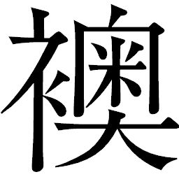
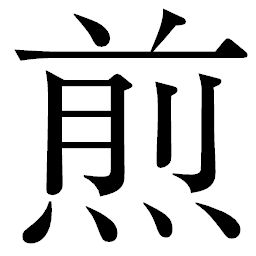
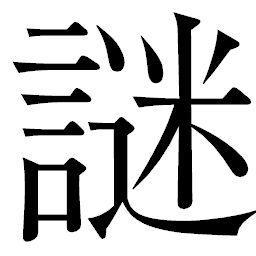

🏠
日
月
縦書き／横書き
| 〔小説〕SAMURAI7 第六巻 | |
| 冨岡淳広 | |
この本は縦書きでレイアウトされています。
また、ご覧になる機種により、表示の差が認められることがあります。
制作協力......株式会社ゴンゾ 笠間寿高
企画協力......深谷精一
第二十一章 仕掛ける！
旅立ちを決めたカツシロウとキクチヨに、キララはかける言葉が見つからなかった。
そして気
負
う二人を見るにつけ、村への道中のときと同じ思いがよぎる。
カンベエ様は意地悪だ。
あの二人が旅立ちを選択することはカンベエも十分に予測できたはずだ。それが、彼らが志すサムライのかたちのはずだからだ。わかっていてあえて、こんなふうに突き放したのか。キララはカンベエに憤慨していた。
振り子の淡い光は、そのままキララの心だった。胸騒ぎとともに、彼女もまた、カツシロウ同様喪失感に包まれていた。苦い気持ちを抱えながら水
分
りの社
に戻ると、久しぶりにシノが来ていて、セツと話し込んでいた。
「おシノさん......」
呼びかけて、キララの目はシノが手にしている手
拭
いに吸い寄せられた。カンベエの傷を手当てしたものだった。
「どうしてそれを」
「おらが呼んだ。お前と話させたくてな」
キララは二人の前に座った。どうにも居心地が悪く、頼るように振り子を握りしめた。波立つ光の熱を感じ、浅い呼吸をしながら目を伏せる。所在なげなその姿に、シノはわざわざ聞かなくても彼女の心根を察したようだ。
「キララ、おサムライ様ンこと、好きになっただか」
キララはうつむいて唇を噛んだ。
「カツシロウ様か」
返事はなかった。じっと手元を見つめていた。
「キララ。言っておくれよ。おめが誰ンこと惚れても、おら応援すっから。婆
様
も心配してるだよ。カツシロウ様のことだろ？」
「あの方のことは......、これからもずっと、あの方の苦しみを受けとめる者でありたいと思っています」
「なんだそれは。惚れてるんでねえだか？」
とうとう、根負けしたかのようにキララは小さく頷
いた。セツもシノもこれには驚いて、顔を見合わせた。
「やっぱり......、婆様、これを使った相手なんだよ」
シノは手拭いに目を落とした。それが、誰の傷に触れたものかわかっていたのだ。
「カンベエ様なんかい......」
ため息まじりにセツが言うと、キララは強く目を閉じた。しかし振り子は雄弁に、力強く輝いた。キララは慌てて、左の手首を摑み、掌
で振り子を包み込んで光を覆った。
「なあ、もしかしたらキララはカンベエ様にお父
うを見てるんでねえのか。キララは早くにお父う亡くしてるし......。そうでなくてもカンベエ様はお強い。みんな頼りにしてたもんな。あんな人を見つけてきたなんて、さすが水分り様だって、みんな言ってる。おらもはじめはそう思ったよ。街からずっとあの人とキララは一緒だったし、情が移るのも無理はねえと思うだよ。キララは、村じゃみんなから頼られてるから、いっつも自分に厳しくて、強くなろうとしてて、ぴりぴり気ィ張ってるから、あン人の頼れるところに惚れちまったんじゃねえのかなあ。自分、強く見せなくていいもんな。おら、キララの気持ち大事にしたいで、なんにも言わねえよ。ただなあ......。苦しいぞ、それは」
シノはゆっくりと、諭すように言った。一度こうと決めたらやすやすと曲げることのないキララであることは、シノは十分にわかっていた。
気が気でないのはセツのほうだ。まさか孫が、父親ほども歳の離れた武骨なサムライに心寄せるとは夢にも思っていなかったのだ。
「キララや。お前は、水分りなんだぞ」
「水分りだからこそ、この気持ちはしまっておくつもりです」
「いつからなんだ」
「わかりません......。街から、何日もおそばにいましたし......。この気持ち、自分を責めました。恥ずかしいことだとも思いました。水分りなのに、こんな気持ちをもったらなにもかも曇ってしまうと......」
「おらは、てっきりカツシロウ様かと思うとったで」
「カツシロウ様は堕ちる、と仰いました。ならば私も、ともに堕ちます。いつも同じ場所に立って清めてさしあげるのが巫女の仕事だと思うのです」
「ほんとにそれで、いいだか？ カツシロウ様にも、おめにも、ほんとに、いいことなんだか？ みんな言ってるぞ。カツシロウ様とキララは誰が見てもいい仲だって。たぶんカツシロウ様は、おめぇのこと好いてる。なのにおめは、カンベエ様に惚れてるときた。なのにカツシロウ様ンことばっか気にかけて、どっちつかずでなんだか、カツシロウ様がかわいそうでねえか？ おめだって、それで幸せになれるだか？」
シノの声
音
は一転、厳しかった。キララは反論できなかった。
自分でもわかってはいるのだ。カンベエへの気持ちと、カツシロウへの気持ちの狭
間
で自分は揺れている。
本当にそれが人を恋うる気持ちゆえなのか、そこまではまだ判然とはしなかった。
ともに堕
ちる、とキララはカツシロウに言った。
水分りの巫女という崇
められる場所から、どこに堕ちていこうというのか――。
迷いながらもはっきりしていることは、この気持ちはサムライたちには知られてはならないこと。
「忍びとおせるだか」
セツは言外にその気持ちを捨てろ、と匂わせている。
キララはまっすぐにセツを見返して、強く頷いてみせた。
「婆様。カツシロウ様とキクチヨ様は都
に行くと言っております。どうか私も一緒に行くことをお許し下さい。私はこの戦
を、最後まで見届けます。あの方たちをお連れした義務だと思っています」
「だめだと言っても、行くんだろ」
セツはまた、ため息をついた。
◎
アキンドの城、その名を「都
」。小島ほどもある全長を鋼
の船体で構成している。翼を広げて滞空するさまは優雅だが、その浮力を支えているのは船尾の紡
錘
形
の主機関と、両翼の一対の補助機関である。噴き出す高熱の排気が、都の後方の景色を陽
炎
のように揺らめかせていた。
かつての北軍大本営旗艦を誇った超巨大天守閣戦艦は、武装のかわりに大
店
が軒を連ね、虹
雅
峡
よりもはるかに強い輝きを持つ照明が、林立するそれらを眩
く照らし出していた。
数世代に渡って続いた戦のもとで軍産複合体を装いながら力を蓄え、サムライの時代を一気にひっくり返したアキンドの手腕と才覚。大戦を収めた彼らの戦い方は、決して刀と武器にする消耗戦ではなかった。彼らの武器は情報と金だった。サムライの戦いを研究し、応用し、彼らは勝ちを収めた。勝利を買った、といってもいい。いつの間にか武士道に凝り固まり、不毛な会戦を重ねるだけに陥っていたサムライたちは、味方と思っていたアキンドたちに足元をすくわれたのだ。
カンベエの横顔から表情が消えた――。
サムライの時代の上に、アキンドは文字どおりに己の時代を築きあげた。都の姿は、その象徴にほかならない。カンベエの心を虚
ろな風が吹き抜けた。そのさまを目の当たりにした瞬間は揺れて怒りさえ湧きかけたが、その心は既に渇いていた。
これも時代というなら、諦
観
として受けとめる。金はさておき、情報が戦の最大の武器であることはカンベエも疑い得ない。都の接近に伴って吹きすさぶ強い風に髪をなぶられながら、カンベエは微動だにせず都を見つめ続けた。
船体下部から、幾重にも折り畳まれた階段が開いてきた。内部へ通じる御
用
門
に近
衛
兵
が数人待機していた。
「御一緒しますか、カンベエ殿」
「おぬしたちには世話になった。船の用意さえしてくれていれば、よい」
式
杜
人
に促され、カンベエは足を踏み出した。後ろで腰繩をとるキュウゾウがその後に続いた。
「キュウゾウ。危急の折は、頼む」
階段を上りながらカンベエが呼びかけると、キュウゾウは頷いた。
都からは見えない洞窟の入り口付近に、カンベエは船を待機させていた。カンベエのタヌキ芝居に乗った式杜人が用意してくれた、大戦時の軍用船だ。
◎
虹雅峡の広間に通された百人近いサムライたちは、途方もなく広い座敷に並べられた宴席と極彩色の内装に目を奪われ、感嘆のどよめきをもらした。太陽の光さえまともに見ることを許されなかった地下発電所という穴蔵に比べ、そこはまさに天国だった。ウキョウの御
側
女
衆
が三つ指ついて彼らを迎えいれ、それぞれ膳の前に座らせると熱燗の徳利を差し出した。
地下発電所から解放されたサムライたちに、ウキョウは風呂と着替えを真っ先に用意した。ことあるごとに、「これはウキョウから」「あれもウキョウから」と、サムライたちの案内役をつとめるかむろ衆に連呼させ、自分たちの現在がウキョウあってのものという意識を植えつける。
長い穴蔵での隷
属
生活にサムライたちの忍耐は爆発寸前だった。いわれのない罪で投獄されているという現実が、彼らの心に過度のストレスをかけ、この不条理を仕掛けているアキンドへの恨みは日々増大していた。
そこに、ウキョウからの解放である。投獄したのはアヤマロ、解放はウキョウ。悪いのはすべてアヤマロであり、アキンドの中でもウキョウは彼らの味方――。巧
みにサムライたちの心に自分のプラスイメージを植えつけ、その策はここまで完璧に進行していた。
御側女衆はウキョウによく言い含められており、サムライたちが腰に手を回そうが耳元であれこれ欲望むきだしに囁
きかけてこようが、媚びるような態度でサムライたちを喜ばすようにふるまっていた。
サムライたちは、料理を瞬
く間にたいらげてしまった。ほどよく酒も進んだところを見計らって、ウキョウがテッサイを伴って入ってきた。かむろ衆が数人付き従い、大量の刀を納めた箱を台車に載せて押してきた。
無造作に箱に突っ込まれた刀を見た瞬間、サムライたちは酔いに濁った目の焦点を合わせた。その態度の変化をウキョウは見逃さなかった。どんなにアキンドの時代であろうと、女と酒にうつつをぬかしていようと、やはり彼らもサムライ。これからウキョウが為
さんとしている謀
のためには、サムライであることを忘れない彼らの意識は必要なものだった。
「やあやあやあ。どうもどうも」
満足そうに頷きながら、ウキョウは宴席の只中に立った。扉の前にはテッサイを控えさせ、見ようによっては警護が横にいない分、無防備極まりない。その態度が、突然の解放にまだ若干の不安を残す彼らの安心を促すことを、ウキョウは計算していた。
「よいねえ。みんなスッキリした顔してるねえ。よいでしょう、外は。みんなはもう、放免だ。安心していいよ」
サムライたちを見渡して、ウキョウは笑顔を作った。一人一人の顔をしっかりと見ながら、慎重に言葉を選んだ。
「みんなはサムライだ。なのに父上は我が身可愛さからみんなのサムライの誇りを奪って地下に閉じこめた。その非礼、僕から詫
びるよ。このとおり。許してほしい」
ウキョウはいきなり、座敷で膝を折ると土下座した。日頃バカ殿と揶
揄
していたウキョウの真
摯
な態度に、サムライたちはいよいよ度
肝
を抜かれ、あぐらをかいていた彼らの酔いはいっぺんにふっ飛んだ。皆、慌
てて正座してウキョウを注視した。
「差配様、どうかお手をお上げください」
「おぬしが悪いわけではない。拙者らにかような忍従の日々を与えたのは、全部マロ様ではないか」
一人が言うと、多くのサムライたちが同意の声を挙げた。信じ切った彼らの目に、ウキョウは心の中で舌を出した。
実際、彼らを通常の留置から地下発電所に送りこんだのはウキョウだというのに。しかしここにもからくりがあり、マロ御殿内での通達のすべては、今日に至るまでアヤマロ名義であることが徹底されていた。公式には、ウキョウは仮の差配。指示のすべてにはアヤマロの意志が反映されていると、使用人すべてに思い込ませていたのだ。
「でも今、この街の差配はこの僕だ。僕が謝るのは当たり前だよ」
ウキョウは顔を上げた。その前に一人の老いたサムライが進み出てきて、床に手をついた。
「我ら一同、差配様の過分なお心遣い、かたじけのう思うてござる。皆を代表して、身
共
より差配様に是非聞いていただきたいことがあるのだ。今、差配様が来るまで話しおうていたのだが、差配様の御厚情に我ら一同、なんとしてでも報いたい。なんでも言ってほしい」
老いたサムライの目には、解放の喜びからくる精気が宿っていた。
ウキョウはとりわけ神妙な表情を作った。
「ありがとう。その言葉に甘えるわけじゃないんだけど、みんなに一つ、頼まれてほしいことがあるんだよねえ......。みんなにはこれから、近在の村に行ってほしいんだよ」
「ほお。してそれは、なにゆえ」
「少し前に、この街でカンナ村から来た百姓がサムライを米で買おうとしていたこと、覚えてる人いる？ なかには、声をかけられた人もいるだろうけどねえ」
反応はあった。サムライたちは口々に「知ってるぜ」「ああ、あの百姓か」「俺も声をかけられた」「わしも」「拙者も」と声を上げたのだ。誰も彼も、飯は ったが話は聞かなかった者や、往来でキララたちに声をかけられて、相手が百姓と見るや即座に突っぱねた者たちだ。中にはキクチヨが牢破りして連れてきたサムライたちの顔もあった。
ったが話は聞かなかった者や、往来でキララたちに声をかけられて、相手が百姓と見るや即座に突っぱねた者たちだ。中にはキクチヨが牢破りして連れてきたサムライたちの顔もあった。
ったが話は聞かなかった者や、往来でキララたちに声をかけられて、相手が百姓と見るや即座に突っぱねた者たちだ。中にはキクチヨが牢破りして連れてきたサムライたちの顔もあった。「うわあ、こんなにいたんだねえ。実はあの百姓たち、見事サムライを雇い入れたんだよねえ。サムライたちも本当に野伏せりをやっつけてしまったんだって。凄いよねえ。僕もいろいろ調べてみたんだけど、野伏せりってのは都
が送り出してるって話なんだよねえ。ひどいじゃないの。いま、みんなから仕事を奪って、百姓たちを苦しめているのは、都なんだよ。都は、アキンドの親玉だからね。アキンドの風上にもおけないよねえ」
ウキョウからもたらされる話に、サムライたちは口を挟む者もなく、皆呆
けた顔で聞いていた。初めて聞くことばかりだ。都なるものが栄えていても、それが何か具体的に見聞した者はこの中にはいなかったのだ。
「差配様、確かに驚くべき話ではございますが、かくいう差配様もまたアキンドではありませぬか」
老いたサムライは言った。
「うん。それで僕、考えたんだよ。世の中はこのままじゃいけない。都は野伏せりを手先にしてるのを内緒にして、百姓を脅してる。とんでもない情報操作だと思うんだ。みんなだって、このまま食うや食わずの毎日なのは嫌だよね。僕ら下々のアキンドだって、毎年勅
使
殿
を迎えて都の視察を受けて、ビクビクしてなきゃならない。アキンドにも階級ってあってね、虹雅峡は新興の街だから都から見たら随分と下に見られてるんだ。みんな、都に苦しめられてる。だからみんなで、カンナ村のやり方を真
似
したらどうかと思うんだ」
「我らに、都と戦えと」
「みんなのためさ。主役は、みんなと百姓だ。みんなの力を一つに合わせて、都の支配から脱するんだ。どうかな、やってくれるかな。もちろん、手当ては出すよ」
サムライたちは唐突な申し出を理解しきるまで、時間がかかったようだ。はっきりしていることは一つ。野伏せりを相手に、百姓と共に戦え、と言っているのだ。
サムライたちは互いに顔を見合わせて互いの心中を推
し量
り、なかなか答えを出せずにいる。代表だ、と手をついた老ザムライでさえ、思案顔だ。
もう一押し必要だ、とウキョウは思った。その目は酒宴のサムライたちの中にいる一人の男に注がれた。念のためにウキョウが仕込ませておいたサイボーグ用心棒の一人だ。サムライたちはあまりの数の多さと、地下発電所でも部署が細かくわかれていたおかげで、この場が初対面という者も多くいる。その状況を利用して、機械化した部分を着物で隠した用心棒を〝いかにもサムライ〟のフリをさせて忍び込ませ、サムライたちと交流させて彼らの本音、真意を探らせていたのだ。
ウキョウの視線を受けて、サイボーグ用心棒は声を上げた。
「俺はこの話、乗ってみようと思うが、皆はどうか。この差配様、なかなかどうして高い志をお持ちだ。アキンドどもに一矢報いることができるのなら、こんな愉快なことはなかろう。おぬしらはサムライではないか。アキンドに思うところあるのではないのか!?
こうして解放されたはよいが、この先皆、どうやって食べていくつもりだ。俺たちはまた刀をふるえるのだぞ。アキンドの時代ではない、俺たちサムライと、アキンドが手を組んで、新しいお上を作ってやろうではないか！」
サイボーグ用心棒は、迷っている全員の気持ちを激しく った。
った。
った。 ウキョウは辛抱強く待った。サイボーグ用心棒の言葉が全員の心に染み渡っていくのが、表情の変化から見てとれる。
一人の中年のサムライが、酒を徳利から一気にあおると、立ち上がった。
「拙者も請
けよう」
続いてサムライたちは、口々に「やろう」「請けよう」と追随した。そのシュプレヒコールを聞きながら、ウキョウは満足そうに微笑んだ。これで、安価な戦力は確保できた。
「よいねえ。うれしいよねえ。じゃあ、みんなに刀を返すよ。旅支
度
も用意してあるんだ。それから、大事なものがあるんだ。どうやってカンナ村が野伏せりに勝ったか書いた、指南書を作ったから持っていって。行った先の百姓たちと協力して、武器を作るといいよ」
ウキョウはゴーグル男が報告してきたカンナ村の戦いのすべてを記録させ、戦闘マニュアルに仕立てあげていた。かむろ衆が配る刀に群がるサムライたちを笑顔で見つめながら、ウキョウはこの顔に生まれ変わってから長い時間をかけて蒔
いてきた種が、徐々に芽吹きはじめている手応えを感じ取っていた。

が開いてヒョーゴが入ってきた。
医師コウアンの名を使いウキョウを強請
にかかったジンロクを調べに行っていたのが、戻ってきたのだ。精気のない目でウキョウのもとに囁く。
「若。始末して参りました。ジンロクなる男の住まいは貧民窟で名高い......」
「いや、いいよ。名前は」
ウキョウは不快そうに目を細めた。
「はっ......」
「で？ そこ、どうしてきたわけ」
「すべて焼いて参りました。何も残っておりません」
ジンロクの住んでいたあばら屋を発見したヒョーゴは、交友関係を洗ってジンロクの女をあぶりだした。場末の小さな酒場で春をひさいでいた女が、確かに証拠を持っていたのだ。スエキチなる百姓の手術の診断書――。
ヒョーゴは女を斬り、骸
もろとも診断書と酒場を焼き払った。同行のサイボーグ用心棒たちも協力して、貧民街そのものをすべて焼くという暴挙に出たのだ。ジンロクにまつわる一切を、この世から消しにかかった。その詳細をヒョーゴは何も言わなかった。すべて、焼いた。
それだけで、ウキョウは満足そうに頷き、笑みを浮かべた。
「よいねえ。ヒョーゴ、いい仕事をするねえ。やっぱり君を生き返らせてよかったよねえ」
話を聞きながら、テッサイは息を呑んでいた。以前のヒョーゴとはまるで違う印象を受けたのだ。仕事の仕上げに、焼き打ちまでするような男ではなかったはずだ。
動揺するテッサイのもとに、かむろ衆が一人やってきて耳打ちした。
「......まことか!?
」
テッサイは驚いたようにかむろ衆からヒョーゴに視線を移し、そのままウキョウを見るなり大股に歩み寄ってくると、ウキョウにも耳打ちした。刀に群がるサムライたちの声が賑やかで、囁くテッサイの声を聞きつける者はいなかった。
「若、ただいま出入りの式杜人より火急の報
せが......。例の、御勅使殿殺害の下手人をキュウゾウが捕らえ、式杜人を通じて都に連行したとのことです」
「キュウゾウが？ ほんとに!?
」
「くわえてその下手人ですが、カンナ村に雇われたサムライたちの首
魁
と目される島田カンベエとのこと」
「へぇえ......、よいねえ......」
予想もしていなかった二つの名前だった。ではキュウゾウは、ヒョーゴを斬っておきながらアヤマロの指令を果たしていたということなのか。ウキョウは長い髪を指先で弄
びながら、目を細めて思案する。やがて彼は、ヒョーゴを手招きして側に呼び寄せると、楽しそうに笑みを浮かべた。
「待たせて悪かったねえ。キュウゾウに会いに行くよ」
ヒョーゴは息を呑んで、来たるべき時を思い、ただ黙って頭をさげた。
◎
式杜人はカンベエを近衛兵に引き渡すと、帰っていった。
カンベエは、キュウゾウの持っていた腰繩はそのままに、両手は後ろ手に、硬質な鉄製の手錠をきつくはめられた。キュウゾウは武装したまま、同行することとなった。
前後を近衛兵に挟まれて歩く途中、カンベエは注意深く内部を観察した。艦内構造は大戦当時とそれほど変わらない。無機質で殺風景すぎた内部は、現在の住人アキンドの趣味にあわせて明るく塗り替えられ、金箔を貼った燭
台
が並んでいる。床は厚い絨
毯
が敷き詰められ、足音を消してくれた。通路の左右には各建物へ通じる扉が一定の間隔をおいて並んでいた。階段や昇降装置も当時のものをそのまま流用している。
大戦時、何度か入ったことのある艦内。構造は頭の中に入っており、カンベエがこれからなそうとしている事態と脱出の道筋は即座に計算された。しかし、外装があまりに変わっているので武装の実体までは不明だ。遠方から見上げただけだが、両舷
に砲塔を収納していると思
しき装甲が何ヶ所か見受けられているため、まだ戦艦としての機能も残っているようだ。
前後を歩く近衛兵からも、時代の変化は見てとれた。彼らは軽量化された鎖
帷
子
を着込んではいるものの、刀を差していなかった。そのかわりに腰にぶらさがっているのは、革のホルスターに入った鉄砲だ。長い弾倉を装
填
していることから、連発式であることは見てとれた。大戦時はまだ開発途中だった自動装填型ではないか、とカンベエは推理した。
小さな、窓のない部屋にカンベエは通された。
「御
天
主
様
自ら、おぬしに糺
したいことがあると仰っておられる。御準備が整うまで、しばしここで待て。キュウゾウ殿は我らと共に来ていただこう」
カンベエは腰繩と手錠のまま、部屋に突き倒されるようにして押し込められた。扉が閉まる直前、カンベエはキュウゾウと視線を交わした。
キュウゾウの表情はまったく変わらず、眠そうな目もそのままだったが、短く顎
を引いてカンベエに頷いてみせた。
大戦時、天守閣部分だった城塞は、現在壮麗な大
店
と化している。その内部の中心に作られているのは、天
主
と呼ばれる都の主が、これに従う差配衆、各地方のアキンドたちとの謁
見
等を行なう天
覧
の間である。
白を基調とした内装を際立たせるように、三基の照明が室内をあますところなく照らし出している。左右の壁には職人に描かせた、街の発展を活写した絵画があった。数段高く作られた天主の玉
座
は、三方を御
 が囲い、その周囲を警
邏
の近衛兵が極彩色の着物をまとって直立不動の状態だった。
が囲い、その周囲を警
邏
の近衛兵が極彩色の着物をまとって直立不動の状態だった。
が囲い、その周囲を警
邏
の近衛兵が極彩色の着物をまとって直立不動の状態だった。 観音開きの扉を開けて、キュウゾウが近衛兵に従って入ってくると、既に待機していた差配衆が一斉に彼を注視した。差配衆といっても虹雅峡の、成り上がりの金持ちとは違う。大戦以前から続くアキンドの伝統にのっとって、白塗りの化粧にゆったりとした金糸銀糸を織り合わせた着物。食事のせいか遺伝子のせいなのか、なぜか皆一様にふっくらとした顔つきだ。
差配衆は両翼に整列し、中央には赤い絨
毯
が敷かれ、御
まで続いている。キュウゾウは静かに歩き出した。
まで続いている。キュウゾウは静かに歩き出した。 すると、差配衆の中からアヤマロが静々と進み出てきた。勅使殺害現場で動揺していたあの卑小な態度はどこにもなく、でっぷりと張った腹を重そうに抱えて顔中笑みでくしゃくしゃにしながら、キュウゾウを迎え入れるように両手を広げた。
「キュウゾウ、そちとまた会えて、余はうれしいぞえ」
アヤマロは周囲に声を響かせるように、言った。
「ウキョウは、どうしていやる。ヒョーゴとテッサイも、達者かえ」
「ヒョーゴは、斬った」
「斬った？ なぜに!?
」
「おぬしには、わからぬ」
キュウゾウもまた、アヤマロから視線を周囲に移していった。状況を見てとっていく。差配衆には武装はないが、広大な天覧の間のあちこちに、派手な着物の衛士たちが四
対
の状態で配備されている。一見稚
児
のような服装ではあるが、美しく染め抜いた柔らかな着物の下には、特殊繊維の鎖帷子を着込んでいることはわかった。
突き放した答えにアヤマロは困惑しながらも、それでも下
卑
た笑みを顔中に浮かべ、福耳を揺らしながらキュウゾウにまくしたてた。
「まぁ、よい。よいぞえ。そちとヒョーゴには余も知らぬ思いもあったことじゃろうて、そちが斬ったというなら残念じゃが、それもやむなしじゃ」
アヤマロの背後に、背の高い差配が近づいてきた。その男を見た途端、アヤマロは恐縮して道を開けて差配をキュウゾウの前に通し、自分は脇に控えた。
絹の着物は白く柔らかく、金糸銀糸をあでやかに織り込んだ袖と裾の装束と、黒地に紫の紋様を染め抜いた烏
帽
子
は高貴さを演出している。切れ長の細い目を色の濃い眼鏡で覆い隠した男は、薄く横に長い唇をほとんど動かさず、淡々とキュウゾウに声をかけてきた。
「余は差
配
衆
筆
頭
大
差
配
サネオミと申す。キュウゾウ殿よ、ただいまアヤマロ公は勅使殿殺害の責により、謹慎の身。あらためて商いのなんたるかを学んでいただきたく、召喚をした次第にあらしゃります」
サネオミと名乗った大差配は、高い位置にある腰を折って、キュウゾウに会釈した。感情を抑制した声は、アヤマロを萎
縮
させた。
「さらに、もう一つ。アヤマロ公は勅使殿殺害にまつわって、奇
天
烈
なことを申しておりますれば、嘘かまことか、その内実を見極めるのも都のつとめ。お前様の言葉一つで、アヤマロ公の運命
は決するやもしれぬにあらしゃりましょう」
尊大で慇
懃
で、見下したような口調だ。キュウゾウはその言葉で、アヤマロが都に来て何を開
陳
したのか察しがついた。
「キュウゾウ、そちは、余の言いつけを守って、下手人とその裏で動いている者どものたくらみを暴いてきたのであろう？ 御勅使殿殺害の裏には、確かに、カンナ村がいたのであろう？ ゆえにあのサムライをとらまえてきたのであろう？」
アヤマロは必死に、すがるようにキュウゾウに訴え、差配衆にも声を張った。
「皆々様も、いま一度聞いてたも。余のおさむる虹雅峡にカンナ村よりの百姓が現れ、野伏せりを倒すため米を恩賞にサムライ集めをはじめたのじゃ。御勅使殿の殺害はそのさなかの出来事なのじゃ。余の手の者の調べによれば、御勅使殿のまことの下手人はカンナ村。御勅使殿の殺害も、野伏せりへの戦
仕
掛
けも、カンナ村が御
政
道
に楯突いている証しにほかならぬこと明白なのじゃ。百姓ごときが、戦を終わらせ、平穏をもたらした我らアキンドに対し逆恨みにも等しい被害者意識をもち、アキンドの足元をすくおうとしておるのじゃ！ 余は、カンナ村一味のあぶりだしを行なうとともに、これ以上百姓と街場の浪人どもが通じるのを防ぐためサムライ狩りを行ない、浪人どもの隔離をはかったのじゃ」
アヤマロは百姓という言葉に力を込めた。都のアキンドの特権意識を激しく揺さぶるように。
キュウゾウとヒョーゴへの密命であり、ヒョーゴが復活後にウキョウに聞かせた話とは、まさにこの内容だった。アヤマロは保身をかけて、すべての罪を百姓になすりつけようと謀
っていたのだ。
「御勅使殿殺害の現場に残されていた刀は、アキンドへの宣戦布告に相違ない。かように推し量った余は、キュウゾウをカンナ村一味に忍ばせ、動静を探らせておったのじゃ。そして、ついに御勅使殿殺害の下手人を捕らえるに至った。これはまさしく、カンナ村が一連の事件の糸を引いていたことの証しではあるまいか！ のうキュウゾウ、そうであろう？」
顎を引いて、キュウゾウは頷いた。
頷いたキュウゾウを見て、サネオミはほくそ笑んだ。
「この者、頷かれましたぞ。御天主様」
ここまではカンベエの読みどおりだ。潜入を謀る前、キュウゾウはカンベエに、自分が何を目的に砂漠まで派遣されたのか、なぜヒョーゴとソウベエらが手を組んでいたのかを、カンベエに語っていた。そして強
襲
揚
陸
艦
で聞いた、背後に蠢
く都という存在。
カンベエはアキンドがサムライを制した大戦末期を思い出し、彼らがサムライ以上に「情報」を重視していることを知っている。結局、戦局を左右するのは情報なのだ。情報が行き渡っているなら、キュウゾウがアヤマロの企
みを肯定することで、都側は必ずこう言うはずだ――。
「たばかりおるか、サムライ。ならびにアヤマロ。このうつけめ」
天覧の間に、甲高い声が朗々と響き渡った。機械で増幅されたような耳障りなノイズが微かに加わっていた。
アヤマロは、ひきつった顔に脂汗を吹きだし、声をつまらせながら床にはいつくばって頭を下げた。
キュウゾウは声のした御
へ視線を動かした。都は、まさにカンベエの読みどおり、キュウゾウの嘘に食らいついてきた。こうなれば後は読み合いの勝負だ。
へ視線を動かした。都は、まさにカンベエの読みどおり、キュウゾウの嘘に食らいついてきた。こうなれば後は読み合いの勝負だ。 周囲の差配衆が声とともに正面の御
に向き直り、かしこまって一斉に頭を下げた。
に向き直り、かしこまって一斉に頭を下げた。 極彩色の衣装をつけた稚児が二人、御
の前に進み出てきた。手には錫
杖
を携
え、三度、床を打ち鳴らすたびに、尖端についた鈴が軽やかな音を立てた。都の主の出現を声高らかに宣言した。
の前に進み出てきた。手には錫
杖
を携
え、三度、床を打ち鳴らすたびに、尖端についた鈴が軽やかな音を立てた。都の主の出現を声高らかに宣言した。「御
天
主
様
、御
成
り。御天主様、おなァりィ」
三方を覆った御
が、物体の移動を示すようにふわりと動いた。御
越しに見える影は、天
主
が駕
籠
のような乗り物に乗っていることを示していた。
が、物体の移動を示すようにふわりと動いた。御
越しに見える影は、天
主
が駕
籠
のような乗り物に乗っていることを示していた。「アヤマロ。そちがここに来てはじめに申し開いたその話、余はじつに興味深く聞いた。故に、東部方面野伏せり筆頭シュウサイに、その実相を調べさせたのじゃ」
御
越しに聞こえる天主の声は、不快を隠そうともしなかった。
越しに聞こえる天主の声は、不快を隠そうともしなかった。 キュウゾウは察した。緒戦の、稜線を埋め尽くす大部隊の意味はこれか。強襲揚陸艦が二隻に増え、リキチの情報よりもはるかに圧倒的な数の野伏せりを送り込んできたのは、天主の差し金だったのだ。
「緒戦において、カンナ村は船を一つ、沈めた。その直後、 跳
が一人ここに戻り報告をしておったのじゃ。キュウゾウなるその男、まぎれもなくカンナ村一味」
跳
が一人ここに戻り報告をしておったのじゃ。キュウゾウなるその男、まぎれもなくカンナ村一味」
跳
が一人ここに戻り報告をしておったのじゃ。キュウゾウなるその男、まぎれもなくカンナ村一味」「恐れながら御天主様、キュウゾウは奴らの味方を装いながら、下手人を探っておりましたにございます。野伏せり殿への攻撃は、一味を安心させるためやむなしと」
「黙らっしゃれ」
「ははっ......」
「そちの言うことも、そのサムライが言うことも、すべて、都をたばかるための方便。この天主をたばかろうとは、アヤマロよ、そちも偉くなったものではないか？」
天主は喉を打ち鳴らすような、くぐもった笑い声をたてた。
「ははあっ！ 恐れ入りましてございます！」
アヤマロは平身低頭した。汗が幾筋も頰を伝い、床に落ちた。
「はっきりしていることは、ただ一つ。勅使が殺
められたこと。これだけじゃ」
四方の近衛兵たちが、天主の言葉と同時に連発式の鉄砲をキュウゾウに向けた。背中の二刀流も、持っていたカンベエの刀も取り上げられた。そのうちの一人はキュウゾウの脇腹に、銃口を押し当てて動きを封じた。
サネオミは御
の前に進み、一礼して御
の横に立つと言った。
の前に進み、一礼して御
の横に立つと言った。「下手人を、これへ」
サネオミに促され、観音扉が開かれた。
後ろ手に手錠をされたカンベエが腰繩をとられて連行されてきた。鉄砲を向けられながら、ゆっくりとキュウゾウの立った場所に向かって、銃口で背を小突かれ、絨毯の上を歩まされる。差配衆は異様なものを見る目で、カンベエを注視した。静かなどよめきが広がっていった。
「島田カンベエと言ったか。シュウサイらを壊滅させた策、まことあっぱれにあらしゃった。あれは大戦時にも相当に武勲をたてた手
錬
れと聞く。その上を行ったというそちを、見てみたかった。なるほど傲
岸
不
 、サムライの顔にあらしゃりましょう」
、サムライの顔にあらしゃりましょう」
、サムライの顔にあらしゃりましょう」 カンベエは御
を睨
み据えた。都の主がそこにいる。戦後ばらばらになり、野伏せりに身を落としたサムライをとりまとめながら、ただの主従関係ではなく、〝野伏せり〟と名乗らせた者。
を睨
み据えた。都の主がそこにいる。戦後ばらばらになり、野伏せりに身を落としたサムライをとりまとめながら、ただの主従関係ではなく、〝野伏せり〟と名乗らせた者。 カンベエはキュウゾウの隣に立たされた。差配衆の視線が突き刺さる。二人の正面にも、鉄砲を構えた近衛兵が立った。
「あらためて、そちは勅使を斬ってなど、おらぬ。にもかかわらずこれを り、都に来たるはなにゆえにあらしゃるや」
り、都に来たるはなにゆえにあらしゃるや」
り、都に来たるはなにゆえにあらしゃるや」「あててみろ」
カンベエは言った。互いに言葉のあやを読み合う。
「ほ、ほ、ほ。語るに落ちた。それとも
りを行なうそちじゃ。その言
もたくらみのうちにあらしゃるや」
りを行なうそちじゃ。その言
もたくらみのうちにあらしゃるや」「なれば、いかにする」
カンベエは挑発するように言った。
「面白い男じゃ」
天主の声が、さも楽しそうな含みをもった。すると三方の御
が静かに巻き上がっていく。ついに天主が、その姿を現わした。
が静かに巻き上がっていく。ついに天主が、その姿を現わした。 それは巨大な生命維持装置によって全身に循環器用のパイプを差し込んだ、小さな人形のような存在だった。艶やかな烏帽子と目に鮮やかな紋様を描きこんだ絹
装
束
をまといながら、能面にも似た仮面をつけている。見える本体は仮面の奥の目だけであり、その他の一切が衣装に覆い尽くされていた。真綿にも似た椅子の中に沈むその姿――明らかに、両手と両足がなかった。
金属的な響きを持つ声の正体は、喉につけられているのであろう反応装置が、声帯のかすかな震えを増幅することで作り出された人工的な音声だった。
天主は、この生命維持装置と一体化した車椅子に乗って移動していた。脳に直接つないだ電極を通じて移動を行い、声を発し、食事も排
泄
もすべて、機械を通して行っている。サムライの機械化がもたらした技術が、こうした形で結晶していた。
「ほ、ほ、ほ。目を離せぬか。鮮やかなるこの衣の下は、左
様
、そちらの思い描く姿にあらしゃる。長
の戦による爆弾の炸裂にまきこまれ、余の顔と声と手脚は失われ、体にはふた目と見られぬ傷を負った。余はもはや自分で動くこともできず、息をすることさえも機械なくしてはままならぬ。これすべて戦のためじゃ。サムライが、余の体を壊したのじゃ」
仮面の奥で、瞳が可
笑
しそうに細められた。
カンベエは、なぜ、落武者たちをあえて野伏せりと呼ばせていたのか理解した。天主はアキンドの才覚をもって、壊された自分の肉体のために戦とサムライへの復讐を果たしているのだ。
野伏せりという言葉がもつ侮 的な響き、にも関わらず体制側にいることを条件に機械のサムライたちに忍従を強いるよう仕向け、商いなくしては時代が成り立たないように構築していく。各地の都市を結ぶネットワークはその最たるものだろう。徹底した情報統制で、百姓に対しては野伏せりにのみ怒りの矛先を向けさせ、時代の覇者が変わっているという事実に目くらましをかけている。
的な響き、にも関わらず体制側にいることを条件に機械のサムライたちに忍従を強いるよう仕向け、商いなくしては時代が成り立たないように構築していく。各地の都市を結ぶネットワークはその最たるものだろう。徹底した情報統制で、百姓に対しては野伏せりにのみ怒りの矛先を向けさせ、時代の覇者が変わっているという事実に目くらましをかけている。
的な響き、にも関わらず体制側にいることを条件に機械のサムライたちに忍従を強いるよう仕向け、商いなくしては時代が成り立たないように構築していく。各地の都市を結ぶネットワークはその最たるものだろう。徹底した情報統制で、百姓に対しては野伏せりにのみ怒りの矛先を向けさせ、時代の覇者が変わっているという事実に目くらましをかけている。「島田カンベエとやら。そちには斬る動機がない。百姓にはアキンドへの怨
嗟
もない。たわむればかりを申さず、答えてみよ。答えねば、キュウゾウとやらの手足を、一つ一つこの場にて撃つ」
カンベエは何も言わなかった。
キュウゾウも、無反応なままだ。
「そうか。それが答えにあらしゃるや。撃て。まずは、右脚じゃ」
天主は淡々と命じた。
キュウゾウの脇腹に立った近衛兵が、鉄砲を構え直し、引き金にかけた指に力を込めた。人を撃つときの緊張感が、近衛兵が放つ気から伝わってくる。おそらくは人が傷つくさまを見たことなどないであろう差配衆も、息を呑んで見つめてくる。
その心理的緊張を頃合いよしと見たキュウゾウが、跳んだ。
突如脚を振り上げて正面の近衛兵の鉄砲を蹴り上げ、顔面を駆け上がって宙を舞った。自分たちの刀をとりあげ、背に差した近衛兵の後ろをとると、当て身をくらわせて前にのめり倒し、二刀流を抜き放ったとみるやカンベエの手錠の鎖を叩き斬った。引き金に力を込めていた近衛兵は、ついに引き金を引き切って銃撃したものの、キュウゾウを目で追うことすらかなわず天井を抉
って漆
をふらしただけだった。その近衛兵に、キュウゾウは袈
裟
懸
けに一太刀浴びせた。
をふらしただけだった。その近衛兵に、キュウゾウは袈
裟
懸
けに一太刀浴びせた。 カンベエの自由になった手に、キュウゾウは近衛兵が背負ったままのカンベエの刀を蹴り放った。後ろ手のまま を摑んだカンベエは、前に振り上げざま抜刀した。銀光に照明の乱反射を受けながら、姿勢低く天主へと突き進んだ。
を摑んだカンベエは、前に振り上げざま抜刀した。銀光に照明の乱反射を受けながら、姿勢低く天主へと突き進んだ。
を摑んだカンベエは、前に振り上げざま抜刀した。銀光に照明の乱反射を受けながら、姿勢低く天主へと突き進んだ。 差配衆たちが瞬き一つする間の反撃。威嚇していたはずの近衛兵たちは、予想もしなかった二人のサムライの動きにのまれ、銃撃はままならなかった。
アヤマロは腰を抜かし、頭を抱えてその場にうずくまった。
差配衆が逃げ惑う。晒
し者にされていたはずのカンベエとキュウゾウには、動きも緩慢な彼らのあわてぶりは楯として有利に作用した。
カンベエの形
相
にサネオミは足がすくんで動けない。カンベエは
でサネオミを強打し、打ち払った。天主警
邏
として御
の三方に待機していた近衛兵が鉄砲を構え、稚児たちも錫杖の尖端を外して槍を突き出してくるのをカンベエはかいくぐり、刃を一
閃
して斬り捨てた。
でサネオミを強打し、打ち払った。天主警
邏
として御
の三方に待機していた近衛兵が鉄砲を構え、稚児たちも錫杖の尖端を外して槍を突き出してくるのをカンベエはかいくぐり、刃を一
閃
して斬り捨てた。 たちまち警備を失った天主の能面に、カンベエは刃を突きつけた。
能面は真っ二つに割れた。焼けただれた皮膚が現れた。顔の三分の二は赤黒く変色し、さながら顔のない目と化している。受けた爆発の凄まじさが見てとれた。
その瞬間、騒然となりかけた天覧の間が静まり返った。想像もしなかった状況が差配衆の眼前に出現したのだ。アキンドに刃
を向けるサムライ。そして、差配衆でも見た者のほとんどいない天主の素顔。酸
鼻
なその様子に、目をそむける差配まであらわれた。
カンベエの背中を守ってキュウゾウは刀を構えた。差配衆は壁際に下がり、かわって近衛兵たちが御
の周囲に集まってきた。
の周囲に集まってきた。 ようやく正気にかえったアヤマロが、衝撃のあまり取り乱し、叫んだ。
「キュウゾウ、そちはっ......、そちは、なんという不敬を！」
キュウゾウの表情は変わらない。両手を大きく広げて二本の刀で近衛兵たちを威嚇している。
近衛兵たちは、いずれも金で買われた野伏せりあがり。機械体もいれば、生身の人間もいる。彼らの心も、不意にあの戦の空に戻っていた。刀一つで斬り込んできたサムライたちの姿を、カンベエとキュウゾウに見て、誰の鼓動も早まっていた。
彼らの動揺などおかまいなしに、アヤマロは叫び続けた。
「キュウゾウ、許さんぞえ！ 撃て、撃て、この狼
藉
者
どもを撃て！」
「撃てるのか。儂
を撃てば、天主にもあたるぞ」
カンベエの一喝に、アヤマロは反射的に口をつぐんだ。近衛兵たちも鉄砲を腰だめにしながらも、引き金にかけた指を動かせない。それでもアヤマロはなおも叫んだ。
「世迷い言じゃ、撃て、撃て！」
「試してみるか。儂を貫いた弾
丸
がどこで弾けるか、しかと見るがよい！」
「ええい、黙れ、黙れ。撃つのじゃ、皆の者！」
「なりませぬ、アヤマロ公。サムライの言うとおりにあらしゃるのです、たとえきゃつを撃っても、この近さでは鉄砲の弾丸はきゃつを通り抜けてしまうのじゃ。御天主様にあたることは必
定
！」
顔を真っ赤にして憤激するアヤマロに、サネオミが言った。
天主に仕える以上、近衛兵たちはカンベエに屈するしかなかった。皆、引き金にかけた指から、力を抜かざるを得なかった。
「卑怯者ッ！ 卑怯者めッ！」
アヤマロや差配衆が口々に叫んだが、カンベエは無視して天主へと視線を戻した。怯
えきった差配衆のどよめきに比べ、天主の瞳は、まったく動じていなかった。それどころか挑発的な視線をカンベエに送ってくる。肉体を破壊されながら生き永らえた強固な意志を、カンベエは瞳の中に見た。
「ほ、ほ、ほ。余を斬るが狙いにあらしゃるや。アヤマロの言ったこともあながち嘘ではなかったようにあらしゃるの」
「攫
った女たちは、どこだ」
「女か。ほお......。狙いは、女か」
「おぬしらが野伏せりに攫わせた女たちだ。一人残らず連れていくぞ。それまでおぬしは、儂の弾よけだ」
カンベエの声には、怒気があった。豪
奢
な衣装の下につながったパイプやカテーテル類を引きちぎるように、手足のない体を抱き上げる。まだ数本の管が天主の体につながっている。カンベエがなおも力を込めたとき、サネオミが動揺して叫んだ。
「やめろ！ 御天主様は、その機械なくば御命を保つことができないのじゃ！」
「人質なら、余が代わりに！」
アヤマロも、 うようにしてキュウゾウのもとにすりよってくる。
うようにしてキュウゾウのもとにすりよってくる。
うようにしてキュウゾウのもとにすりよってくる。 キュウゾウは刃を向け、アヤマロを牽
制
して動きを止めた。
「天主でなくば意味がない」
カンベエは笑みを浮かべた。凄絶で情の一切ない悪鬼がそこにいた。その場にいた者すべてが凍りついた。
天主には、笑みの意味が伝わる。冷厳を装いながら、抑圧した感情が見える。この男には明確に殺意がある。
「管を切れ。すぐに死ぬわけではないゆえ、そちの好きにしやるがよい。サネオミ、この者らを奥御殿に案
内
してさっしゃりなされ」
諦観とも挑発ともつかぬ声
音
で、天主は言った。
カンベエは刀で管を切った。養液が管から数滴、弾け飛んだ。衣装の襟を摑み、天主を自分の前に掲げて楯にする。襟元以外に、摑む場所がなかった。袖の動き具合で右腕は肘
から下が、左腕は肩の付け根からなくなっている。両足も付根からなくなっていた。足の入っていない長い裾が、床まで垂れさがった。伝声用のコードも切られ、天主の声はサネオミへの指示を最後に途絶えることになった。
「ついてくるがよい。衛士たちは従うにあらず。されど御
典
医
を奥御殿に用意じゃ。急げ！」
カンベエとキュウゾウの視線に呑まれながら、サネオミは先導した。天主を掲げたカンベエとキュウゾウがその後に続いた。ついてこようとする近衛兵たちはサネオミの指示を受けて待機せざるをえず、天覧の間は、主を失った生命維持装置の稼働音だけが響いていた。
攫われた女たちの住む奥御殿は、天覧の間に隣り合わせた建物にあった。天主とその警邏を除く男は、よほどの許可がない限りは入ることが許されず、女たちが外に出ることも許されない。出入りはたった一つの門のみ。
「開けよ。緊急にあらしゃる」
カンベエらを案内して慌ただしくやってきたサネオミは、門の左右に立った警備の近衛兵に命じ、扉を開けさせた。カンベエが抱えた天主の素顔に息を呑みながら、異常な事態を前に近衛兵らは一切の質問をせず、従うほかなかった。太く大きな錠を解く。
「この門のほかに、出入りは」
カンベエがサネオミに問いかけた。
「ない。ここを通ってよいのは、御天主様のみにあらしゃる」
サネオミは門が開くのを待つのももどかしく、早足で奥へ奥へと入っていく。早足なのは、天主の残された時間を案じてのことだ。
「間もなく来る御典医に、そちたちは従え。左様心得よ」
サネオミの指示に、近衛兵たちは緊迫しつつも頭を下げた。
門をくぐると、内部には紗の垂れ幕が幾重にもかかって部屋を仕切っていた。入ってすぐに大きな生け花が飾られ、甘い香りを放っている。やわらかな色で配色された壁、あちこちに置かれた調度品は贅
を尽くしたものばかりだ。大きな窓からの採光も部屋の隅々まで行き渡っていた。どこからともなく、琴の音色が聞こえた。
歩きながら、サネオミは言った。
「サムライよ、女たちを連れ出しに来たとおっしゃいまするか。しかしながら、さて、皆外に出たいと申しますかな......。なるほど確かに、ここに来たはじめは、女たちは戸惑いこそすれ、御天主様のはからいで天国がごとき衣食住を与えられている今、こここそ素晴らしいと思うておる者ばかり。土をいじるよりも女らしく、蝶よ花よと愛
でられては悪い気などいたさぬもの。不自由なことなど一つもありませぬ」
女たちは籠の鳥も同然だったが、天主は内部での自由度は高めており、娯楽と豪奢な生活を用意して、拉致されてきたというストレスを軽減するよう図っていた。恐怖ではなく、ここに来たことは名誉なことだと思わせた。次々連れてこられる女たちは、はじめは泣き叫び抵抗するも、先にいた女たちによって懐
柔
されていく。逃げ出すことも敵
わず、ただ無為に流れる時間は女たちの恐怖を諦観に変質させていたのだ。
「外に出られず、何が自由なものか」
カンベエの声には憤
るものがあった。
通り抜けていく部屋は一見すれば華やかな空気に満ち、幻惑を誘うが、そこはあくまでも、生まれ育った場所や、家族と引き離された女たちが二度と外に出ることのかなわぬ牢獄なのだ。
サネオミは、琴の音に引かれるように、奥へと進む。流麗な絵で彩られた
を開くと、サロンのような空間に出た。琴はここから聞こえていた。
琴を弾いていたのは、長い髪を簪
で飾った美女だった。裾の長い透き通るような打
掛
を羽織った美女は、不
調
法
に乱入してきた男たちを見て、演奏を止めた。
カンベエが抱えた天主の素顔を見て、息を呑む。
「大差配様、これは......」
美女は、驚きのあまりかすれ声でサネオミに ねた。
ねた。
ねた。 気の遠くなるような長い時間の、囚
われの生活。気を紛らわすために、天主はさまざまな教育を女たちに与えていた。読み書き、音楽、舞踊。それまで土とともにあった女たちの生活は一変し、毎日腹いっぱいの食事と、きらびやかな装いで着飾ることを要求された。
「あっ、大差配様だ」
不意に、子どもの声が聞こえた。
サネオミのもとに駆け寄ってきたのは、年のころ五つ、六つの男の子、女の子を筆頭に、幼児ばかりが十人前後。子どもたちの親と思しき女たちも、奥から現れた。誰もが、素顔の天主と血脂のついた刀を提げたカンベエと、二刀流のキュウゾウに息を呑み、硬直した。
異常な空気を感じ取ったのか、あちこちの扉から女たちが次々に表に出てきた。
カンベエは目を瞠
った。まさか、という思いで、抱えた天主を見やった。
「おぬし......、さては子孫を残さんがために」
天主もカンベエを見返した。物言えぬ唇に変わって、その目はあまりにも雄弁であり、カンベエは女たちが集められていた意図を読み取った。だが、その是非を責め立てるのは自分の仕事ではない。彼の不安は、リキチの女房サナエの身に何が起こっているのか、ということだった。
形相鋭いカンベエの視線を受け、女たちは子どもをかばうように抱いた。
「安心しろ。我らは、そなたたちを助け出しに来たのだ」
女たちはカンベエの言葉を半信半疑で聞き、身じろぎもしなかった。子どもを持つ女たちの頑
なな態度に比べ、まだ少女の面影を残す者たちの表情は動いた。恐ろしいものを見るようにカンベエたちを遠巻きに見ていた女たちの輪の中から、一人の小柄な少女が進み出てきた。思わぬ言葉に、期待しているさまが見てとれた。
「ほんとに、助けてくれるのかい!?
」
その少女の腕を、年齢がやや上の女が引き止めた。
「どうかわからないよ、ミズキ。サムライだよ、あれは。御天主様をあんな目にあわせてるんだよ」
「でも、助けてくれるって！」
ミズキと呼ばれた少女は、腕を振り払った。カンベエは反応のあったミズキを見て、言った。
「女たちはこれで全部か」
「まだ、奥に何人か......。全部で、一〇〇人以上はいるの」
「呼んできてほしい。外に船がある」
「いいよ」
ミズキの他に、他の娘たちも頷いて踵
を返した。その背を見送りながら、カンベエは集まってきた女たちに言った。
「確かめたいことがある。カンナ村リキチの女房、サナエはいるか」
「サナエさん!?
」
ミズキが振り返った。表情が困惑気味に翳
っている。他の女たちも困惑して顔を見合わせていた。
女たちの後ろで、何か動きがあった。
「わたくしです」
囁くようでありながら、しっかりと芯の通った声が女たちの後ろから聞こえた。女たちは、後ろにやってきた背の高い女に道をあけるべく、左右に割れた。
進み出てきたのは、懐妊した女だった。他の女たちに比べて髪飾りも多く、身につけているものの艶やかさは群を抜いていた。儚
げな眼
差
しはなぜか潤み、まっすぐに天主を見つめていた。
「なにをなさいます、おサムライ様......。御天主様に、なんということを！」
カンベエに向けたサナエの視線には非難がこもっていた。帯に包まれた、臨月にほど近い腹部を見て、カンベエも、さすがにキュウゾウでさえ、瞬間、かき乱されるものがあった。
「あれが、サナエ。ただいま御天主様の御子を宿しておいでにあらしゃります。ほどなく月満ちることにあらしゃりましょう」
抑揚なく、サネオミが言った。
サナエは、華を散らした紋様に彩られた長い打掛に衣
擦
れの音を立てながら、ゆっくりとカンベエに歩み寄ってきた。
「そなたがサナエか。リキチが待っている。村へ帰ろう」
カンベエは女たちを鼓
舞
するように、言った。サナエの体のことは気になったが、今は解放することが先決と気持ちを切り替えた。
「わたくしは......、帰りません。そのかわり、他の娘さんたちを、どうぞ連れていってあげて下さい」
サナエはカンベエに歩み寄ってくる。雲の上を歩いているような足取りだった。
「なんだと。何を言っておる......」
「聞いてはならん」
キュウゾウはカンベエを鋭く制し、サネオミを右手の刀で牽制しながら素早くカンベエの横に回り込んで、左手の刀をサナエに向けた。
「よせ」
カンベエとキュウゾウの視線が交差する。一切の迷いのないサムライの目が、カンベエを叱咤していた。
サナエの瞳にもまた、迷いがなかった。
カンベエは彼女の目を見た瞬間、息を呑んだ。
あの瞳を、カンベエは知っている。狂気だ。大戦時、いくつもの村で見た、極限の中で生きようとする狂気の目だ。
キュウゾウの刃があるというのに、サナエはまったく怯
まない。
「ひけ、キュウゾウ」
サナエの目に飲まれそうなカンベエは、冷厳さを保とうと息を整えた。
キュウゾウは刀をそらした。その途端、サナエの指が、天主の体に触れた。
天主の呼吸と鼓動は苦しげに早まっていて、一刻も早く装置につながなければならない。サナエの細く白い指が、天主のいびつに肉の凝固した顔に触れる。爪はきれいに切りそろえられ、朱に染められていた。ここでの生活の長さと、村との差異がうかがえた。
「御天主様をお放しください、おサムライ様。どうしていつも、おサムライ様はわたくしたちをこのような目にあわせるのです。御天主様をこれ以上、苦しめないでくださいまし。お願いします。どうか、お願い......」
「しっかりしろ、サナエ。この者、そなたを村より攫った野伏せりの首魁だぞ」
「いいえ、いいえ、違います。この方は、かわいそうな人。おサムライ様によってこんな姿にされてしまった。この方には、わたくしが必要なのです。わかってください。わたくしは、御天主様を愛しているのです」
カンベエは絶句し、自分でも信じられないほど、自身の心を凍りつかせた。
......愛している、だと？
耳を疑う言葉を重ねながら、サナエの感情は次第に激
昂
していった。瞳に宿った狂気の色が渦をまいてうねる。完全なる拒絶の目だ。天主しか見えていない目。カンナ村を向いていない目。
その頃にはミズキたちの呼びかけに応じた女たちが広間に集まってきていた。
「サナエ。気をしっかり持て！ そなたは、カンナ村リキチの女房だぞ」
リキチの名を出され、サナエの表情はわずかだか曇る。
「村へは、行きません！」
サナエは、カンベエの腕から天主を力づくでもぎとり、しっかりと抱きしめた。苦しく歪
みはじめた天主の頰を愛
おしげになでさすり、涙さえ流す姿に、百姓だった頃の彼女を想像することなどできなかった。
「ああ大差配様、早く御典医様を！」
サネオミは勝ち誇ったような笑みをカンベエに向けた。
カンベエの頭の中を、かつてキクチヨに言い放った言葉が駆け巡っていた。
――刀を持って迷うとはの。
数人の足音が不粋な音を立てて近づいてきた。この部屋の中も毛足の長い絨毯だったが、それをなおうるさく踏み荒らす、複数の男の足音だ。空気の流れが変わる。
キュウゾウが後ろを振り返った。両腕を開いて二刀流を下段に構え、カンベエを促した。
「カンベエ！」
「下がっていろ」
カンベエは女たちに言うと、肩越しに振り返った。ウキョウたちの出現はカンベエといえども予測していなかった。守りながらのこの戦い、戦況はあまりに不利だ。
サナエは天主を抱いてその場にうずくまったままだ。彼女の異様な様子には動じなかったキュウゾウが、紗の垂れ幕を乱暴に払って現れた男を見て目を剥いた。
「よぉ」
眼鏡の奥の瞳が笑っていた。結い上げた髪が揺れていた。斬って捨てたはずの右腕で、こちらに近づきながら背中の刀を抜き放った。
なぜ、ここにいる。斬ったはずだ。手応えはあった。距離をおいてゆらりと立ち止まった亡霊に、キュウゾウの心は激しく乱れた。
「やっと会えたな」
距離をおいて止まったその男は、ヒョーゴだった。ようやく果たした友と再会。うれしさのあまり彼は薄い唇に笑みをたたえ続けていた。
一度勝負し、その最期を見届けたカンベエもヒョーゴの復活には驚いたが、サナエの狂気による衝撃から自分を奮い立たせた今、彼の後ろに現れたテッサイと、ウキョウの姿に得心した。アキンドがヒョーゴに命を与えたに違いないのだ。
テッサイは長ドスを提げ、いつでも抜けるような体勢で立ち止まる。
二人の後ろで、ウキョウの笑顔が弾けた。さらにその奥には、垂れ幕の向こうにアヤマロが近衛兵を待機させていた。
「やあ。何か企んでると思ったら、こういうことだったのか。僕、来てよかったよねえ」
ウキョウはカンベエを見て、言った。
「キミ、人を
すの好きだよねえ、カンベエクン。野伏せりの次は、都かい？」
すの好きだよねえ、カンベエクン。野伏せりの次は、都かい？」 挑発するように言葉を重ねながら、ウキョウはサナエの抱いた天主に目をとめた。素顔の天主に、眉根を寄せてあからさまに不快な表情を浮かべた。
「......あれ、なに」
「御天主様にございます、若」
素顔を見たことはなかったが、ここに来るまでの状況をアヤマロから聞いたことと、装束から、テッサイは察した。
「へえ......、あれが」
ウキョウの笑顔は変わらない。
「ヒョーゴ、いいよ。あの二人には言いたいこともやりたいこともいっぱいあるんだよね。やっちゃって」
「御意」
ヒョーゴは突っ込んできた。バックアップにテッサイが走る。
二人の死角に立つ格好になったウキョウは、右手を軽く上げて、後ろに控えたアヤマロに合図を送っていた。同時に、視線はサネオミと交わし合う。頷いたサネオミは、サナエに向かって叫んでいた。
「サナエ。御天主様をこちへお寄越し」
サナエは天主を抱いて、サネオミの元に駆けつけた。サネオミの側にはいつしか御典医が生命維持装置一式を手に忍んできており、ただちに天主の体に緊急の処置をはじめるのだった。
キュウゾウはヒョーゴとテッサイの動きに油断なく目を走らせ、やや腰を落とすといつでも動き出せるように前傾姿勢となった。その背に、カンベエは声をかけた。
「おぬしは退
け」
「できぬ」
「二の手を打つ」
「しかし、おぬしは迷った」
言うなり、キュウゾウは踏み込んだ。上段から降り下ろされたヒョーゴの刀を二本の刀を交差させて受けとめた。刃が咬み合って火花が散った。刀の音など過去一度も響くことのなかった奥御殿で、金属音に驚いた女たちの悲鳴があがった。子どもたちも火がついたように泣き叫びはじめた。
憎悪と殺意がないまぜになって、ヒョーゴは刀をふるい続ける。キュウゾウの顔を見た途端、冷静ではいられなくなった。砂漠で、彼の刃が自分の右腕を、胸を、切り裂いた感覚が凄まじい痛
痒
となって全身に蘇ってきた。
キュウゾウは受け身にまわった。隙を見いだせない。全身から迸
る殺気が、キュウゾウの瞳に、皮膚に、手足に、からみつく。ヒョーゴの姿をして、太刀筋もなんら変わらないはずなのに、ヒョーゴが発する気は別の生き物に等しかった。
カンベエの迷いを叱咤したはずの自分が、今、迷っている。現実を受けとめきれず、朋
輩
の変容に戸惑っている。そのせいかキュウゾウの太刀筋が曇る。舞うようだった二本の銀光は鈍く、ヒョーゴは笑みを浮かべながら右に左に斬り込み、キュウゾウを揺るがす。
しかし惑いを自覚した瞬間、曇りは一気に晴れた。目の前にいるのはもう、かつての朋輩ではないのだ。淀んだ視界の中からヒョーゴの太刀筋が次第にはっきりと見えてきて、キュウゾウは柄
を握り直すなり、斬り込んでくるヒョーゴの剣を右の剣で打ち払い、旋回とともに左の剣を突いた。ヒョーゴの頰を切っ先がかすめた。
右足を踏み出し、左の刃を上に、右の刃を下に構える。正眼に据えた瞳は、ヒョーゴをとらえた。
ヒョーゴはキュウゾウの太刀筋が戻ったことを感じ取った。頰の傷に赤い血が滲
み出すのを感じながら、彼は自分がしっかりと生きている自覚をもった。自分はまだ生きている。そして朋輩は、ようやく衝撃から立ち直り、迷いを払ったようだ。これを待っていた。こうでなくては、我が友ではない。
カンベエとテッサイも激しく斬り結んでいた。キュウゾウとヒョーゴの流麗な殺
陣
に比べ、逆手に抜いた長ドスとカンベエの剣が力強く打ち合い、離れ、再びせめぎ合う。カンベエはサナエに動揺したのが嘘のような太刀筋だった。剣だけではない。足を払い、肘
打
ちを浴びせ、
までも駆使して二刀流のようにも振る舞ってみせる。五体すべてが武器なのだ。
までも駆使して二刀流のようにも振る舞ってみせる。五体すべてが武器なのだ。 轟
然
とぶつかりあう二人は、揉み合って花を活けた大きな飾り棚に倒れ込んだ。花瓶が割れ、中の水が絨毯にぶちまけられ、切り花が飛び散った。カンベエは切り花の茎に目をつけると、素早く拾いあげてテッサイの手の甲に鋭い切り口を突き立てた。
「......ッ、がァッ！」
強烈な痛みにテッサイは数歩引いた。一瞬、自分の身に何が起こったのかわからなかった。自分の左手を貫通する切り花に驚き、引き抜く。噴出する血にまったく構わず、斬り込む。
太刀筋を見切りつつ、反撃の糸口を探しながらカンベエはじりじりと壁際に追い詰められていく。その隅に固まっていた女たちから悲鳴が上がった。二人のサムライに近づかれ、髪を振り乱し引きつった声を上げて逃げ惑う。だがミズキだけは、この窮状を打破してくれるサムライの出現に心躍
り、動こうとしなかった。
「おサムライ様っ！」
ミズキはカンベエの広い背中に声をかける。
肩越しにミズキを見たカンベエは、斬りこんでくるテッサイに視線を戻しながら、すがるようなミズキの肩を掌で軽く打って、刀の届く範囲の外へと押し出した。背を向けたミズキの髪を結い上げた簪
を左手で引き抜き、テッサイの眼前に突き出した。
テッサイはもんどりうってかわした。手近なものをなんでも武器に変えるカンベエの臨機応変ぶりに舌を巻きつつ、長ドスで簪を叩き折った。
飾り部分がふっ飛んで床を転がる。そのときになってようやく、ミズキは自分の簪が武器にされ、真っ二つにされたことを知った。
簪が折られた瞬間に、カンベエは身体を大きくまわし、その勢いでテッサイに斬りかかる。打ち払いながら、いつしかテッサイは後退しはじめている自分に気づいた。つい先刻まで押していたはずなのに、いつの間にか攻守がかわっている。
刀だけでなく変幻自在の攻撃に、テッサイは高揚するのを抑え切れない。
現在、激情にかられて刃をふるうヒョーゴや、寡
黙
な剣士キュウゾウに比べてカンベエの剣の行
雲
流
水
ぶりは、いったいなんだ。殺意もなく、逃げ場なきこの状況にも関わらず焦りもなく、剣をふるった微
かな隙を見逃さず確実に突いてくる。キュウゾウが惚れた意味がよく分かる。
体を開いて距離をとった二人の視線が、宙で絡み合った。
「おぬしとは、戦場でまみえたかったものよ」
刃が交差し、火花散る衝撃波を手首から全身に感じ取るたびに、テッサイの血は我知らず熱く滾
りはじめた。口をついて出たのは本音だった。かたやアキンドの、かたや百姓の配下。自らをサムライというには、テッサイはどこか憚
られるものがあった。なのに今、この男は、自分の意識を一気に空の戦の頃に連れ戻してしまった。間合いを詰めながら、テッサイはカンベエの目を見た。
重量感あふれる剣の向こうに見える瞳に、吸い込まれそうな暗い闇を感じる。
そこに意識がはまりこんだが最後、カンベエの踏み込みに反応するのが一拍遅れた。上段から打ち込んでくるカンベエの剣を、足を踏ん張って受けとめる。力任せに弾き返したが、カンベエは姿勢を低くしてテッサイの力を受け流し、よろめいたところで足払いをかけた。
仰向けに倒れかけながらも、テッサイは咄
嗟
に床に手をつき、自分の体重をめいっぱい真上にはね上げた。間合いを詰めてテッサイの動きを見切ったカンベエは剣を水平になぎ払ったものの、鼻先一つの差で切断できたのは、テッサイが首から提げたお守りの紐だった。
床を滑るお守りには、なぜか『世界平和』との文字が刺
繍
されていた。
体勢を立て直したテッサイは、長ドスを構えた。
カンベエも両手で柄を握り直した。
いい腕を持った男だ――。アキンドのもとであろうとも少しも腕がなまっていない男に、カンベエの目は一瞬穏やかに細められた。これが虹雅峡で剣を交えていたら、声をかけていたかもしれない。
カンベエとテッサイが再び膠
着
状態に入った瞬間、ヒョーゴの悲鳴が聞こえた。キュウゾウがヒョーゴの右手首を切断したのだ。
壁際までさがって成り行きを見守るしかなかった女たちからも、衝撃のあまり悲鳴が上がった。刀を握ったまま跳ね上がった右手首が床を転がる。
しかし切断された右手首から血が流れ出すことはなかった。それは、切断面が機械体であることを物語っていた。ヒョーゴの悲鳴は、スムースな動きのために神経接続していたが故だ。斬られた衝撃に神経を激痛が襲ったのだ。
火花を散らす切断面に、一瞬キュウゾウは気をとられた。朋輩が機械に変わっている事実に、虚無的に睫
毛
を伏せた。
機械の亡霊なのか。自分への殺意だけを糧
に、蘇ってきた――。
得物を失ったヒョーゴに、キュウゾウは二度と蘇らせまいと、突っ込んだ。ところがヒョーゴは揺れない。それどころかキュウゾウを迎え入れるように体を開いた。キュウゾウは順手に持ち替えた剣で斬りかかる。
しかし、二本の刀を交差する瞬間、その間隙を縫うようにヒョーゴは右腕を突き出した。切断された手首から、凄まじいガス圧とともに仕込みの太い刃が飛び出したのである。一尺にも届く刃は、斬り込んできたキュウゾウの眼前を圧迫するかのようだ。噴き出したガス圧をかわすようにキュウゾウは膝を折り、仰向けに体をしならせた。右手の刀で床を突き、はね上げる反動でヒョーゴの仕込みをかわす。
だが、腕と一体化したヒョーゴの仕込みは、キュウゾウが体勢を整える前に背中から斬りつけていた。
キュウゾウは斬撃に膝が崩れ、揺らいだ。特殊素材のインナーを着ていなければ、深手は逃れられなかったほどの衝撃が全身を駆け巡った。それでも肩口は傷を負い、袖口からは血が滴り落ちた。
「使えるな、これは」
仕込みを見るヒョーゴの笑いは渇いていた。
「キュウゾウ！」
テッサイと斬り結びながら、カンベエはキュウゾウの注意を促した。
時間にして彼らが斬りあっていたのはきわめてわずかなものだったが、ウキョウの合図を受けたアヤマロが、音もなく近衛兵たちを部屋の中に招き入れていたのだ。毛足の長い絨毯が完全に足音を隠し、接近をひそやかなものにしていた。だが気配の変化からカンベエは敏感に感じ取った。こちらを狙う銃口の数と、仮に撃たれて流れ弾が女たちに命中してしまった場合を考えると、テッサイとヒョーゴを斬っても勝ち目はない。
呼びかけに応じて、キュウゾウはカンベエと視線を交わした。
カンベエはもう一度、瞳で「行け」と告げた。
キュウゾウも近衛兵たちを見てとると、頷いた。カンベエの企
む二の手が何かはわからないが、彼が迷うことはもうないと判断した。
ヒョーゴがなおも斬り込んでくるのを、痛みをこらえつつかわし、キュウゾウは陽光をいっぱいに採りこんでいる窓に向かって駆け出した。二刀流をふるって窓を叩き斬ると、振り返らずに外に舞い飛んだ。
音を立てて流れ込んでくる突風が、その場にいた全員の髪をなぶる。
ヒョーゴは追って飛び出そうとした。彼には、キュウゾウしか見えていなかった。
「ヒョーゴ、行くな！」
テッサイが鋭く制した。ヒョーゴは無視した。割れた窓に足をかけた。
すると、足元に一発の銃撃があった。気を殺
がれたかたちになったヒョーゴは、大きく一つ息をつくと、ゆっくりと銃撃の方向を振り返った。
撃ったのはウキョウだった。近衛兵から取り上げた連発銃の銃口から、硝煙が立ち昇っていた。怒気を含んだ目でヒョーゴを睨みつけていた。
「何やってンの、ヒョーゴ！ 勝手なことしたら次は、頭を撃つからね！」
急激に熱気を鎮められたヒョーゴは、ウキョウに向き直ると詫びるように頭を下げた。
近衛兵たちはじりじりと包囲網を縮めてきていた。
カンベエは自ら、刀を下げた。その喉元にテッサイは長ドスを突きつけた。
サネオミに歩み寄ったウキョウは、耳打ちする。
「キュウゾウを追いかけたほうがいいよ。仲間はまだいる。今度はコイツを助けに来るかもしれないよ」
ウキョウはカンベエへ向けて顎をしゃくった。
都を飛び出したキュウゾウは、風をはらみながら地上へと落ちていった。
眼下は荒涼とした砂漠地帯。突き出した岩場に、刀を突き立てて体を支えると、その勢いのまま地上の砂地へと次第に減速しながら落ちていく。
砂地に足をめりこませて着地したキュウゾウは、遠ざかっていく都を見上げた。
互いにまだ甘い、とキュウゾウはカンベエを思い、唇の端だけを歪める笑みを作る。状況をシチロージたちに報
せねばならず、キュウゾウは歩き出した。
その行く手に、地下洞窟から
いだしてきた式杜人たちが立ちはだかる。
いだしてきた式杜人たちが立ちはだかる。「失敗とは。驚いたものよ」
落胆の色を滲ませて、式杜人たちは言った。
第二十二章 追う！
「ヘイさーん！」
集落の広場で豊年祭の櫓
を建てるのを手伝っていたヘイハチは、工具をふるう手を休めてコマチの声に振り返った。
コマチが、泥に汚れた小さなものを持って駆けてくる。オカラがその後を、走りもせずにぽてぽてとついてきた。
カンベエが去って数日。村は次第に、元の姿を取り戻していた。
激闘の日に降りしきった雨が、それ以前の怯
えきった苦しい日々をすべて洗い流してしまったかのようだ。
水
分
りの社
や、残った家屋で共同生活していた村人たちは、新しい家が建つたびに一家族ごとに引っ越しし、新生活へと変わっていった。
真新しい家、野伏せりの心配のない毎日。そして、刈り入れた米。村人の笑顔が絶えない。そうさせているのは、稲刈りを終えて豊年祭の準備に入っているせいもあった。
毎年、秋のこの季節になると行なわれる豊作を祝した祭だ。櫓を建て、楽器を出し、米の出来を祝って踊る。とっておきの食事を作る。中心となるのは、水分りの巫
女
キララが五穀の豊作を祝って舞う夜祭である。
湿気のない心地よい朝の秋風が吹き抜けていく。ヘイハチの側にやってきたコマチは大事そうに持っていたものを「ハイ」と差し出した。
「これ、見つけたですよ」
てるてる坊主だった。戦
のさなかにいつの間にか千切れてしまい、行方がわからなくなっていたものだ。泥まみれで、白い布はすっかり茶色くなっていた。
「どこにあったんですか？」
「あっち」
オカラが、長い袖を振って見つけた方角を示した。石積みの壁があったあたりだ。
「いろんなもの崩れてたから、埋まっててわかんなかったんだな。気がついたンはゴサクだで。しししし......」
「かたじけない。後でゴサクさんにもお礼を言っておきましょう」
ヘイハチはきちんと手を えて、二人に頭を下げた。顔を上げると、汚れたてるてる坊主を見て破顔した。目の前に紐をつまんでぶらさげると、片手を拝むようにして「おかえりなさい」と一言、呟
いた。
えて、二人に頭を下げた。顔を上げると、汚れたてるてる坊主を見て破顔した。目の前に紐をつまんでぶらさげると、片手を拝むようにして「おかえりなさい」と一言、呟
いた。
えて、二人に頭を下げた。顔を上げると、汚れたてるてる坊主を見て破顔した。目の前に紐をつまんでぶらさげると、片手を拝むようにして「おかえりなさい」と一言、呟
いた。「それ、そんなに大事ですか。キクの字もびっくりしてたですよ、なくなったのどうでもいいみたいに言ったら、ものすごく怒られたって」
「そうでしたね。キクチヨ殿には失礼してしまったな......」
ヘイハチは頭をかいた。櫓や、キララが舞うための演台を作っている男衆に、「少し、休憩しますか」と声をかけたものの、彼らはすっかり慣れたもので、休まず作業を続けるという。
「わしらもう自分らでやれるで、ヘイハチ様こそ休んでてくれ」
村にサムライが来た当初からは考えられないほど、サムライと百姓の距離は縮まっていた。ヘイハチは男たちにねぎらいの声をかけると、傍
らの丸太に腰を下ろした。
コマチとオカラがヘイハチの左右にちょこんと座ると、ヘイハチは汚れたてるてる坊主を掌
に乗せて、しみじみと言った。
「これはね、本当に大事なものなんです。すごくすごく、大事なもの」
「女からもらっただな。しししし......」
「オカラちゃん、鋭い。正解です」
「あれ。冗談のつもりだったのに」
きょとんとしてオカラが言うと、コマチもびっくりして身を乗り出してきた。
「ヘイさん、ほんとに、女の人からもらったですか」
「ええ」
「カノジョだな。しししし......」
「オカラちゃん、またまた正解」
「おーっ、オカラちゃんなんでもわかるですね。オトナ～......」
「年の功だで。しししし......」
子どもたちのかけあいを微笑ましく聞きながら、ヘイハチは続けた。
「昔々の話です。私が軍に入った頃。あの頃の私は、怒ってばかり。目をこーんなにしてね」
ヘイハチは、目尻を指で吊り上げてコマチとオカラに見せた。
「おお、マンゾウ怒ってるときのヘイさんみたいです」
「ああ、そうかもしれません。昔は、本当に余裕がなかった......。林田の家は力がなくて、私自身機械いじりが好きだったこともあって、軍からは工兵を仰せつかっていた次第です。でも時代はサムライが花形の頃。サムライなのに、およそ刀をふらない工兵仕事は、正直出世の足しにはならないんですよ。なのに若かったんですねえ。軍が進撃するにも塹
壕
を作って部隊を守るのも、結局作戦の成功は私たち工兵あってこそ、戦
は工兵なくしてなりたたないと......。軍の出世双
六
を私たち工兵の手で変えてやるって、息巻いていた頃があったんです。だから、自分たちの仕事がちっとも褒
めてもらえないことに、いつも怒ってました」
子どもたちを相手に、ヘイハチはなるべく平易な言葉を選んで話し続けた。
「ホントに若いな。そりゃあ目も吊り上がるよ。しししし......」
「そんなころです。部隊長のお嬢さんと、仲良くなりましてね」
「はあっ!?
上役のムスメに手ェ出したんか。やるねえ。しししし！」
「ホント、すごいです、ヘイさん。カツの字も見習って、姉
様に好きって言えばいいのにです」
「カツの字はムリだろ。しししし......」
「まぁまぁ......。あの頃は、上役に
ってかかったことも何度かありましたし、前線のおサムライとも喧
嘩
しました」
ってかかったことも何度かありましたし、前線のおサムライとも喧
嘩
しました」「うわぁ、ヘイさんが喧嘩。オラ喧嘩するヘイさん、考えられないですよ」
「そのたびに、お嬢さんに諫
められましてね。いつも般
若
顔だから、怒ることしかできない。怒る前に、一度深呼吸して立ち止まって、考えてごらんなさいって。頭を冷やせば笑顔になるかもしれない。笑顔でいれば、喧嘩しないで周りを見る余裕ができるかもって、こう言われましてね。怒っても立ち止まって、考えるようにって、目印にこれを......」
と、てるてる坊主をかざした。くるくると回ったてるてる坊主の笑顔は、泥にまみれていながらもくっきりと見えた。
「笑顔でいるのは、お嬢さんとの約束。確かに、世の中の見方が変わりました。みんな、これのおかげです。どんなに汚れても、何度も洗って、 につけたり腰に提げたりしていました」
につけたり腰に提げたりしていました」
につけたり腰に提げたりしていました」「そのお嬢さん、きっとヘイさんの笑った顔がすごい好きだったんですねー」
「そのお嬢、ヨメにすりゃよがったのに。しししし」
ヘイハチは青空に視線を移した。彼女の顔を思い浮かべ、寂しげに小さく微笑んで首を横に振った。
「私のような下
っ端
に嫁いでも、苦労するだけだと、私からお別れを言ったんです。お嬢さんは部隊長の勧めでお見合いして、もっと格が上の家に嫁いでいきました。今では、いい想い出ですよ」
「てるてる坊主はどうしただ？ マンゾウ怒ったとき、なんであんなにおっかなかっただ？」
オカラが素直に疑問を口にすると、ヘイハチの顔からは表情がなくなった。白
蝋
化したかのように色を失った。
「そうですね......。約束を破ってましたよね。大事にしていたこのてるてる坊主も、やっぱりお嬢さんが嫁いだあとは身につけてるのが辛
くて......。いつまでも、お別れした人からの想い出の品物を身につけてるのも、仲間の手前気恥ずかしかったですし。いつしか、外してしまっていたんです。その後何年も、これのことは忘れていました。それがいけなかったんですかねえ......」
ヘイハチはため息をついた。コマチとオカラはその後に続く言葉を待ったが、ヘイハチはてるてる坊主を見つめたまま、口を噤
んでしまった。
「どうしたですか、ヘイさん？」
丸めた背中があまりにも寂しく、哀しげでさえあり、コマチは心配になった。
顔を上げたヘイハチは、子どもたちに笑顔を向けた。無理やりに作った笑顔であることは、コマチにもオカラにもわかった。どうしても口にはできない何かが、ヘイハチの心にわだかまっていることは二人にも伝わってきた。
「大丈夫。大丈夫ですよ。こんな私でも、まだ役に立てることがある。工兵で培った技術で、こんなにも役に立っている。皆さんのお役に立てて、私は本当にうれしいんです」
取り繕うように早口に言うヘイハチだったが、本心には違いなかった。勢いをつけて立ち上がると、ヘイハチは再び工具をとりあげた。
「さ、もう一息です。今夜はキララさんの舞いが見られるんでしょう？ 楽しみですね」
夜になって、 火
があちこちに焚かれた。炎はもう、野伏せりを警戒する見張りのためではない。収穫した五穀が積まれた祭壇の前には、ギサクをはじめ村中の者たちが集まっていた。面をつけ、楽器を持った演奏役の者たちが並び、鈴の音を繰り返すと、薄絹の羽
衣
をつけたキララが演台に現われた。
火
があちこちに焚かれた。炎はもう、野伏せりを警戒する見張りのためではない。収穫した五穀が積まれた祭壇の前には、ギサクをはじめ村中の者たちが集まっていた。面をつけ、楽器を持った演奏役の者たちが並び、鈴の音を繰り返すと、薄絹の羽
衣
をつけたキララが演台に現われた。
火
があちこちに焚かれた。炎はもう、野伏せりを警戒する見張りのためではない。収穫した五穀が積まれた祭壇の前には、ギサクをはじめ村中の者たちが集まっていた。面をつけ、楽器を持った演奏役の者たちが並び、鈴の音を繰り返すと、薄絹の羽
衣
をつけたキララが演台に現われた。 ギサクの隣に座ったシチロージとヘイハチも、人にあらざるものを見ているかのようで「ほう」と息をついた。
五穀に命を与える水の神を模した青と緑に染められた衣装が、炎の照り返しを受けて不思議と光っている。舞いのために、白く化粧してつつましやかに目元と唇に紅をさしたキララの姿は静
謐
な美しさをたたえ、男衆も女衆も、ため息をついて見
惚
れた。左手の竜眼石は淡い発光をして彼女の舞いに彩りを添え、夜陰の中で光のほのかな残像を描きだして人々の目を釘付けにした。
すり足で歩きながら、髪を、手を、やわらかに動かすさまは水の流れを思わせた。今年の豊穣、来年の豊穰、土に種に、命を与える水の恵み。祈るようにキララは舞い続けた。
子どもたちも、親と一緒にキララを見ている。コマチとオカラは隣あって、キララの舞いに目を奪われていた。
「コマチもあれ、やるだでなあ。ねえちゃんみてぇにできるかなあ。しししし......」
「できるですよ。姉様よりもっともーっときれいにやるです」
「へえ～、そりゃ楽しみだ。しししし......」
コマチは、ふと気になって周りを見た。昼間からキクチヨの姿が見えないのだ。旅立ちは豊年祭の後にすると言ってくれたのに、どこを探しても見当たらない。カツシロウも同様だったが、後ろを振り返ると、木々の間から二人は旅支
度
を整え、キララを見つめているではないか。
「いた。おっちゃまです」
コマチとオカラは、キクチヨのもとへ走っていった。
キクチヨとカツシロウは旅支度だった。キクチヨの背には矢立や弓、軍刀など、さまざまな武装がくくりつけられていた。コマチは、昼間姿が見えなかったのはこの準備をしていたせいか、と悟った。
「もう、行っちゃうですか」
「まだ行かねーよ、コマチ坊。それより見てくれ、すげえだろ。オレ様の刀、今ぁ役立たずだからよ、持てるだけ持ったんだ」
キクチヨは背中を向けて、コマチとオカラに武装を見せつけた。
「おお、すげぇ。最強だな、子分。しししし」
「子分てゆーんじゃねえッ、オカラ！」
「おっちゃま強そうですよ。これならカンベエのおっさまに勝てるかも」
コマチは小さく拍手しながら、カツシロウにも目をやった。
「カツの字ぃ。姉様、きれいでしょう」
「ああ。美しいな......」
カツシロウは舞うキララを眩
しく見つめていた。あらためて彼女が巫
女
であり、村の人々の精神的な支柱であることをうかがわせた。舞いを見て、涙している者も少なくなかった。野伏せりに勝ち、無事にこの日を迎えられたことがどれほどうれしいか、カツシロウの想像しえない気持ちが彼らのなかには渦巻いていることだろう。
舞いが終わる頃、カツシロウはキクチヨを促した。
「ゴロベエ殿の墓に行ったのち、我らは出
立
する」
カツシロウはそう言い残して、その場を離れた。
振り返ったリキチは、彼らの後を追った。
月明かりの下、やわらかな風が、ゴロベエの墓のそばに立てられた百姓とサムライの旗をそよがせていた。
軍刀の刺さった土饅頭の前で、カツシロウは黙
祷
を捧げていた。後ろに立ったキクチヨはナマクラと化した大太刀を肩に担いで、片手でゴロベエの墓を拝んでいた。その二人を見守るように、松葉杖をついたリキチが後ろに立っている。
「ほんとに、行ってしまうだか」
リキチが声をかけると、カツシロウとキクチヨは同時に振り返った。二人の目線は、リキチの背後を見て驚いている。リキチもつられて振り返ろうとしたが、松葉杖を使い慣れず、うまくいかない。その肩に、やってきたシチロージがそっと手を置いた。
「そのままでいろ」
まわりには腰をかける場所もない。シチロージはリキチの腕をとって、支えてやった。ヘイハチも一緒だ。二人を見るカツシロウの表情は固かった。
「カツシロウくん。また、般若顔になってますよ」
カツシロウは目線をそらしたが、逆にキクチヨのほう方がからんできた。
「なンでぇ、オッサンども！」
「おっさんとは心外ですね」
「オレたちゃ行くぜ。都
探して、リキチの女房助け出す！」
「都の在
り処
がわかるのか？」
シチロージの言葉には諫
めるような響きがあった。
するとカツシロウも、毅然として言った。
「わからないから、旅立つのです。ここにいては見えないことがあまりにも多すぎます。まずは、鍛
冶
職人のマサムネ殿のもとに行くつもりです。ヘイハチ殿は御存知ですね。あの方は世間が広い。きっと力になってくれるはず。キクチヨ殿の刀も、打ち直してもらいます」
「準備を整える。と、こういうわけだな？ では聞くが、何をそんなに急いでいる。我らとともに、家を建ててはどうだ。野伏せりはあのように滅びはしたが、今後も野盗の警戒は怠ってはならぬ。前よりは小振りになるが、村を守るための設備は作り直さなければならんだろう。戦
の用意は、百姓たちには任せておけぬぞ。我らが、手を貸してやらねばならん」
シチロージはそこで一度言葉を切った。
「カンベエ様がなぜ、お前を残したのか。そのお心を考えたか」
「考えましたとも。だからこそ後を行くのです。先生は私を五人目と認めてくれた。ならば、連れていってくれてもいいはずです。私とて、サムライでありたいのです」
強い調子だった。ヘイハチは、認めてほしいと繰り返すカツシロウに、いましがたコマチたちに話した過去の自分を思い出していた。
この般若顔は、誰しも一度は通り抜ける道なのかもしれない。ヘイハチは笑顔のまま、思った。
見守るようなヘイハチとは対照的に、呆
れたような口調でシチロージは言った。
「村を建て直すことは、サムライの仕事ではないと言うのだな？」
それまでの態度とは裏腹に、カツシロウは揺れた。正面切って問われてしまった。カンベエが去り、戦が終わり、ずっとわだかまっていた気持ちを指摘されてしまった。なすべきことは百姓たちの生活を元に戻すことだと、理屈の上では理解はしていた。なのに、シチロージの指摘どおりの反感が湧いてくるのだ。
柱を削るのがサムライの仕事か。工具ではなく刀を持ってこそのサムライではないのか。揺れながらも、カツシロウは反論せずにはいられなかった。
「先生は、人を斬れと言いました」
シチロージはカツシロウの目を見据えた。
「よいか、カンベエ様は」
「よしましょう。行かせてあげるのが一番です」
ヘイハチはシチロージに言った。今は、何を言っても無駄かもしれない。カツシロウはまだ、斬るべき相手が見えていないに違いない。
「そういうこった。よしましょうってンだ。お前ら屁理屈多すぎなんだよ」
キクチヨがからんできた。
「ほれ、いくぞカツの字。あのヒゲに遅れをとってらンねえぞ」
先に立って歩き出すキクチヨは、胸を張っていた。百姓には戻れない。ならば、サムライとして生きる。リキチのためにも、村でくすぶってるわけにはいかない。
「待ってろよ、リキチ。おめぇはオレたちにどーんと任せて、ゆっくり養生するんだぜ」
キクチヨはリキチに向かって言うと、排気管より気合いの噴気をした。
「カツシロウ様。キクチヨ様。俺も行きたかっただ...」
あばらの痛みはもう消えていたが、長い時間立っていることは苦しいようで、リキチの額には脂汗が浮かんでいた。
カツシロウもリキチに目礼をする。
「これだけは言わせてくれ、カツシロウ様」
「なんだ......？」
「俺たちだって、野伏せりやっつけただ。みんなでよってたかって突っ殺した、あの感じは忘れようったって忘れられるもんじゃねえ。恨みつらみ全部ぶつけて、気持ちがすーっと晴れた気分になったんだから。だども幸いなことに、みんな、稲刈りして、家さ建てて、なんもかんも元の生活に戻すのに一生懸命で、あの戦のこと、もう口にする者いねえだよ。カツシロウ様だって、人さ斬ったこと、そのうち......」
「お前たちとは、立場が違うのだ」
拙
い言葉で胸の内をやわらげようとするリキチを、カツシロウは遮
った。
その目があまりにも厳しく、リキチは口をつぐんでしまった。
カツシロウはもう一度、ゴロベエの墓に向き直った。
「ゴロベエ殿。いってまいります」
頭を下げると、シチロージとヘイハチ、リキチにも会釈を向けてカツシロウは歩き出した。
「んじゃな、リキチ。吉報を待っておれでござる！」
キクチヨは腹を揺すって笑い、カツシロウに続いた。その背にリキチは、声を張った。
「カツシロウ様、キクチヨ様、鉄砲にだけはどうか、気ィつけて！」
復旧された橋をカツシロウとキクチヨが渡りきろうとした頃、後ろから駆けてくる息遣いと足音があった。
「待ってください！」
「おっちゃま～！」
旅支度のキララとコマチだった。キララは巫女の化粧を無造作に落としていつもの服に着替えていた。
「うわ、来やがった。どうするよ？」
がっくりきたキクチヨはカツシロウに
ねた。カツシロウは渋面を作るだけだ。キララには来てほしくなかった。このまま自分についてきては、もう二度とあの美しい舞いを踊れなくなるかもしれない。キララには、キララのままでいてほしかったのだ。
ねた。カツシロウは渋面を作るだけだ。キララには来てほしくなかった。このまま自分についてきては、もう二度とあの美しい舞いを踊れなくなるかもしれない。キララには、キララのままでいてほしかったのだ。 二人が立ち止まったおかげで追いついたキララとコマチは、しばらく息を弾ませ、整えようと深呼吸を繰り返した。
「私たちも連れていって下さい」
「くださいです」
「あのな。遊びにいくんじゃねえぞ」
「私たちにも、何かお手伝いさせて下さい。お願いします」
「手伝いってなあ、戦だぜ」
「まーまー、おっちゃま一人じゃ心配です、いろいろと！」
「そりゃ悪かったな！」
「そなたを危険にさらしたくはない」
険のある言い方で、カツシロウはキララを見つめた。
「だがよ、キララの振り子は役に立つんじゃねえのか」
助け船のつもりか、珍しくキクチヨが少女たちの肩をもった。
キララはキクチヨの気遣いがうれしく、振り子に手を触れた。
カツシロウは二人に背を向け、先に立って歩き出した。
「手を、放すな」
いつか虹
雅
峡
で言ったことを、カツシロウは繰り返した。そうまでして、ともに堕
ちたいのか、と心に波が立つ。巫女である自分を捨てて、なぜ――。
カツシロウが抱える煩悶とは裏腹に、キララは静かに、しかし力強く「はい」と返事をして、カツシロウの後に従って歩き出した。
キクチヨはコマチを肩に乗せた。
「ほれ、ここで眠ってけ」
コマチはキクチヨの兜
の角に手をかけると、カツシロウの真
似
をして言った。
「子分、放すなです」
「はいでござる」
キクチヨはキララの真似をして、淡々と言うのだった。
橋向こうへと去っていく一行を、橋の袂
まで出てきたギサクとセツが見送っていた。
「昔なら、こんなこと許さなんだがな」
サムライについていく少女たちを見て、ギサクは言った。
「もう、キララに水分りはできねえ」
セツがあきらめたように首を横にふると、ギサクも頷
く。
「娘だで、仕方あるめ......」
その二人のもとに、シチロージとヘイハチがやってきた。
「おお、あんたたちか。これでいいんかいの。カンベエ様はどう思うかの」
「あの二人は、サムライになりたくてあがいてるだけでさ」
シチロージの口調には、見守るような響きがあった。
「村の衆は、ここを守るために野伏せりを斬った。たとえばリキチは、女房をさらった連中への怒りをぶつけた。だから、やっつけて終
いになる。村を守った満足と、米を刈って今日みたいに祭りやって、帰るべき生活がある。百姓なんだから、それでいい。当たり前の毎日に戻るだけだ。だけどあの二人は違うんでさ。絶えず刀を握ってないと、おかしくなってしまう。帰る場所が、戦
場
になっちまった。この場合は......」
シチロージは哀しそうに、言葉を切って目を伏せた。
ヘイハチは、何を言いよどんでいるのかとシチロージを振り返った。
「カンベエ様ってこった」
「カンベエ様......、ですか」
「そうともさ、ヘイさん。リキチの女房を助けに行くと言えば聞こえはいいが、その実、あの二人がやってるのはカンベエ様に一泡吹かせたいってことだけ。リキチの女房など見えちゃいない。戦やって、カンベエ様がいなくなって、どうすべきか考えて、あれが答えだっていうなら、アタシは仕方ねぇと思ってやすよ。まぁ、カンベエ様のいけないところだとは思いますが。あの人はサムライすぎるんでげすよ」
「カツシロウくんとキクチヨにとっては、はしかみたいなものかもしれませんね」
ヘイハチはにこにことして、老人たちを振り返った。
「あの二人はサムライに憧れてましたから。誰でも一度は通る道なんです。行くとこまで行ってからじゃないと、気がつかないと思いますよ。サムライって何だってね。なぜ、武士道って、道を示す言葉なのかってね」
「さて......、肝心のカンベエ様は、首尾よく都にたどりついていることやら」
◎
移動を続ける都の艦内奥深くには、牢屋敷が作られている。窓のない空間で、女たちを収容する奥御殿の真下に押しつぶされているような構造である。十重二十重のセンサーに囲まれ、脱出は不可能と思われた。巨大な都市要塞の趣
をもつ都だけに、商売をめぐるいざこざや泥棒なども起こる。その懲罰のために作られたもので、不粋な灰色の壁の色などは、往時の戦艦のものをそのまま使用していた。
四方をセンサーの赤い光が囲む牢内に、入牢者の灰色の着物を着せられたカンベエはじっと腕を組んで座っていた。音も何もせず、時間の感覚さえも麻
痺
する息苦しい静寂の空間だった。カンベエは奥御殿以来仕込んでいる〝二の手〟が相手に発見されなかったことに安
 している。
している。
している。 入牢の罪状は天
主
への狼
藉
ならびに都での刃
傷
。
カンベエは目を閉じ、サナエを思う。
心を壊してでも生きることを選んだ者だけがもつ、異界の目。
サナエの心にどんな変化が起こったのか知りたかった。リキチやキララから聞いたところでは、村を守るためにサナエは自ら野伏せりに身を投じたという。略奪されたのではなく、リキチや、村のためと自己犠牲を選択した責任感に、彼女の心の変化を解く鍵があるかもしれない。
キュウゾウとともに二人、天主とサネオミを斬り捨てて女たちを外に逃がす算段はできたはずだ。そうしなかったのは、サナエの目が天主を見ていたからだ。天主を斬ってサナエの心がさらに壊れることを、カンベエは恐れた。それはリキチの心をも壊しかねない。どんな戦況であろうとも恐れなど抱かなかった男が、女の情一つで脆
くも揺れたのだ。
牢の表で、靴音が聞こえてきた。鉄格子と赤いセンサーの合間から、覗きこんできたのはウキョウだった。
「やあ。キミにはまだちゃんと挨拶してなかったね。僕はウキョウ。虹雅峡差
配
アヤマロの息子さ。といっても、血がつながっているわけじゃないけどね」
カンベエは無言で睨
み返しただけだった。
「キミのおかげで、僕は天主様のおぼえめでたい初お目見えがかなったよ。なにしろ、キミとキュウゾウを打ち負かして、天主様を助けたんだからね。話を聞くとキミはなかなかの食わせ物らしいけど、いったいなんで失敗したんだい？ 天主様のお顔を見たから？ それとも、女たちが天主様の子どもを生んでたから？ あ、それともあの妊婦のせい？ まあ、何が理由でもいいんだけど、僕はキミに感謝しなくちゃね。これから都
は、もっと楽しくなるからね」
ウキョウの目は相変わらず笑っていなかった。
「じゃあ、今日はこれまで。今から僕の歓迎会があるんだよ。楽しみだよねえ。それからね、感謝の気持ちに一つ、いいことを教えてあげるよ。キミは、もうすぐ打ち首獄門だって。キミたちの言い方なら、負け戦だね」
「儂
の首を落とすまでは、安心せぬことだ」
「かわいいねえ。負け惜しみなんて言うんだね、キミ」
一方的にまくしたてると、ウキョウはさっさと行ってしまった。
足音が消えるとまたしても無限の静寂が襲ってくる。カンベエは目を閉じた。二の手を披露するときが来るまでは、寝たふりをしていよう。虹雅峡で押し込みを退治した瞬間までの自分と、同じ状況になっているだけだ。
高層階にある宴会場では、ウキョウ歓待の宴が盛大に催されていた。
天主の絶体絶命の危機を救っただけに、最大規模の宴として彼を迎えようというのだ。都中のアキンドがやってきたかのような盛況であり、彼らをもてなすための芸者たちも含めると大変な人数が宴会場を埋め尽くしていた。
一命をとりとめた天主が生命維持装置に乗って現れると、近
衛
兵
を伴ってウキョウの前にやってくる。その横には、サナエも来ていた。
「御
天
主
様
をお助けいただき、本当にありがとうございました。お礼の申しようもございません」
サナエは深々と頭を下げた。行儀悪く食事を食べ散らかしていたウキョウは、サナエの大きなお腹に目を奪われた。
「それ、御天主様の子ども？」
「はい」
と、サナエは大事そうにお腹に手をあてる。うれしそうに細めた目元には、既に母の安
がただよっていた。
がただよっていた。「でもキミ、もとは百姓だよねえ？」
サナエは目を曇らせ、頷いた。
「百姓なのに、なんでそんなにうれしそうなの。御天主様も御天主様だよねえ、自分の子ども作らせるために女を攫
ってたわけだろう？ どうして百姓がいいの。都にだって女はいるじゃない。奥御殿を見た限りじゃ、もう大きな子も何人かいるよね。このうえ、まだ子ども作るの。やるねえ」
「無礼ですぞ、若」
ずけずけと言ってのけるウキョウに、はらはらし通しのテッサイが口を挟む。
ところが天主は声にならない笑みを立てて、ウキョウを許した。
「よい、よい。ウキョウ公が疑問に思うのも無理からぬことにあらしゃるえ」
「だよね。ほら、大物は違うよね」
天主の後ろ盾を得たかのように、ウキョウは笑った。
「百姓が一番、波風が立たぬのじゃ」
天主は言った。仮面の奥の瞳は、探るようウキョウを見据えてきた。
「余はこのような体じゃ。長くはなかろう。それまでに血を分け、知識のすべてを与える分身が欲しいのじゃ。差配の娘を使うことも考えたが、女の幸せは与えられぬゆえ、不満も生まれよう。それに、アキンドどうしのつながりは商売でできるゆえ、その娘を使えば余の子を産む者産まぬ者、差配どうしの軋
轢
のもとじゃ。よって後腐れなく、腹だけを使えるものとして百姓を選んだのじゃ」
「百姓なら使い捨てにできるもんねえ」
「さよう。ひいてはアキンドどうしの結束にも役立つ。アキンドはアキンドを侵さないのであらしゃる」
「だからかあ、都が空を飛んでるのは」
ウキョウは を休めて言った。
を休めて言った。
を休めて言った。「ほお？」
「だってほら、ここには土がないでしょ。連れてきた女たちも閉じこめてるし、パッと見、ここってアキンドだけの街だよねえ。すごいなあって思うんだ。虹雅峡は汚くて、百姓もサムライも来るし、悪い奴もいっぱいいるけど、ここはよいねえ。きれいだねえ。僕、アキンドになってよかったと思うよ」
まくしたてるウキョウを横目にするテッサイのもとに、近衛兵の一人がやってきて耳打ちした。話の内容を聞いて、テッサイはすぐにウキョウに耳打ちする。
ウキョウの表情が一瞬、強
張
った。
「なにごとにあらしゃるや」
「大丈夫、御天主様。問題ないよ。僕はちょっと外
すね」
と、立ち上がったウキョウは天主を振り返った。
「そうだ......。一つ、相談があるんだけど」
「なんぞえ。言ってみよ」
「島田カンベエの打ち首獄門なんだけど、ちょっと待ってもらっていいかな」
「それは、なにゆえにあらしゃるや」
「虹雅峡でやりたいんだよ。あいつは
りはやるわ御天主様に刃
傷
するわ、とんでもない大悪党だろう？ いっそ御
勅
使
様
を殺
めた奴ってことでいいじゃない。それで公開処刑したら、きっと民
草
は安心するよ。不安を取り除いてくれたって、みんな都を信頼してくれるよ。アキンドにとって、民草に支持されることはとっても大事だろう？」
りはやるわ御天主様に刃
傷
するわ、とんでもない大悪党だろう？ いっそ御
勅
使
様
を殺
めた奴ってことでいいじゃない。それで公開処刑したら、きっと民
草
は安心するよ。不安を取り除いてくれたって、みんな都を信頼してくれるよ。アキンドにとって、民草に支持されることはとっても大事だろう？」「そちは面白いのう、ウキョウよ......。よいぞえ。そちの言うとおりにしよう。街の平定に心砕くは、まこと為政者のつとめにあらしゃるからの。あのうつけ者は、いますこし命がつながったにあらしゃるか。ほ、ほ、ほ」
天主は目を細めて笑った。
ウキョウも笑みを返すと、テッサイとヒョーゴを伴って外に出た。
主役不在ながらも、宴会は進み、声が何重にも反響している。
その中で天主はサナエにぽつりと、言った。
「サナエ。ここに来たことを悔やんでおるや。土が、恋しいか」
「いいえ。御天主様にお会いできて、よかったと思っております」
宴会場を出たウキョウたちは、一層下の別室にやってきた。
今までいた宴会場の賑やかさに比べると、寒々しいほど何もない部屋だった。そこにはかむろ衆が二人通されており、広い座敷の真ん中で控えていた。
テッサイがジンロクの遺体を片づけながら医者のコウアンのことを調べるように指示したかむろたち。まわりを憚
るようにして、テッサイは二人に小声で話しかけた。
「医師コウアンのこと、わかったのか」
「なんなの、都にまで来ることなかったんだよ」
あからさまに機嫌の悪そうな声で、ウキョウはかむろを睨んだ。
「どうしても、若にお見せしたいものがございまして」
恐縮しながら、かむろ衆は懐から平たく大きな文箱を出した。蓋を開けると折り畳まれた数枚の絵図面が出てきた。絵図面の一枚を広げた途端、ウキョウは真っ先にその一枚目を握り潰した。
「見るな！」
テッサイは、はっきりと見てとることはなかったがウキョウの動揺は尋常ではなかった。ヒョーゴは、焼き払ったはずの絵図面がもう一枚残っていたことを知った。
「若、それは......。もしや、昔のお顔では」
「そうだよ。ヒョーゴは見てるんだよねえ。あの強請
屋のところで」
ウキョウは憑
かれたような目で絵図面を千切り続けた。医師コウアンが、ウキョウの手術前に描いたもとの顔だ。どこをどう整形するかを朱で指示したものだった。頰の張った、農作業に明け暮れた武骨な顔がそこにあった。ウキョウは骨を削られて今の細
面
に変わっていたのだった。
「スエキチなんかいないんだ。もう、この世にいないんだ。あんな田舎臭い名前、とっくの昔に捨てたのに！ なんで今ごろ出てくるんだよ！ こんなもの持ってくるな。捨てろよ。全部焼いちゃえよ！」
千切った紙片を、床にばらまいては踵
で踏みにじる。その横でヒョーゴは、かむろ衆が開いたもう一つの絵図面を、新たに付け直した機械の右手で摑み上げた。
キクチヨの絵図面だった。
驚きのあまりヒョーゴはかむろ衆に
ねた。
ねた。「これも、その医者のところにあったのか」
「は......、医師コウアンは事故により既に故人となっておりましたが、闇医者の世界では知られた名前のようでございまして。改造屋、と呼ぶほうが通りがよかったようで、人の顔や姿を変えることを生
業
としていたとの由。その絵図面、かむろの一人が見た機械のサムライに酷
似
しているとのことですが......」
事故、と聞いてウキョウの笑みが蘇ってきたことに、誰も気づかなかった。激情にかられて血走った目から、すっ......、と興奮の色が消えていった。
「これらは故人と親交のあった闇医者仲間が保存していた写しとのことでした」
「よく、手に入ったな」
テッサイもキクチヨの絵図面を見て息を呑み、得
心
した。ウキョウがかつてあれほどにキクチヨに対し神経質になったのは、同じ医者にかかっていたからだったのだ。ウキョウが忌み嫌う百姓の素顔を知っているからこそだったのか。
「それなりに、金が必要でしたが」
他にも写しはかなりの枚数があったが、残る中でウキョウが反応してヒョーゴから取り上げたのは、やはりキクチヨの図面だった。
「どうして、今ごろ出てくるんだよ。どうして！」
ウキョウはキクチヨの絵図面も力任せに破り捨てた。
「しかし若、あの機械のサムライは、若に気づいてはいなかったようですが」
「あいつはこの顔を知らないからね。ただ、コウアンのところにかかったとき、お互いにウマがあったのさ。あっちはサムライになって出世するんだと言ってた。僕は、出世はしたいけど、それにはサムライじゃだめだって思ってたよ。サムライの時代はいつか終わるって思ってたからね」
ウキョウはばらばらにした紙片を、床に落とした。舞い落ちる紙片の行方を目で追いながら、続けた。
「キララクンを助けにあいつが来たときは、びっくりしたけどね。もう、大丈夫さ。僕は都まできた。怖いものなんかない」
長い髪を指ではらって、ウキョウはようやく平静を保った。
「若......」
呼びかけたものの、テッサイはそれ以上言葉を続けることができなかった。アヤマロからウキョウの過去を聞いて以来、何が彼をここまでさせているのかと純粋に興味があったが、突如として触れてはいけないような気がしてきた。
「知ってるんだろう、テッサイ。僕のことをさ。顔と名前を変えて、いったい何をやってるんだと思ってるんだろうねえ」
振り返ったウキョウの目は冷ややかだった。
「僕はね。貧乏が大っ嫌いなんだよ」
第二十三章 変わる！
秋にしては真夏のような強い日差しだった。
旅立ちから二日、虹
雅
峡
に向けてわずかな休息だけで歩き続けるカツシロウ一行だったが、カンベエへの憤
りだけで進むカツシロウとキクチヨのペース配分の悪さはキララとコマチに災いした。
その日は朝から日差しが強く、キクチヨの装甲はとてもコマチを背負っていられないほどにじりじりと熱くなってきていた。
「オレ様はいつだって熱い漢
なのでござる！」
「あー、熱いです。お水欲しいです。ずーっと我慢してるですよぅ」
困惑した様子で、キララは竹の水筒を手にしていた。
「もう、これが最後ですよ」
「えー。おっちゃまが悪いですよ。がぶがぶ飲むから」
「悪かったよ。反省してるって。だがよぉ。オレ様はおめぇと違ってナリがデカいからいっぱい水がいるんだよっ！」
「おっちゃま、それ、言い訳です」
水筒をあおるコマチと、相変わらずの調子でからむキクチヨを横目で見ながら、カツシロウは空を仰いだ。
言い訳――か、と。理由がなくば人も斬れねか、とカンベエは言った。
では、今の自分はどうだ。ひとつの戦
が終わり、なんのために旅立った。カンベエへのひとときの激情だけではなかったのだろうか。
時間が立つほどさまざまな思いが押し寄せてきているのと、吸い込んでも吐いても、蜃
気
楼
が立ち昇りそうな熱気をはらんだ酸素のせいで、カツシロウは最悪の気分だった。
「少し、休んではどうでしょうか。もう小
半
時
も歩けば、この先に緑があります。お水もそこで、
めるはずです」
苦しいのを抑え、振り子に掌
を重ねてキララは言った。熱さと進まぬ道行きに苛
立
ちを隠さないカツシロウは、ここに来てキララの落ち着いた横顔にまで不快を感じる始末だった。この二日間、カツシロウの口数は少なくなっていた。カンベエのとった行動と、シチロージの言葉をずっと反
芻
し、考え続けているのだ。
キララに胸のうちを聞いてほしい気もしたが、なぜか言葉を飲み込んだ。キクチヨとコマチがいたからかもしれない。
「キクチヨ殿。聞いてのとおりだ。もう一頑張りするぞ」
自分をも鼓
舞
するように言って、カツシロウは前を向く。視界のはるか前方はやはり蜃気楼が揺らいでいたが、その中に、数人のサムライらしい人影がこちらに向かって歩いてくるのが見えた。
自然と足を速めながら近づいてみると、まぎれもなくそれは三人のサムライたちだ。男たちはカツシロウたちが難儀している様子を見てとると、この先のオアシスで
んできたという水を分けてくれた。
「かたじけない。おかげで助かった」
水を飲んで一息ついたカツシロウは、サムライたちに一礼した。冷たい水とともに苛立ちも少しは収まっていった気がする。
口髭をたくわえたサムライの一人がコマチの視線に気がついた。
「何か用かな、お嬢ちゃん」
「おサムライ様たち、前に会ったことあるです」
その一言に、キララも思い出した。
「ええ、お会いしています。虹雅峡で、野伏せりを斬ってくれと御願いを...」
「おお、お前たちはあのときの！ カンナ村の話、 には聞いておる」
には聞いておる」
には聞いておる」「百姓に雇われた七人のサムライの活躍、虹雅峡まで鳴り響いておるぞ」
口々に男たちが言うと、キクチヨが調子に乗って身振り手振りを交えて喋
り出した。
「おお、ならば聞いているであろう、このキクチヨの大活躍！ 野伏せりどもをばったばったと斬り倒し、ちぎっては投げちぎっては投げ、それはもう天下無双とは拙者のことでござってな！」
とはいえ勝手に盛り上がるキクチヨをさておき、サムライたちはカツシロウに旅の目的を話していた。
「我らはこれより、ウキョウ様のはからいでノダテ村に向かうところだ」
「ウキョウ!?
」
久しぶりに聞くその名に、カツシロウもキララも緊迫する。
「ウキョウ様は今の虹雅峡の差配なのだ。バカ殿だのなんだのと街場ではいろいろ言われていたが、なかなかどうして大変に目端の利く御
仁
でな。おぬしたちの活躍を、今の困窮の時代を変える指針にするおつもりだ。我らは情けないことにサムライ狩りで捕らえられたのだが、こうして皆解放してくれて、全員を近在の村の警護役に任命してくださった。仕官にあぶれた浪人者が、いまや差配肝

りの公認警護役というわけだ。皆、仕事にありつけて喜んでおるわ」
「さよう、お前たちのおかげだ」
サムライたちはかしこまって、カツシロウとキクチヨに頭を下げた。
「オレ様たちのおかげ......って、言われてもなあ、カツの字」
キクチヨはぽりぽりと頰をかきながら、困惑した声をあげた。不快な違和感をおぼえて仕方がない。
村の外では自分たちの知らない間に急激な変化が起こっているようだ。カツシロウは、以前ウキョウに撃たれた脚の傷が
くのを感じていた。
◎
「わたくしは、ウキョウという人がどうしても信用なりません」
奥御殿の寝所で、サナエはお腹に手をあてながらミズキに言った。
都
は虹雅峡への進路をとっていた。
懐妊した者には数人の侍女役がつく。奥御殿での生活はすべて、中にいる女たちで賄
われるため、サナエの侍女になるのも連れてこられた女たちだ。ミズキは侍女頭をつとめ、チアキ、チハルという二人の姉妹がサナエの世話係としてついている。
贅
を尽くした調度品に囲まれていると、自分たちが百姓であることを忘れてしまいそうになる。毎日の食べ切れないほどの食事、きらびやかな着物、甘い香りの香がたちこめ、美しく化粧することを義務づけられる。
女たちの毎日は単調だが、穏やかであることを最優先された。天
主
は彼女たちを客人としてもてなし、考えられうる最高の教育を与えた。男か女かわからない言葉遣いはあらためられ、いわゆる女言葉と貴族的な作法を身につけさせられる。環境が雅
なものに埋め尽くされていること、女として大事にされていることもあり、皆、日々の中で洗練されていった。
多くの者はこの運命に恭順することを選択した。外に出られないことをのぞけば、生活自体は決して悪いものではない。
ただ、生まれ育った場所と、家族から理不尽に引き離されただけ。
そして、いつ呼び出され、天主の〝子
種
〟を植えつけられるかわからない日々。
美と贅に彩られた生活は、その緊張感をやわらげるものでしかなかった。子供を産んだ者は母としての教育をも受ける。はじめから都の子として生まれた子には、はやくから商いと帝王学が施された。同族で、アキンドのネットワークをかためていこうという天主の目論見でもあった。
天主は母と子を引き離すことはなかった。役割は本当に借り腹のはずなのに、こうした小さな出来事を重ねることで「天主は私たちのことを考えてくれている」という錯覚を巧妙に作り出していた。拉致してきたのは野伏せりの悪行。天主は、そんなかわいそうな運命をやわらげてくれる存在。
はじめのうち、それは天主の筋書きに違いないと思っていても、生まれた子供たちの笑顔や、母として彼らを見守る女たちを見るにつけ、真実は見えにくくなっている。
ミズキは早くからこうした罠
に抵抗している一人だ。
「早く帰りたい。自分たちは
されている。一番悪いのは、天主だ」
されている。一番悪いのは、天主だ」 彼女はいつもそう言っている。ゆえに表面上は教育されたなめらかな女言葉を使いながら、チアキたちとはいつもの語尾、「だで」だの「だよ」だのを平気で使う。
あたしは、百姓だ。ミズキは百姓である自分を忘れたくなかった。もし子種を植えつけられたら、たとえ子供に罪はなくても堕胎すると覚悟している。
だからこそ、サナエの異様なまでの心変わりの一部始終を見てきた彼女は、その気持ちの変化をなんとか解きほぐそうと侍女役を名乗り出た。自分たちは拉致監禁されている被害者にすぎない。なのになぜ、その首
魁
たる天主を愛しているとさえ言えるのか。
「御
天
主
様
はかわいそうな人。悪いのは全部、おサムライなのです」
サナエは口癖のようにそう言う。ミズキがどんなに言い聞かせても、逆に、ミズキはなぜ天主の苦しみをわからないのか、と非難されてしまう。憑
かれたような彼女の目を見ると、ミズキは何も言えなくなってしまう。
そして今も、サナエはその狂気をはらんだ目で、ウキョウを警戒していた。
「あの人が、怖いのです。よくないことが起きるような気がするのです。何がどう、とは言えませんが、あの人の目が笑っていないのが、わたくしはすごく怖い......」
それはもう本能というに近い感覚だった。
「ウキョウって奴も、天主も、どうなろうとあたしらには関係ないよ。それよりもあのおサムライだよ。あの人、きっとあたしらを助けてくれるよ」
ミズキはカンベエに けていた。仲間を逃がして単身囚
われになったのは、意味があるに違いないと思っていた。髪には新しい簪
をつけ直していたものの、なぜあのとき、カンベエが自分の簪を武器にしたのかずっと考えている。見る限りなんでも武器に変えるようだが、その狡
猾
さを、ミズキは気にしていた。
けていた。仲間を逃がして単身囚
われになったのは、意味があるに違いないと思っていた。髪には新しい簪
をつけ直していたものの、なぜあのとき、カンベエが自分の簪を武器にしたのかずっと考えている。見る限りなんでも武器に変えるようだが、その狡
猾
さを、ミズキは気にしていた。
けていた。仲間を逃がして単身囚
われになったのは、意味があるに違いないと思っていた。髪には新しい簪
をつけ直していたものの、なぜあのとき、カンベエが自分の簪を武器にしたのかずっと考えている。見る限りなんでも武器に変えるようだが、その狡
猾
さを、ミズキは気にしていた。 ところがカンベエのことを口にした途端、サナエの態度が変わった。
「おサムライなど、信用なりません。御天主様を殺
めようとさえしたのですよ。ミズキさん、わたくしの前ではおサムライのことはもう言わないで。不愉快です」
サナエが頑
なな態度をとったら、取りつく島がない。ミズキは寝所からさがって、自分の部屋に戻る。眠れそうもなかったが、一人にはなりたかったのだ。
どうにかしてカンベエとコンタクトをとろう。まだ、自分は負けてはいない。百姓を小馬鹿にしきった都には、絶対に
されないと心の中で誓った。
されないと心の中で誓った。 サナエが不安を感じ取り、ミズキが反撃の算段を考えている頃。
天主も寝所に入っていた。小さな体にはあまりに不似合いな広大な室内だが、それは揺り籠にも似て傷つききった天主の体と心を癒すための空間だった。壁と天井に神話をモチーフにした絵が直接描かれている。アキンドの現在の権勢を示すかのように勇壮な、神獣と神々の絵だ。
不粋な生命維持装置はすべて細工を施した箱に入って、機械らしさを軽減していた。
寝所では、仮面を外している。朝晩、先任の御典医が健康状態をチェックしており、眠るときだけは多少なりとも開放的な状態で、との配慮から、素顔のままで目を閉じる。ただしカテーテル類はつけたままだ。
「やあ、こんばんは」
天主が中に入ったら、朝までは開かないはずの寝所の扉が開かれた。
ウキョウが入ってきたのである。外には三交替制で近
衛
兵
が警備にあたっているはずだ。センサーも作動しているはずである。何がどうなっているのか、天主の頭は混乱した。
「ウキョウ公か。何用にあらしゃる。用向きも伝えずの入室は御
法
度
にあらしゃる」
それだけ言うのがやっとだった。ウキョウは天主の横にやってくると、酸
鼻
もあらわに眉根をよせて、素顔を見た。
「その顔、痛くない？」
「何用か、と聞いていやる」
天主の胸がざわついた。言い知れようのない恐怖を感じ、不自由な体を逃れさせるようにひねった。
「ウキョウ公、答えよ。何用か」
「禅
譲
っていう言葉を知ってる？」
「近寄るな。誰
かある！ 誰かある！」
怯える天主の前に立ったウキョウは、相変わらずの微笑みをたたえていた。
「知らないの？ じゃあ教えてあげるよ。徳のある支配者がさらに徳のある別の者に位を譲ることなんだよねえ」
対して天主は、ウキョウの不穏を察しながらも優位に立とうとして、あからさまに侮
の言葉をぶつけた。
の言葉をぶつけた。「なにを言っておるや......。百姓にしては、ずいぶんと学のあることを」
「僕は百姓じゃないよ」
ウキョウは、天主のカテーテル類を両手で鷲摑みにすると、力任せに一気に引き抜いた。
「ウキョウッ......何をし――」
最後に、伝声用のコードを引きちぎった。声も奪われた天主は、もがくように体をうねらせ続けた。何かを言おうと口が動く。酸素を求めているようでもあった。
ウキョウは天主の前であぐらをかいて座ると、もがき苦しむのをじっと見続けた。一言も発しない。表情もない。就寝用に照明を落とした寝所の中で、静かにそのときが来るのを待ち続けた。
名を捨て、顔を変えて以来このときのために春をひさぎながら金をため、アヤマロと養子縁組をした後も組主たちや街場の地回りたちから金を集めてきた。毎年一度やってくる勅
使
の一人とも通じ、都の情報も集め続けた。享楽的な馬鹿息子を演じながら、虎
視
眈
々
と浮上する機会をうかがいつづけた。長い時間をかけて、秘密に包まれた都にようやく来ることができた。
人を殺めるのは〝スエキチ〟だけにしておくつもりだったが、天主の姿を見たとたん、自分で手にかけようと思った。心の奥底に押し込めていた怨
嗟
のすべてが噴出してきたのだ。息絶えるまですることもなく、ただ待っているだけなのもつまらないので、ぼんやりとここまでのぼりつめてきた日々の感慨に耽
っていた。瞳だけは悶絶する天主を見続けていた。
十数分。自力で呼吸するのが難しい天主が、ようやく絶息した。その間、寝台の上でもがく天主の衣擦れの音だけだった。
息をつめて天主の命が絶えていくのを見届けたウキョウは、ゆっくりと息を吐いて立ち上がった。開いたままの目を覗き込んで手をかざし、瞳孔の反応を確かめ、頚動脈のあたりに手を添えて鼓動の停止を指先で知ると、満足そうに笑った。
ウキョウは髪を指で梳
きながら、寝所を出た。
表にはサネオミが御典医とともに待っていた。近衛兵は一人もいなかった。
「終わったよ。近衛兵たちにも随分と使ったんだろうねえ」
「はッ、ざっと三――」
サネオミが腰をわずかに屈めるようにして金額を伝えようとすると、ウキョウは〝いらない〟といった調子で手をふった。
「いい。興味ないから。それから御典医さん、あとはよろしくね」
「承知いたしております」
角張った顔の御典医は、垂れ下がった目尻をさらにさげて、頭をさげると寝所に入っていった。遺体の処置を行なうためである。
「僕は、疲れたから寝るよ。明日から忙しくなるからね」
ウキョウはサネオミに身をよせると、言った。
「特にキミ、頼りにしてるよ」
「お任せ下さい。手筈はすべて整ってあらしゃります」
「よいねえ。手際いいねえ」
「勅使を殺めてもらいましたゆえ、このくらいは」
「おいおい、妙なこと言わないでよ。僕はなんにもしてないよ。なんにもね」
声を潜めるサネオミに対し、ウキョウはわざと大きな声で言ってサネオミを慌
てさせた。
天主は死んだ。これは、ウキョウがこれから成すことの足がかりにすぎない。虹雅峡の頃から周到に張り巡らせてきた仕掛けを、いよいよ連鎖的に組み合わせるときがきた。
皮肉だな、とウキョウは考える。キララたちが虹雅峡に来てサムライ探しをしなければ、この仕掛けが動き出すのはもっと先だったかもしれない。虫
酸
が走るサムライども、自分だけが過去を知るキクチヨの存在、二度と帰りたくない百姓の世界......、それらが連鎖的につながって、いま、自分は、都にいるのだ。楽しくて仕方がない。
――キララクンに、お礼を言いたい気分だよ。
ウキョウは軽やかな足取りで、自分に与えられた個室に向かった。
アヤマロは都に対しての虚偽証言の責を問われ、御
蔵
番
吟
味
役
に追いやられた。
御蔵は戦艦の武器弾薬庫に改造をくわえた巨大な空間であり、百姓たちから徴収した米や穀物を貯留しておく倉庫である。商いで収容した品物も、種類別の区画に分けられて納められていた。アヤマロの役職はただの番人。つまりは閑職、窓際に追いやられたも同然だった。交易地としての虹雅峡を作りあげ、各地域を結んで経済の活性化に貢献したことで収監されることだけは避けられたものの、米の状態を保つための冷暗所に過ぎない御蔵では終日何もやることがない。
同日、夜半。
天を突こうかというほどに積み上げられた米俵を見上げて、アヤマロはため息をついた。この地位から浮上するにはあまりにも低過ぎる。出世の道を断たれた今、何を目的に生きればいいのかと肩を落とした。明かりを落として自分の寝所に向かおうとしたアヤマロの前に、ヒョーゴがふらりと現れた。
「行き場がありませんでね。テッサイが、御
前
はここに、と教えてくれました」
「そうであったか。まあ、座るがよい。余はうれしいぞえ。そちはウキョウに、生き返らされたそうじゃの」
話し相手が現れたことを、アヤマロは心底喜んでいるようだった。虹雅峡時代には考えられないことだったが、お茶の準備までしようとする。
「御前、私がやります」
覚束ない手つきを見かねて、ヒョーゴは二人分のお茶を淹れてやった。
「御前には申し訳なく思っております」
「なぜじゃ」
「若が私を蘇生させたのは、御前がなぜ私とキュウゾウを野伏せりに通じさせたか、その真意を聞こうとしたがゆえです。この世に戻った恩義を思えば、私は御前より賜った密命を話さざるをえませんでした」
「企てはみな、失敗じゃ。さすがは御天主様、古今東西の情報に通じておる。田舎町の差配の浅知恵など、まるで通用しなかったぞえ」
アヤマロは自 気味な笑みを浮かべた。福耳が重そうに揺れている。
気味な笑みを浮かべた。福耳が重そうに揺れている。
気味な笑みを浮かべた。福耳が重そうに揺れている。「そちが謝ることなど何もない。すべて余が悪いのじゃ。そちがキュウゾウに斬られたことも、もとをたぐれば余の浅知恵ゆえ」
「奴はサムライであろうとしたのだと思います」
奥御殿で再会したときは怒りのあまり冷静さを欠いたものの、落ち着いた今、ヒョーゴはカンベエとキュウゾウが女たちの救出にたった二人で乗り込んできたことの意味を探している。
「サムライ......？」
「島田カンベエが現われて以来、私も、テッサイも、この胸の中でなにかが滾
っております。キュウゾウが一番、おのれに正直だったのやもしれません」
「どうしたのじゃ、ヒョーゴ。せっかく蘇った命じゃぞ。存分に使うがよい。なにを迷うておる。たかが浪人者一人に......」
「蘇ったからこそ、迷っているのでございます。若が私を蘇らせたのは先程も申し上げたとおり、情報を聞き出したかったがゆえ。聞いてしまえば、もう用はないに等しいのです。キュウゾウとの勝負をはかってくれるとは言うものの、先日のようなことでは......。これでは私は、何を糧
にすればよいのか」
互いに元の生活から遠ざかってしまい、行き場をなくした安
のせいなのか、ヒョーゴは冗舌だった。しかも蘇生してからの所在のなさを正直に吐露している。用心棒として拾って以来見てきたが、こんなにも弱く小さく見えるヒョーゴはアヤマロにとって初めてだった。
のせいなのか、ヒョーゴは冗舌だった。しかも蘇生してからの所在のなさを正直に吐露している。用心棒として拾って以来見てきたが、こんなにも弱く小さく見えるヒョーゴはアヤマロにとって初めてだった。 それもこれも自分の密命のせいだ。そう考えたら、アヤマロは自分でも驚くほど優しい言葉をかけていた。
「キュウゾウを見習ったらどうじゃ」
ヒョーゴは驚いて顔をあげた。まじまじとアヤマロを見る。かつての雇い主は、キュウゾウのように今あるものをすべて捨てて、思うままに生きろと言っているのだ。
「そちとて、サムライでありたいのじゃろう」
「私には、若に命を救われた恩義があります」
「それは、サムライの義といえるものなのかえ？」
ヒョーゴは答えられなかった。言葉を返せない自分に、キュウゾウとの強烈な差異を感じ取る。
アヤマロがさらに言葉をつなごうとしたとき、外が慌ただしくなってきた。いくつもの足音が駆け去っていく。都でこれほどの騒然とした雰囲気は、今までなかった。アヤマロとヒョーゴは怪
 に顔を見合わせると、扉を開けて外に飛び出した。
に顔を見合わせると、扉を開けて外に飛び出した。
に顔を見合わせると、扉を開けて外に飛び出した。 差配の一人が、自分の御
店
の使用人たちと走っていくのをつかまえる。
「何事ぞえ？ みな、血相を変えておるようじゃが」
「御天主様が崩
御
されたのじゃ！」
差配はそう言い残して、走っていった。天覧の間に、皆集まっているという。
アヤマロは衝撃のあまり、呆
然
と立ち尽くした。ヒョーゴは、心に何かひっかかるものを感じていた。
天主の死は奥御殿にも伝わった。
知らされた女たちの反応はさまざまで、子を持つ者はこの先の子どもがどうなるのかを案じている。そして臨月のサナエは、ただ声を押し殺すようにしてすすり泣くだけだった。
天覧の間には立
錐
の余地もないほどに人が集まっていた。四方の扉は開け放たれ、中に入りきれない人々が廊下にまであふれている。
どよめきがさざ波のように広がっていた。誰もが寝耳に水で、白塗りの顔を不安そうに突きつけあい、今後のことを囁
きあっていた。つい先刻まで、ウキョウの歓迎会のさなか、そつなく応対していたというのに。
大差配サネオミが皆の前に立つと、長い袖の腕をふりあげて注目を集めた。
「しずまりゃ。皆の者、どうか、しずまりゃ」
アヤマロはヒョーゴを伴って天覧の間にやってきた。中に入れず、アヤマロはつま先立ちして様子を見ようとする。長身のヒョーゴが中にいるウキョウとテッサイを見つけた。
ウキョウは無礼なほどの大欠伸
をして、いかにも叩き起こされてきた、といわんばかりだった。その不
な態度を、横に立ったテッサイが呆
れたように見ている。
な態度を、横に立ったテッサイが呆
れたように見ている。 サネオミの号令と、左右に立った稚
児
衆
が打ち鳴らす錫
杖
の鈴の音をきっかけに、どよめきのさざ波は徐々に引いていった。皆、居住まいを正して大差配の次の言葉を待った。
「今夜半、御天主様の御容体が急変し、つい先程、息を引き取られてあらしゃります」
人々から落胆の声がもれた。その声の波が静まるのを待って、サネオミは言葉を続けた。
「御天主様は大戦を収めしアキンドが一人、戦後をここまで商いにより復興させた功績はまこと敬服に値しやる。しかるに早急にその葬儀を執り行わねばならぬ。ために、都は次なる天主を早々に決め、先代御天主様の葬儀に御尽力賜らねばならぬことにあらしゃります」
「お待ちを、大差配様」
差配衆の一人が挙手をした。
「容態急変とのことにあらしゃるが、いかなることが御天主様の身の上におこったのであらしゃるや」
「皆が不思議に思うのも無理なきこと。御典医が申すには、先の、あの
りをして御天主様への暴挙と刃傷に及んだサムライの影響が大きいとのこと。理屈のうえでは機械からわずかな時間離れても問題はないとはいえ、やはり御身体に受けた負担はひととおりではなく、それがもとで御天主様は御崩御なされたのであらしゃります」
りをして御天主様への暴挙と刃傷に及んだサムライの影響が大きいとのこと。理屈のうえでは機械からわずかな時間離れても問題はないとはいえ、やはり御身体に受けた負担はひととおりではなく、それがもとで御天主様は御崩御なされたのであらしゃります」 サネオミが淀みなく言うと、差配衆からは口々にカンベエを即刻打ち首獄門にせよ、との声が相次いだ。なかなか静まらない怒りの声を遮
るように、サネオミは続けた。
「あいや、しばし待たれよ。御天主様と虹雅峡差配ウキョウ公との生前よりの盟約につき、島田カンベエの処刑を虹雅峡にて執り行うことは既に決まっております。これは御天主様の御意志ゆえ、尊重せねばなりますまい」
「みんな、すまないねえ。僕が約束したばっかりに、御天主様の仇を打つのが遅くなってしまったねえ。お詫びするよ」
ウキョウはすまなそうに言い、差配衆に向かって頭を下げた。
「罪滅ぼしといってはなんだけど、亡くなった御天主様のためにも、早く後継者を選ばなきゃいけないと思うんだ。御天主様もそのほうが安心すると思うんだけど、大差配様、どうかなあ」
「ウキョウ公の仰るとおりにあらしゃります。なれば、御天主様の御
子
より――」
サネオミが、百姓の娘たちに産ませた子供たちについて話そうとしたとき、挙手とともに立ち上がった差配がいた。小太りのその差配は、昂然と顔をあげて言った。
「異議を申し立てまする」
差配衆はざわついた。後継者選びに異を唱える者が現れるとは、予想もしていなかったのだ。
「恐れながら御天主様の御子はまだ年端もゆかぬ頃」
「さよう、五つをかしらに、ざっと十三人」
「継承の順位でいえば、五つの御子が次代天主の座につかれることがさだめなのでありましょうが、はて、五つの子に先代と同様の商いを期待してもよいものでしょうや？ 仮に御子に就いていただくとして、これを支える摂政役が必要なのではないでしょうか」
「余からも異議を」
さらに立ち上がった差配は、切れ長の目をさらに細めて言った。
「御天主様の功績は認めよう。しかしながら、都の支配を血の濃さによって定めるのはいかがかと思うのであらしゃるが、いかに。かててくわえて、たとえ御天主様の種といえど、卑
賎
の者に産ませた子に天主を名乗らせてよいものか？ 余は、御天主様がこの仕組みを作りたもうたころより、反対しておりました」
この言葉に、数人の差配が同調した。いずれも激しい調子であり、百姓の子など、という集団ヒステリーにも似た状態がじんわりとその場を支配しはじめた。差配たちは、口々に自分の考えをさえずりあった。五歳の子を継承者とするか、百姓の子として認めないか。百姓に対する特権階級の意識をむきだしに、天主のやり方を批判するものもいた。
逆に言えば、これは彼らにとって出世の好機でもあった。都の支配者としてアキンドの一翼を担うことは、アキンドなれば誰もが夢見る妄想である。いまが、そのときなのだ。
はらはらと成り行きを見るテッサイだったが、壁に背もたれて腕組みしているウキョウはただ黙って見ているだけだった。扇動的な発言をする差配を見て、薄ら笑いを浮かべている。
その横顔を見て、テッサイは「まさか」との思いを強くした。
まったく、権力欲に憑かれた連中め、とウキョウはほくそ笑んでいる。天主が死んだとたんにこれだ。金をつかませて一芝居うたせているとはいえ、想定もしていなかった連中まで百姓排斥にかかっている。都といえど一枚岩ではなかったのか。いや、これがアキンドというものかもしれない。いつ、誰が寝首をかくかわからない。商売も戦
の一つ。
ウキョウはこのさまを見ながら、自分はかくありたいと戒めることにもなり、心の中で苦笑した。
天覧の間は荒れた。議
論
百
出
しているなか、次第に百姓の子を認められないという声が大きくなってきた。これに勢いづいたのか、都の主に自分が就きたいという者も少なくなかった。頃合いよしと見て、ウキョウは時折自分のほうを見るサネオミに微かに頷
いてみせた。
不安が的中しそうでなるべくウキョウを見ないようにしていたテッサイだったが、このウキョウとサネオミのアイコンタクトには視界の端で気づいてしまった。
頷き返したサネオミは、再び声を鎮めるように両手をあげた。
「みな、こうしていても拉致があかぬのはもはや明白にあらしゃりましょう。我らはアキンド、ここはアキンドらしく、入
れ札
で次代御天主様を決めてはどうであらしゃりましょうや。先の御天主様の年長の御子と、我こそはと思う差配衆。名乗るのは自由にあらしゃります。入れ札を行なうのはここに集いし差配衆。いかがでありましょうや」
差配衆は思わぬ提案に一瞬虚を突かれたような表情を浮かべたが、すぐに納得して口々に賛意を示した。
「では、名乗りの刻限は本日ただいまより午
の刻
まで。その後、酉
の刻までを入れ札の刻限とさっしゃりましょう。異議はありましょうや」
誰も口を挟まず、次々と急展開していく事態にただ呑まれているかのようだった。
「はい。いいかな」
挙手をしたのはウキョウだった。
「ウキョウ公。なんでございましょうや」
「その入れ札、僕も立候補していいのかな」
差配衆は驚いてウキョウを注視した。テッサイも、口にくわえたパイプを思わず落としそうになった。狙いは、これだったのか――。
サネオミは恭
しく頭を下げた。
「結構にございます、ウキョウ公。アヤマロ公不在の虹雅峡を見事におさめたその手腕、都に活かすことができましょうぞ」
廊下側では声だけが聞こえ、アヤマロとヒョーゴが驚いて顔を見合わせていた。
「まさか、若は......」
ヒョーゴは言葉を呑んだ。アヤマロは緊張のあまり脂汗を垂らしはじめた。
テッサイも、この二人も気づいたのだ。
どこまでがそうなのかはわからないが、天主崩御からはじまる一連は、すべて茶番に違いない。
◎
数日にわたる豊年祭が終わると、カンナ村の日常は本格的にはじまる。
これから村は冬支度がはじまる。軽装だった男衆も女衆も、着物を一枚増やし、どてらや股引を出しにかかる。まだまだ暖かな日差しとはいえ、日没は日をおうごとに早くなり、ふきぬける風は涼しさを増していった。
家の中で、すきま風が通り抜けていくのをリキチは感じていた。どこから風が入っているのか、雪が降る前には直しておかなくては。ヘイハチに手伝ってもらおうと思いながら、彼は床から身体を起こした。胸にはまだきつくサラシを巻いているものの、松葉杖をつかなくてもゆっくりならば自力で歩くことができるようになっていた。
すきま風が入ってくる方向を確かめながら床を
うリキチは、ふと部屋の隅にかためた女物の家財道具に視線をとめた。カンベエたちを泊めるために隅に片づけたものだが、それ以前は、サナエと暮らしていたころのまま、部屋の中に置いてあった鏡台と小さな箪
笥
だ。
うリキチは、ふと部屋の隅にかためた女物の家財道具に視線をとめた。カンベエたちを泊めるために隅に片づけたものだが、それ以前は、サナエと暮らしていたころのまま、部屋の中に置いてあった鏡台と小さな箪
笥
だ。 惹
かれるように、リキチは鏡台の前に座り直した。
抽出
しを引くと、花の図柄が描かれた黄楊
の が入っている。婚姻の祝いに旅の小間物屋から買い求めたもので、サナエは気にいっていつもつけていた。目を閉じれば、長い髪にこの
をさした美
やかな笑顔が記憶の中に浮かんでくる。
が一年以上、誰にもふれることなくこの抽出しの中で眠っていたのだと思うと、サナエと離れ離れになった時間を意識してたまらない気持ちになる。
が入っている。婚姻の祝いに旅の小間物屋から買い求めたもので、サナエは気にいっていつもつけていた。目を閉じれば、長い髪にこの
をさした美
やかな笑顔が記憶の中に浮かんでくる。
が一年以上、誰にもふれることなくこの抽出しの中で眠っていたのだと思うと、サナエと離れ離れになった時間を意識してたまらない気持ちになる。
が入っている。婚姻の祝いに旅の小間物屋から買い求めたもので、サナエは気にいっていつもつけていた。目を閉じれば、長い髪にこの
をさした美
やかな笑顔が記憶の中に浮かんでくる。
が一年以上、誰にもふれることなくこの抽出しの中で眠っていたのだと思うと、サナエと離れ離れになった時間を意識してたまらない気持ちになる。 ――リキチさん、生きておくれよ。
最後にかわした言葉と声も、まだ耳の奥にはっきりと残っている。
米だけでなく娘までも所望し暴力によって略奪しようとした野伏せりを、怒らせまいとしてサナエは旅立っていったのだ。
リキチは強く目を閉じ、嗚
咽
をこらえた。俺はまだ、生きている。ゴロベエをはじめとして、サムライたちによって活かされている。まだ身体に痛みは残るものの、やはり、人に頼るべきではない。それが自分の、サナエへの愛の証ではないのか。
「きれいな
だな」
だな」 突然、声をかけられた。どこからかときょろきょろすると、開け放した窓からオカラが見ているではないか。
「サナエの
か」
か」 リキチは憤然として抽出しの中に
を戻した。
を戻した。「人の家ンなか、のぞくもんじゃねえ」
リキチは窓を閉めると、箪笥を乱暴に開けて中から旅の道具を出し始めた。
たすき掛けにした旅の荷物と菅笠という出で立ちでゴロベエの墓に向かったリキチは、土饅頭に刺さっていたゴロベエの軍刀に手をかけて引き抜いた。ずしりと重い真剣に、まだ完治していない身体がよろめいた。
既に持っていた刀と合わせて、これで二本。用意していた
に、ゴロベエの刀を差し込んだ。二本の刀を風呂敷で包みこむと、来た道を元に戻り始めた。
に、ゴロベエの刀を差し込んだ。二本の刀を風呂敷で包みこむと、来た道を元に戻り始めた。 ところが道の左右に生えた木々の陰からシチロージとヘイハチが行く手を遮
るように現れた。思わず、刀を包んだ風呂敷包みを背中にまわす。
シチロージは風呂敷包みから目をはなさず言った。
「ずいぶんと、歩きにくそうだ」
「行かせてくれ」
リキチは会釈すると、まなじりを決して二人の間をすり抜けようとした。
シチロージは肩にかけていた槍を旋回とともに伸ばすと、風呂敷包みに一閃した。
風呂敷は斬られ、二本の刀が音をたてて地面に落ちた。
「いくら田圃で足腰鍛えてると言っても、胴田貫二本持ってちゃ腰にくるってもんさね」
槍の鉾
先
を収めたシチロージは、都
々
逸
でも唄うように飄
々
と言って笑顔をみせた。
「やっぱり、俺もカツシロウ様たちと一緒に行くべきだったんだ。俺は、いっつもやんなきゃいけねえときになんにもしてねえ。もう、おサムライ様たちに甘えてちゃいけねえ、そう思ったんだ。それで......、その、刀一本じゃもしもってことがあるから、ゴロベエ様のを」
「ゴロさんが、まるで自分も連れていけって言ってるみたいですね」
ヘイハチは落ちた一本を拾いあげた。ゴロベエの軍刀である。主を失ってなお、リキチを駆り立てる刀をヘイハチはしみじみと見つめた。
「そういうわけじゃねえけンど......だども、ゴロベエ様の刀持ってると、励まされてるみてえで。俺にはお守りみてぇなもんだで」
リキチにもヘイハチにも、村へ来るまでの珍道中が思い出される。ゴロベエがいてこその道中だった。何度、笑えと励まされてきたことか。生き残れと叱咤されてきたことか。失った今、彼の言葉の一つ一つが彼らにとって力となっていた。
「やれやれ。カツシロウとキクチヨはまだしも、お前さんもかい」
シチロージの声
音
は、決して非難しているものではなかった。この男も戦に憑かれたか、と、戦の魔力を思い、半ば呆れていた。かくいう自分だって同じだ。ユキノを捨てて、ここにいるのだから。
とりなすようにヘイハチも、軍刀を見つめて言った。
「リキチさんだって、男です。戦で男の立て方を知ってしまったら、そうそうやめられるものじゃないということなんですよ。今までのは村のためだったかもしれません。でも今度は、女房のために戦う。自然なことじゃありませんか？」
「その体で、一人で行くのはいかにも無茶だ」
シチロージはリキチの肩を叩いた。同行しようと言っているのだ。
「よい頃ですよ。村はもう、毎年の冬支度を始めています。私たちの村での仕事は一段落ついたとみていいんじゃないでしょうか。それにカツシロウくんとキクチヨも心配ですしね」
「しかしな。村については今後のことを思えば」
シチロージは自分の反論があまり意味をなさないことに気づいた。自分も、うずいてはいるのだ。つい苦笑してしまった。
「カンベエ様の命
に背くのは、初めてだな」
「なァに、不服従も時には男の見せ所ですよ」
ヘイハチは屈託ない笑顔をみせた。洗い上がって白さの戻ったてるてる坊主が揺れていた。思うところあって、彼は自分に言い聞かせるように呟いた。
「......時と場合によりますがね」
ああ、またこんな横顔を――。シチロージは、ヘイハチが時折見せる横顔の翳
りの意味を、気にしつつもあえて聞かない。ヘイハチの笑顔とてるてる坊主の笑顔はまるで同じに見えて、シチロージとリキチも笑みをかわした。その微笑みを引き締めて、リキチはゴロベエの墓に向き直った。
「これは、戻しておきましょう。見守っていてくれますよ」
ヘイハチはゴロベエの刀を、再び土に刺した。
◎
都における次代天主の入れ札は、天主の長男やウキョウを含む七名で競われることになった。ただ血筋だというだけでわけもわからず名前を連ねる五歳の天主の子を除けば、野心にかられた差配ばかりである。
こうしている間にも、都は虹雅峡へと進んでいる。到着まではあと三日という距離にまで迫っていた。
締め切りの酉の刻までに五〇〇名を越える差配衆全員が入れ札を終え、その結果を固
唾
を呑んで待ち受けた。
あくまで中立の立場を貫いた大差配は、自分自身は参加せずに進行役に徹した。近衛兵に手伝わせて札を開けると、集計作業は翌明け方まで続いた。
奥御殿でも女たちが今後どんな運命が待ち受けているのかと、気が気ではないようだった。サナエは泣き暮れる毎日であり、世話をするミズキたちには重苦しい空気が漂っていた。
朝日が昇り、再び天覧の間には差配衆が集められた。
ウキョウはテッサイとヒョーゴを引き連れてやってきた。アヤマロは、例によって入り切らない人々の後ろから中の様子を覗き見していた。
御
の前に立った大差配が結果を記した巻物を広げはじめると、差配衆は身を乗りだして結果を待った。誰も一言も発さず、室内は息が詰まりそうなほどの緊張感に包まれた。
の前に立った大差配が結果を記した巻物を広げはじめると、差配衆は身を乗りだして結果を待った。誰も一言も発さず、室内は息が詰まりそうなほどの緊張感に包まれた。 ウキョウの背後で控えるテッサイとヒョーゴは、どちらからともなく視線をかわしあった。言葉にこそ出さないが、入れ札の結果を二人とも察していた。
サネオミは巻物を広げてそこに書かれた文字を確認すると、大きく息を吸い込んで発声の準備をした。芝居がかった動作の一つひとつに、差配衆もすっかりのまれ、発表を今か今かと待ち受けていた。
「入れ札の結果はかくのごとくにあらしゃります。次代御天主様には、虹雅峡差配ウキョウ公。虹雅峡差配ウキョウ公と相成りましてあらしゃります」
サネオミの声が朗々と天覧の間に鳴り渡った。
差配衆は呆
気
にとられ、しばらくの間誰も声を発しなかった。信じられない面持ちで、壁際に立っていたウキョウを一人、二人と振り返り始める。
「僕が？ ほんとに？ うれしいなあ。ありがとう。虹雅峡で学んだことを、都にも生かして商いをもっともっと発展させるよ。みんな、僕の若さに
けてくれたのかな。だとしたらうれしいよ。都のことはまだまだわからないことだらけだから、みんなにも力を貸してほしいな。天主様が作り上げたこの都を、みんなでもり立てていこうよ。そうだ、僕を育ててくれた父上にも感謝しなくちゃね。ありがとう。本当にありがとう」
けてくれたのかな。だとしたらうれしいよ。都のことはまだまだわからないことだらけだから、みんなにも力を貸してほしいな。天主様が作り上げたこの都を、みんなでもり立てていこうよ。そうだ、僕を育ててくれた父上にも感謝しなくちゃね。ありがとう。本当にありがとう」 ウキョウは感極まって涙すら目元に浮かべ、よろめくような足取りで中央の絨
毯
を歩きはじめた。気分はすっかり花道だった。自分から拍手をはじめると、つられて差配衆も次々に拍手しはじめる。やがて全員が拍手するに至り、天覧の間は割れんばかりの音に包まれた。しかも、それまで座っていた差配衆は次々に立ち上がり、ウキョウを囲むように拍手を続ける。こうなると他の者も座っているわけにはいかず、続々と立ち上がる。最初に立ち上がったのはウキョウが金で買った連中だが、見事に扇動の役目を果たしてくれたのだ。仕込んでいたものが着実に開花していくのを、ウキョウは感じ取っていた。
だが――。古くからウキョウを知る者たちは、なぜだか背筋が寒くなるような空恐ろしい思いを禁じえなかった。アヤマロも、テッサイも、ヒョーゴも、共通した思いを抱いている。
これは、まさしく茶番ではないのか。
あまりにも簡単で、あまりにも巧妙であり、誰にも文句の言えない方法だった。
テッサイは喉が焼けつくように渇き、何度生
唾
を呑みこもうとしてもうまくいかない。唾が出ないのだ。差配衆たちを一種の集団ヒステリーのような状態にまで高めて、新天主誕生を演出するウキョウの手腕には驚くばかりだった。この先、いったい何が起こるのか、ウキョウはどこへ行こうとしているのか――。
◎
虹雅峡のランドマークである空中戦艦の船尾が見えてきた。
もう一息だ、とカツシロウたちの足取りは軽くなる。ランドマークが見えれば半日もかからずに虹雅峡に到着できるはずだ。
岩場を流砂が覆う砂漠地帯を通り抜けようとした一行は、機械のサムライの残骸が次第に増えてくるのに気がついた。いったい、なんだ――驚いて見ていると、前方で爆発が起こり、熱をはらんで震えた空気が一行に向けて流れてくる。ゆるやかな斜面になった岩盤を駆け上がってみると、爆発を引き起こしたのは斬り伏せられた雷電型、そして刀をふるっていたのはキュウゾウだった。さらに二体の雷電が気合砲を放とうと充電している。
「キュウゾウ殿!?
」
カツシロウは反射的に抜刀し、斬り込んでいた。
「助太刀するぜぃ！」
キクチヨも大太刀をふりかざして駆け出す。その背に、コマチが声をかけた。
「おっちゃま、その刀斬れないですよ！」
「おっと、いけねえ。だから持ってきたんだった！」
と、慌てて背負った軍刀を引き抜く。
キュウゾウは二人が来るのを視界の隅にとらえながらも、気合砲を放つ雷電の胸を蹴って三角跳びすると一体を真っ二つに斬り伏せた。目標を失った気合砲が、断絶された朋
輩
の身体を貫き、爆発させる。気合砲を撃った雷電には、背後からカツシロウが斬りかかった。
「でぇあああーっ！」
声に振り返った雷電は斬
艦
刀
を振り上げた。カツシロウは巨大な剣を両足を踏ん張って受けとめる。雷電の動きが止まったところで、キュウゾウが腰部を水平斬りにした。巨木が倒れるように上半身を砂の中に埋没させていきながら雷電は絶命し、眼球の光が消えていった。
噴き上がる砂塵がおさまると、カツシロウは立ち尽くすキュウゾウへ駆け寄った。
「キュウゾウ殿、これはいったい......」
「追っ手だ」
「追っ手......？」
「都からのな。行くぞ」
キュウゾウは剣を
に収めると、虹雅峡に向かって歩き出した。
に収めると、虹雅峡に向かって歩き出した。「お待ちください、いったい何があったんですか」
カツシロウは慌てて追った。キララとコマチが続く。キクチヨは不服そうに、倒れた雷電の脚を音を立てて蹴っていた。
「なんだよおめぇら、オレ様の分も残してくれよ！ 久しぶりに暴れられると思ったのによぉ！」
「いいからおっちゃま、来るですよ」
コマチが戻ってきてキクチヨの手を引いた。
「へいへい」
カツシロウとキララはキュウゾウに
ねたいことが山ほどあった。まさかこんなところで会えるとは思っていなかったのだ。
ねたいことが山ほどあった。まさかこんなところで会えるとは思っていなかったのだ。「お久しぶりです、キュウゾウ様。もしやカンベエ様と御一緒ではないかと思っておりました......」
カンベエの名に立ち止まったキュウゾウは、肩越しに振り返ってキララを見た。刺すような視線にキララも息を呑んで、すくむ。
「奴は都にいる」
「都!?
では先生は都を見つけたのですね。するとこの追手というのは......」
カツシロウは雷電の残骸を振り返った。
「お前たちはどこに行く」
「虹雅峡です。世話になった鍛
冶
職人に、都のことを聞こうと」
「キュウゾウ様も参りませんか」
キララはキュウゾウの前にまわると、頼み込むように一礼した。
頷いたキュウゾウは、少女たちの歩調に合わせることもなく先に立って歩き出した。
「都で何があったか、道々話す」
キュウゾウからただならぬ出来事が起こっていることを感じ取って、カツシロウとキララは不安になり、彼の次の言葉を待ちながら虹雅峡を目指した。
◎
入れ札から開けて翌日。
ウキョウの天主就任の儀式と、彼の仕切りによる先代天主の葬儀が一日のうちに行なわれることになった。
天覧の間は次代天主就任のために飾りつけられ、式典に彩りを添える雅楽を奏でる演者たちが、それぞれの楽器を打ち鳴らし始めた。
差配衆が居並ぶ広間の中央には、開放された御
の奥に作られた玉
座
に向けて黄金の絨毯が敷かれている。御
の前に立った大差配サネオミが、音楽の中で声を張り上げた。
の奥に作られた玉
座
に向けて黄金の絨毯が敷かれている。御
の前に立った大差配サネオミが、音楽の中で声を張り上げた。「次代御天主様、襲名御披露の儀。御
尊
顔
御
拝
謁
賜りたく、御
願
い奉ります」
大扉が近衛兵たちによって左右に開かれると演奏はひときわ大きくなった。黄金の絨毯を、薄い紫から青へと色の変化をみせるように染め抜かれた長い羽
衣
を羽織り、金の冠をつけたウキョウが現れた。
差配衆は一斉に、ウキョウに向かってひれ伏した。アヤマロも末席に座っていたが、汗と震えが止まらない。恐ろしくてウキョウを正視できないのだ。
「やあ、どうも」
ウキョウは屈託ない笑みを浮かべ、軽く手をふりながら玉座へと進んでいった。純白の毛皮をかけた大きく深い椅子で、肘掛けには金と銀の装飾が施され、天井からの照明に妖しく照り映えていた。まっすぐに玉座をめざしながら、ウキョウは思った。なんという悪趣味な椅子なんだ、と。
長い裾を翻
して玉座についたウキョウは、高々と右脚をあげてから、優雅に組んだ。
「御天主様、御言葉を」
「お言葉。うーん。そうだねえ」
何を言おうかと視線を宙に泳がせると、ウキョウはまた破顔して、言った。
「僕の願いは一つ。世の中を豊かにすることだよ。みんなには想像もできないだろうけど、貧しさと飢えは人間を小さくする。仕事のない人には仕事を、食べ物のない人には食べ物を。それがアキンドであり天主の名をもらった僕のつとめだと思うんだよねえ。みんなにも協力してほしい。偉大な先代の天主にはまだまだ及ばないと思うけど、ついてきてほしい。よろしくお願いします」
と、なんと殊勝にも椅子を立ち、その場で差配衆にひれ伏した。
差配衆は驚き、一様に「手をあげてたも」「顔をあげてたも」とウキョウを気遣った。あまりの低姿勢ぶりを「街場の者ゆえ」と失笑する者もいたが、ウキョウに買収されていない者たちには絶大な効果をもたらした。
「どうか、お顔をおあげくださいませ。御天主様」
大差配サネオミに言われ、ようやくウキョウは顔をあげた。
艶
やかな天覧の間、ウキョウ就任披露の日だというのに、テッサイとヒョーゴだけはいつもの格好のままで、場違いな空気を漂わせていた。二人はウキョウが天主になったことで、警備主任という肩書きをもらっている。二人がどれほどに忠義を尽くしているか知っているウキョウは、天主になったからといって解任はしなかった。裏を返せば、身近におくことで二人をコントロールできると考えていたのだ。
黄金の絨毯をどかどかと大股に歩くテッサイの場違いぶりは度を越していたが、ウキョウの前にくると膝をおり、床に手をついて報告するさまはサムライ時代の名残か堂
に入
ったものである。
「御天主様」
「テッサイにそう呼ばれると、なんだか恥ずかしいね」
「恐れ入ります。先程帰投した野伏せり衆頭
目
タノモが、就任の挨拶にお目通り願いたいと申しております。さらにもう一つ、キュウゾウの件で」
「ふーん...野伏せり」
ウキョウは頰杖をついて、気のない返事を返した。
「仕方ないね。つとめだからね」
ウキョウは野伏せりに会うため、都の甲板に出てきた。かつては高射砲や電磁バリアの発生装置が装備されていた甲板は、現在、林立する大店の間で日光浴のできる広場として流用されている。
淀んだ空気にかすむ景色のはるか彼方には、虹雅峡のものと思
しき兵器群によるランドマークが小さく見えた。
甲板の上に、野伏せりの頭目タノモが待機していた。紅蜘蛛型を基本に改造を重ねたタノモは髑
髏
にも見える肩の装甲が目印で、大戦時に受けた装甲の傷は修復することなく、誇らしげに残している男だった。
ウキョウはサネオミを伴って甲板に現われた。テッサイとヒョーゴが後に従ってくる。
「やあ。キミが野伏せりの親玉かい」
ウキョウの声はいつになく硬質だった。百姓時代に味わった野伏せりたちの機動音が記憶の底から蘇
り、身体は小刻みにふるえる。それでも以前ほど恐怖に喘
がなくなったのは、思いどおりに出世を果たしてここまで来たという自負ゆえだ。
「拙者、小早川タノモと申します。かような姿ゆえ、このような御挨拶の御無礼、お許し下され」
「ああ、無礼だね」
突き放した物言いに、サネオミは驚き、一歩引いた。テッサイとヒョーゴは何が起こるのかと息をのみ、「もしも」の場合を想定していつでも抜刀できるように右手をだらりとさげつつも、神経を張りつめさせていた。
「キミとは長いつきあいになるから、最初に言っておくね。僕は機械のサムライが嫌いだ。なぜかわかる？ 野伏せりだからだよ。僕はお前たちが百姓にやってる狼藉を知ってる。偉くなって、お前たちのような化け物をこの世からなくしてやろうと思った」
「では、我らに腹を切れとお命じなさりますか」
タノモは引かず、ウキョウに挑むような口調で言った。
ウキョウは無言のまま、タノモを睨
みあげた。その場にいた誰もが焦
れて言葉を促そうとしたとき、ようやく彼は笑顔に戻って、口を開いた。
「とんでもない。ここに来て、僕は世の中の仕組みを理解したよ。戦
が終わってただのならず者にすぎなかったお前たちをまとめあげ、百姓は生かさず殺さず、街の人間には上見て暮らすな下見て暮らせ......。こんなことを徹底させた先代は本当にすごいと思うよ」
「まことに、敬服に値するお方でした。我らには繁栄のための使命を与えて下さり、民草には情報を断絶し、見えない力で統制をはかられた。その手腕、まさに知将ともいうべきもの」
「そう。僕もね、そんな先代のいいところは継いでいこうと思うんだ」
「では、我ら野伏せり、いかがなさるおつもりで」
「今までどおりでいいよ」
あっさりと言い切ったウキョウの態度には、タノモどころかサネオミもテッサイたちも驚いた。
「都を維持するには米がいるだろう？ これだけの空飛ぶ街、田圃もないから食べ物は全部下から賄
わなくちゃならない。蓄
電
筒
のこともあるしね。今までどおり、都の影を見せずに百姓から米を召し上げてきてよ」
「我らを嫌っておいでなのでは」
「嫌いだよ。でも、都のためには必要だ。働いてもらうよ、タノモクン。ところでキュウゾウはどうした？ やっつけた？」
「残念ながら、追撃に向かった紅
蜘
蛛
以下雷
電
、
跳
はいずれも返り討ちの憂き目にあいました。別動隊が向かっておりますが、拙者が見るにこれも......」
跳
はいずれも返り討ちの憂き目にあいました。別動隊が向かっておりますが、拙者が見るにこれも......」「まあ、そうだろうね。強いからね、あのむっつりは」
「あいつも、島田カンベエも油断のならない相手だよ。キュウゾウは必ず殺して」
ウキョウの指令を聞きながら、ヒョーゴは焦れて歯がみしていた。なぜ、その命令を自分に与えない。キュウゾウへの一太刀なくして、いま自分が生きている意味などないというのに。
「それからもう一つ。今年の米の徴収はもう終わってるよね」
「は、恙
なく終えてございます」
「もう一度、みんなで手分けして百姓のところに行ってくれるかな。米はまだ残ってる。隠し米って知ってるだろ」
「おそれながら、身共もその事実把握しております。が、これは百姓を活かしておくための目こぼしとして残しておくべきかと」
「それは先代のやり方。僕は違うよ。誰が一番偉いのか、ちゃんとわからせないと。だから、頼むよ」
ウキョウはタノモにまで頭を下げた。へりくだった態度をタノモは怪
に思いつつも、命令は命令として受けた。
に思いつつも、命令は命令として受けた。「仰せのままに」
一礼したタノモは甲板から下がり、号令を発した。
「野伏せり、出動」
ほどなくして都の両舷のハッチが開いた。野伏せりたちを収容した強襲揚陸艦が左右それぞれ四隻ずつ発進していく。
そのうちの一隻にタノモは同行した。
風に吹かれながらそのさまを見ていたウキョウは、感情のこもらない声で呟
いた。
「あいつらはもうすぐ死ぬ」
「死ぬ、と申しますと」
サネオミが
ねると、ウキョウは目を細めて続けた。
ねると、ウキョウは目を細めて続けた。「カンナ村を手本にした浪人と百姓たちが、あいつらをやっつけてくれるさ。野伏せりは、みんなが幸せになるための生
贄
だよ」
そう言って、テッサイを振り返ったウキョウは笑顔をみせた。
「機械のサムライは、嫌いだからね」
テッサイは何か言いたげだったが、言ったところで状況が変わるわけでもないことを知っている。ヒョーゴもたまらない気持ちになって、進み出た。
「若、キュウゾウはぜひ、私に」
「キュウゾウが野伏せりにやられるようなヤワな奴じゃないって、ヒョーゴだってわかってるだろう？ あいつに斬らせとけばいいよ、機械のサムライなんて。キミにはちゃんと舞台を用意してやるからさ、それまでは僕の警備をつとめあげてよ。それからね、僕はもう若じゃない。御天主様だ。わかった？」
快活な口調は、昂
るヒョーゴを萎
えさせる。
「さ、戻ろう」
歩き出したウキョウは、ふとテッサイの胸元に目をとめた。
カンベエに切断されたものの付け直した「世界平和」のお守りが下がっている。ウキョウはお守りをつかんで、引き寄せた。
「いい言葉だよねえ、これって」
そう言ってウキョウは冷ややかに笑った。
虹雅峡からも見える距離まで、都は接近してきていた。
街へ降りていく階段までやってきたカツシロウたちも、目を凝らさずともはっきりとその巨大な艦船を見ることができる距離だ。
「あれが、都だ」
キュウゾウに言われて、カツシロウたちは目を丸くした。空飛ぶ城とは思ってもみなかったのだ。道中、キュウゾウから都での顛
末
を聞いていた一行の胸に、さまざまな思いが渦巻いていた。
カツシロウは吐き捨てるように言った。
「あのなかに、先生は囚
われているのか」
険を含んだ言い草に、キュウゾウはちらりとカツシロウを見た。
「カツの字よぉ、やっと喋
ったと思ったら、それか」
と、キクチヨがからむ。
「くよくよすンなよ。カンベエだって結局は人間てこったぁ。オレ様、あいつがしくじってちぃっと見直したぜ」
キクチヨはなぜだか楽しそうだが、カンベエの失態を聞いて以来、カツシロウは口数が少なくなる一方だ。
キララはサナエにもたらされた出来事に憤
っていた。サナエが懐妊していると聞いて、キララの心はリキチを思って千
々
に乱れた。なんと伝えればいいのか。都への怒りがまきおこってきて止まらない。
「なあ、都ってのは船なのか」
ゴーグルの上に廂
のように手をかざして、キクチヨは都に目をこらした。肩車されたコマチも同じ仕草をとる。
「いくぞ」
キュウゾウは階段を降りていく。
「聞いてンだから答えろや、キュウの字！」
キクチヨは噴気しながらキュウゾウの後を追った。慌てた動きに、コマチはキクチヨの頭にしがみつく。
「おっちゃま、落ちる、落ちるですよぅ！」
カツシロウは周りの騒ぎも聞こえないようで、じっと都を凝視していた。キクチヨの後を追おうとしたキララが立ち止まって、振り返る。
「カツシロウ様」
「ああ......」
「カンベエ様を信じましょう。キュウゾウ様も、信じておいでなのですから」
振り子の輝きの鈍さを見るまでもなく、キララはカツシロウの心の中がかき乱されていることに気づいていた。
「そなたは、信じているか」
カツシロウはキララを見つめてきた。彼の瞳からキララは目をそらせなかった。はじめて会ったころはキララのほうがカツシロウの心を読むように見つめていることが多かったが、今は逆だ。瞳の奥の暗い翳
は、日を追うごとに強くなっていくように思う。まるで責めるような言い方が、キララには苦しい。
「おおい、姉様！ 変なのできてますよお！」
コマチがキクチヨの肩で叫んで、カツシロウとキララの間に流れた不穏な空気をふっとばした。つられて下界に目をやった二人は、以前にはなかった異様な〝舞台〟が組み上がっていることに驚いていた。
巨大な爆心地ゆえに、同心円になった各階層の中心部は空間である。いま、第五層部分に相当する空間に、何に使うのか広い円形の舞台ができ上がっているのだ。中央には小さな台座が作られ、そこで何かが行なわれることを示している。第五層の八方から伸びた橋と支柱が舞台を固定していた。第五層から上の層にあがれば、舞台を見ることができる。まだ工事中のようで、あちこちに人足の姿が見えた。外部の者が立ち入らぬように橋の前には柵が作られ、刺
股
をもったかむろ衆が警戒にあたっていた。
下に降りていったカツシロウたちは、電光掲示板による高札に人が集まっているのを見て、近づいていった。文字が流れていく形式のものであり、歩み寄ったカツシロウたちはそこに連なっていく文字を読んで愕
然
とした。
この奇妙な舞台は特設の処刑場であった。ここで命を落とすのは、カンベエだというのだ。
『都にて御天主様の刃傷に及んだ科
人
島田カンベエは先般当虹雅峡にて発生した御
勅
使
殿
殺害の下手人の疑いあり。この者、刃
傷
並びに騒
擾
の罪にて斬首するもの也』とある。
処刑は明日、暮六つ。
あくまで勅使殺しを宣伝に使っているのは、ウキョウの差し金である。差配衆が下界におりないのをいいことに、情報操作しているのだ。キュウゾウはウキョウの奸計に気づいたが、口にはしなかった。今さら言ったところで何も変わらない。カンベエの二の手を待つだけである。
「先生が打ち首とは、どういうことです、キュウゾウ殿」
カツシロウは憤
りを抑えようともせず、キュウゾウにまでくってかかった。キュウゾウは冷めた目でカツシロウを見返すだけだ。射
竦
められたカツシロウはキュウゾウから目をそらし、その矛先をキララに向けた。
「これでも先生を信じられるというのか」
処刑という逃れられない二文字が、キララを戸惑わせていた。
「カンベエにしちゃあとんでもねえドジ踏んだものだな。こんなことされてまだ女どもを助ける二の手とやらがあるのかね？ お手並み拝見といくか」
キクチヨも呆れたような声をあげる。旅立ちをカツシロウにそそのかしたのはキクチヨだが、彼はカツシロウが激
昂
すればするほど、冷静にカンベエの考えを読もうとするようになっていた。
「私は行く」
カツシロウはまなじりを決して、処刑場を振り返った。
「行くって、どこに。カンベエを助けにか」
と、キクチヨが
ねる。
ねる。「無論だ。先生と女たちを我々の手で助け出す。キュウゾウ殿、手を貸してほしい」
カツシロウはキュウゾウに向き直ると、頭を下げた。
「断る」
「なぜです!?
先生が打ち首にされてもいいと!?
」
「バカヤロ、声がでかいぞ、カツの字！」
キクチヨが慌ててカツシロウを路地まで引っ張り込んだ。カツシロウが声をあげた途端、まわりにいた町民たちが彼らに目を向けてきたのだ。
「お前な、ちったぁ頭冷やせ。オレ様だってカンベエが殺
られるとなりゃあ、助けに行かなきゃなんねえって思うぜ。だがよ。どうもオレには腑
に落ちねえんだ。キュウゾウが言ってる二の手のこともある。様子見ちゃあどうだ」
「明日にも先生は命を落とすというのにか？ 一刻を争うのではないのか。そもそも、女たちを助けて先生に一泡ふかそうと言ったのはキクチヨ殿ではないか！」
「そりゃそうなんだがなあ。どうもキュウゾウの話聞いてると、オレはウキョウって野郎が気になってしょうがねえんだ。なんで都に来た？ なんでキュウゾウの相棒が生きてる？ カンベエの打ち首ってのも、そういうのひっくるめてひっかかってる気がしてならねえんだ」
「おお、おっちゃまなんか難しいこと言ってるです」
「オレ様だってモノ考えるんだよッ！」
路地に来たコマチが合いの手を入れると、キクチヨはまたいつもの調子でわめくばかり。キララは、キクチヨの変化を嬉しく受けとめていた。このときになって、彼は考えはじめている。カンベエしか見ていなかった彼が、アキンドとサムライと百姓を、広い目で見はじめようとしている。
「ウキョウのことは私も気にはなるが、まずは先生と女たちのことを考えるべきではないのか。我々がやらねば、誰がやるというのだ」
「カンベエ、やるんじゃねえのかなあ。なんたってあいつ、サムライだぜ」
「サムライがなぜ、しくじった」
憤ったカツシロウの声に、キュウゾウは水をさした。
「奴が己から首をさらしに行ったとしたら？」

をかけられて、カツシロウは言葉に詰まった。考えてもみなかった。カンベエは失敗し、死を迎えるのだと思っていた。だがキュウゾウの言葉は、カツシロウを立ち止まらせるに十分だった。二の手の意味が、この処刑場にあるとしたら。自分ならどうするか、カツシロウは必死に考えた。
案じるように見つめるキララは、キュウゾウに視線を移した。熱くなりかけたカツシロウを冷ます役割をしてくれたことに、感謝していた。
「カツシロウ様、待ちましょう」
「だが――」
混乱しながらも、カツシロウは処刑場から目を離せなかった。
「誰か来る」
気配を察したキュウゾウが路地の表を見やった。すると、ひょっこり顔を出してきたのはマサムネである。
「なんだ、やっぱりキクの字か。先生だのなんだの、なんか聞いた声がするなと思ったんだ」
「あーっ、マサの字！」
「うわあ、マサムネのとっちゃん！ 久しぶりです！」
駆け寄ったコマチの頭をなでながら、マサムネに一同に向き直った。キュウゾウに目をとめて、怪
な顔をする。
な顔をする。「おんや、新顔がいるねえ。こいつはいったい何事だね。カンベエさんが打ち首とは、お前さんたち何やらかしたんだい」
第二十四章 迫る！
奥御殿ではウキョウの天
主
就任後、天主に関わりを持つ女たちが醸し出す不穏な空気でいっぱいである。子を持つ母たちは、天主とは縁もゆかりもないウキョウが天主になったことでさらに警戒を強くしていた。ウキョウは彼女たちの今後については何も言及せず、扱いもこれまでどおりとしたため、外界と隔絶された奥御殿の中に限っては以前と同じ日常には違いなかった。
サナエは生きる力を失ったかのようで、ろくに食事をとらない日々が続いていた。
世話をするミズキは自分で決めたことと矛盾しているのを承知で、彼女に体力をつけさせるため、お腹の子どものためにも力をつけろ、と少しずつでも食事をとらせるようにしていた。
しかしサナエは日に日に、まるで消え入るかのようにやつれていく。御典医は母体の安全を保つために一日二時間の点滴を施していた。ミズキはつきっきりで世話をして話しかけるが、サナエはぼんやりと天井を見上げるだけで、一言も発しない。
時折、他の母親と子どもたちが見舞いにやってくる。元気に育っている天主の子を見ることが、サナエにとっての安らぎとなった。
「......ミズキさん」
サナエの声を聴いたのは何日ぶりだろう。囁
くような声で、床についた彼女は虚
ろに天井を見上げていた。
「なあに？ 何か欲しいものある？」
「この子は、どうなるのかしら」
サナエは上掛けのお腹の部分に手をあてた。今も胎内では天主の子が息づいているのだ。
気休めを言うことができず、ミズキはただ黙って上掛けを首までかけてやるだけだった。何日間も、ミズキも焦
れていた。監禁も同然のこの環境では、カンベエへの接触は不可能である。唯一の扉から入ってくるのは御典医だけで、外へのつながりなど期待できなかった。
ところが――。好機は、思わぬかたちでやってきた。
差配付きの女官が奥御殿に入ってくると、こう言ったのだ。
「大差配様よりのお達しにあらしゃる。科
人
島田カンベエの処刑にあたり、その事前の措置を手伝う者を百姓より募れとのことにあらしゃる。必要なのは若干名、誰かいないか」
広間で声を張る女官のもとに、ミズキはすっとんでいった。
「あたし。やる！」
囚人相手、しかも奥御殿で斬り合いを繰り広げたカンベエの世話を積極的にしようという者は、他にいなかった。ミズキは自分一人でも十分だ、と女官にゴリ押しした。
ミズキはチハルとチアキにサナエの世話を頼んで奥御殿の外に出ることになった。外に出る前には厳重に身体検査をされ、持ち出すものはないかあらためられた。外に何かを持ちだそうという気はない。なにしろあの男は、戦闘の真っ只中に人の簪
を勝手に抜き、人を襲う道具に変えたのである。
だからこそ、ミズキはカンベエに会いたかった。何かをやってくれそうな期待感を持っているのだ。
地下の牢へと降りていきながら、案内役の女官はミズキと一言も口をきかない。以前から何度かやってきては天主からの連絡事項を伝えていたが、いつも彼女たちに
んだような視線を向けている。アキンドがもつ特権意識ゆえだろうと、ミズキは気にもとめていなかった。
んだような視線を向けている。アキンドがもつ特権意識ゆえだろうと、ミズキは気にもとめていなかった。 ミズキは真新しい湯桶と手拭い、白い着物を持たされてカンベエの牢にやってきた。握り飯に漬け物と茶をそえた膳は近衛兵によって運び込まれた。
女官は牢の外で待機し、鉄格子ごしにカンベエに言った。
「これが最後の飯じゃ。御
天
主
様
よりの情けにあらしゃる。間もなく都
は虹雅峡に達し、科人島田カンベエは虹雅峡にて打ち首獄門となる。処刑は暮六つ。それまでに身を清め、支
度
をせよとのお達しにあらしゃる。用向きあらばその百姓女に伝えよ」
女官は早口でまくしたてると、牢を出ていった。まるでこの空間での呼吸をいやがっているようで、地上に降りない都の、文字どおりの下界扱いということなのだろう。女官とともに近衛兵も牢から離れた。出入り口を見通せる場所に立って、ミズキが出てくるのを待つ。
足音の一切がこうして消え、牢内にはカンベエとミズキだけになった。
カンベエはおもむろに囚人服を脱ぎ始め、ミズキから手渡された手拭で清拭をはじめた。褌
一つになったカンベエの背や腕は傷だらけで、無駄な肉の一切ない体躯と傷の多さに、ミズキは軽く息をのんだ。カンベエは褌の腰の部分にさりげなく手をおいて、布の下に隠した硬質な感触を確認する。
「娘。先日、会ったな」
背を向けて身体を拭きながらカンベエが
ねると、声を潜めてミズキは応じた。
ねると、声を潜めてミズキは応じた。「覚えてた？ あたし、ミズキっていうんだ。ねえ、あんた何企んでるんだい？」
「そう見えるか」
「でなきゃ、自分からつかまるもんか。あれ、仲間を逃がすためだけじゃないよね。あたしの簪で人に斬りつけたんだからさ、あれね、おっかあの形見なんだよ」
「それは、すまぬことをしたな」
「なーんて、うそ。ここでもらったものだよ。あんなものなら、いくらでも」
ミズキは今さしている簪を抜こうとしたが、カンベエは首を横にふった。
「いや。一つで十分だ」
「へ......？ だってあれ、折れたじゃない」
「それでいい」
「わかんないなあ......。どうするつもりだい、これから。何企んでるか教えてくれてもいいじゃないか」
カンベエは白い着物を身につけ、帯をしめた。刑場に引き立てられる装束だ。
「今から殺されるって人は、そんな顔しないもんだよ。飯だって喉通らないし、死にたくないって、暴れるもんだよ」
案じるミズキを前に、カンベエは握り飯を手にとった。
「儂
は米で雇われた。飯を食えるうちは、百姓のために働く」
そう言って、カンベエは握り飯を口にしていく。ふてぶてしい態度に、ミズキは呆
気
にとられた。
「ミズキといったな。そなたには感謝しておる」
「やっぱりあたし、あんたのことわかんない」
何を言われたのかわからずきょとんとしたミズキに、カンベエは意味あり気に笑みを投げた。
◎
「ずいぶんと斬りなすったね」
マサムネはカツシロウの刀をしげしげと見ると、言った。
この工房に身を寄せていた日々が懐かしく感じられる。気のいいマサムネは今回もカツシロウたちを工房に招き入れてくれて、作戦会議の場を提供してくれた。
昇降列車で脱出した後、マサムネはかむろ衆によって厳しい尋問を受けた。だがカンベエによる戒めとキクチヨの作った豪快な青タンのおかげで難を逃れ、鍛
冶
屋
として元の生活に戻っていた。カンベエ処刑の高札を見て案じていた矢先のこの再会。マサムネはキクチヨの刀を打ち直し、カツシロウとキュウゾウの刀も研
いでやろうと言ってくれたのだ。
「ま、サムライなんだから当たり前か」
うっすらと曇った刃を見たマサムネは、研ぎはじめた。
当のカツシロウは不在だ。都の来訪を前にしてざわついている街へ出てと、なんとかして処刑場に入り込めないかと、探りに行ったのである。
キュウゾウはそんなカツシロウを止めなかった。工房の隅に座り、じっと窓の外を見て、マサムネの仕事が終わるのを待っていた。
水をかけ、砥石を滑らせながら、マサムネは輝きが蘇ってくる刃を見て以前のカツシロウを思いだしていた。
ずいぶん斬った――。確かに、大戦時並みにとんでもない数の相手を斬り捨ててきた。しかしもうカツシロウは虹雅峡でウキョウの手下たちに足
蹴
にされていたころとは違う。顔つきも険しくなり、別れる前とは明らかに雰囲気が異なっている。
「しかしなあ、都に乗り込むったって簡単な話じゃないだろう。オレはねえちゃんの意見に賛成だぜ。あのカンベエさんが、みすみす処刑なんかされるもんかなあ」
と、マサムネは笑顔をキクチヨにも向けた。
「こういうときはお前が真っ先に乗り込むってわめきそうなものなんだがな。ちったぁオトナになったか？」
「うるせぇよ、とっつぁん。早く刀研いでくれや」
キクチヨは背中にしょった軍刀を手にするが、図体の大きさに比べていかにも小さく、もてあまし気味だ。
「オレ様にはどうもこういう普通のはあわねぇンだよなァ」
「おお、そうだ。廃品屋のニスケから聞いたんだがよ、おめぇがその身体買ったドヤ街、泥棒横丁な。こないだ大火事があってなんもかんも焼けちまったとよ」
マサムネは、キクチヨが元百姓だと明らかになったと聞いて、気安く過去のことを話題に出してきた。カンベエならば、たとえキクチヨの素性が明らかになろうとも受け入れてくれるだろうと思っていたが、案の定で安
していた。
していた。「ふーん......」
キクチヨは気のない返事をしたが、キララとコマチは興味をもったようだ。
「マサムネ様、泥棒横丁というのは......？」
「おっちゃま、そこで機械になったですか」
「ん？ まァ、そういうこった」
「ずいぶん前にはこいつの身体作った医者も、酔っぱらって川に落っこちて死んじまってなあ。もう、キクの字の昔の顔を知ってる奴は、いなくなっちまったな」
「......かもな」
「オラ、見たかったですよ」
コマチはキクチヨの顔をのぞきこんできた。なぜだか気恥ずかしくなって、キクチヨは顔をそらした。
「別に、見たってどうってことねえ顔よ」
コマチには、自分の過去のことはあまり話したくなかった。マサムネは余計なことを言ったかな、と肩をそびやかし、作業に戻った。
息を切らしたカツシロウが飛び込んできたのは、そんなときだった。
「都に入れるかもしれないぞ」
驚く一同を尻目にカツシロウが膝をつきあわせたのは、なんとキュウゾウだった。
「頼む、キュウゾウ殿。あなたの力を貸してほしいのです。お願いします！」
なりふりかまわず、カツシロウは床に手をつき、頭を下げた。
窓辺に座ったキュウゾウは、カツシロウを一
 しただけだ。再び視線を窓の外に移して、まるで興味のない風情だった。
しただけだ。再び視線を窓の外に移して、まるで興味のない風情だった。
しただけだ。再び視線を窓の外に移して、まるで興味のない風情だった。「実は新しい天主の就任祝いに、組主たちがお目通りのために都に上
るというのです。そこで考えたのですが、組主の誰かに話をつけて使用人にでも化けることができれば、中に入れるのではないでしょうか。キュウゾウ殿はアヤマロの部下だったこともおありです。いずれかの組主につなぎをつけたいのですが、お手伝い願えないでしょうか」
キュウゾウは呆れたようなため息を小さくついた。
カツシロウは必死な目で、キュウゾウに訴える。たまらない気持ちになったキララが、カツシロウの側に膝をついた。
「どうしても行くのですか、カツシロウ様。キュウゾウ様が仰る通り、これがすべてカンベエ様の策であったなら？ むやみに事を起こしてカンベエ様のお邪魔になっては」
「何もしないのは、サムライとして一生の恥だ」
カツシロウの硬質な声は、拒絶以外のなにものでもなかった。
マサムネも刀を研ぐ手を休め、カツシロウを驚いたように見つめていた。
キララも何も言えず、コマチは怯
えたようにキクチヨにしがみついていた。コマチの震えが伝わってきて、キクチヨも言葉をはさめなかった。
カツシロウは口をつぐんでしまったキララに苛
立
っていた。なぜ、わかってくれない。戦場に立ってこそのサムライではないのか。これが、彼女の求めた戦場の匂いをまとうということではないのか。
静寂を破ったのはキュウゾウだった。
「恥か」
そう言って、研ぎ終わった二本の刀を手にすると上下の
にさした。
にさした。「どこ行くんだ、厠
か？」
キクチヨが声をかけると、キュウゾウはカツシロウを見て、言った。
「組主のところだ。ついてこい」
「ありがとうございます！ では、キュウゾウ殿も!?
」
「俺は行かぬ」
「いいとこあるじゃねえか、口は利
いてやるってか。カツの字よぉ、オレ様が一緒に行ってやらあ」
キクチヨが身を乗りだした。
「おっちゃま、いくですか」
「仕方ねえだろ」
キクチヨはカツシロウを案じるように見て、噴気した。
キララも立ち上がって、意を決したように言った。
「私も参ります」
「そなたはここで待て。そなたを、戦
場
に巻き込みたくはない」
即座に反応したカツシロウに、キララは至極もっともらしい言葉を連ねた。
「カツシロウ様もキクチヨ様も、サナエさんの顔を知りません。私がいたほうが、サナエさんが安心すると思うのです。どうか、連れていってください」
「ねえちゃんの言うとおりかもよ、カツの字。連れてってやっちゃどうだい」
キクチヨが助け船を出した。
諦めたような嘆息をカツシロウがもらしたそのとき、低い震動音とともに工房内の機材や小物がカタカタと小刻みに揺れはじめた。
「都だ！」
「都がきたぞ！」
外から町民の声が聞こえてくる。カツシロウたちは急いで表に飛び出した。
虹雅峡を圧するように都が飛来し、空中で止まった。係留用の錨
がさげられると、待機したかむろ衆とサイボーグ用心棒たちが地上に落下するとともに駆け寄り、マロ御殿の庭園に建てられた舫
いに巨大な錨をからめた。
船首から、謁見用のデッキと処刑場まで続くタラップが伸びてきた。
処刑の準備は着々と整っていく。上層に野次馬が押し寄せ、誰もがはじめて見る都の威容に息を呑んでいた。大戦時の空飛ぶ城が、いまや空飛ぶ都市に生まれかわっているのだ。
キュウゾウは上を見ることもなく、歩き出した。すぐ後ろをついてくるカツシロウから、猛
々
しい闘気が放たれているのが伝わってきた。
工房に残ったマサムネは、コマチの前に茶菓子を出してやった。
「しょうがねえ、こんなオッサンとじゃつまんねえだろうが、留守番といくか」
と、湯飲みに茶を注ぐ。
「オラ、ここんとこカツの字のこと、怖いです」
コマチはまだうつむき加減だった。
「ありゃあ確かに、ちょっとイッちまってるかもしれねえな」
「とっちゃんもそう思うですか」
「新入りのあの用心棒、なんて言ったか覚えてるか。カツの字に組主のつなぎとろうって言う前」
「うー、おぼえてないです」
「恥、だとさ」
茶菓子を頰張りながら、マサムネはぼそぼそと喋
る。コマチも菓子を口に放り込んで、話を聞いていた。
「あのキンキラ頭、カツの字にわざと恥かかそうとしてるんじゃねえのかなあ。どっちにしてもカツの字はさかっちまっておさまりがつかねえ。だったら......ってことだと思うぜ」
「はあ」
「前になぁ、カンベエさん、ここでこう言ったんだ。『一度人を斬ると、亡霊に憑かれるものらしい』ってな。でもなあ、カツの字はどうなんだ、あれは。一度人斬って、自分もキレちまったのかな。憑かれたのは戦場だな」
「うー、とっちゃんの言ってること難しいですよ」
「つまりさ、カンベエさんは人斬りして、斬った相手を背
負
っちまってる。カツの字は斬ることが目的じゃなくて、刀振り回すことしか考えちゃいねえンじゃねえのかなあ」
「なんか大変です、カツの字」
初老の男と少女は、茶飲み話をしみじみと続けていた。
キュウゾウの口利きで、カツシロウたちは貿易商の組主に従う使用人に化けることになった。口利きといっても、キュウゾウの鋭い眼光と「頼む」の一言に組主がふるえあがっただけ。アヤマロの寡黙かつ強力な用心棒として、組主たちの間ではキュウゾウは知られた存在であった。刺客からの依頼だけに、組主はろくに潜入の意図を聞きもせず、面倒だけは御免だ、と何度も念をおした。
カツシロウが横から口を挟んで、この仕掛けに協力することはアヤマロ公のためでもある、ともおだてた。
「ウソがうまくなったな。カンベエみてぇだぞ」
キクチヨがチクリと一言言うと、カツシロウは不服そうな表情をした。カンベエと比較されるのは心外だ。今度のことは、一人で情報を集め、一人で考えたものなのだ。決してカンベエの指示どおりに動いてるのではない。自分でやっている、という自負がカツシロウの心を高揚させていた。
使用人の印
半
纏
を着て、刀を献上品の中に忍ばせたカツシロウとキクチヨ、キララは、他の組主たちの一行とともに、長い昇降装置を使って都の中へと入っていく。キクチヨの図体の大きさはさすがに憚られたが、頭巾を被せて無理やり変装させていた。
そのさまを見届けたキュウゾウは、都に背を向けて野次馬の中に紛れていった。
都の内部への潜入はうまくいった。組主たちは献上品を近衛兵たちに渡し、別の場所に通されていった。これからはじまる処刑を、船のデッキという特等席から見学できるはからいなのだという。悪趣味な提案にほとんどの組主は怖
じ気
づいたが、これも出世のためと皆、我慢した。使用人たちは献上品とその目録の確認のため、近衛兵について船の奥へと同行することになった。
これにはカツシロウたちも当てが外れた。当初は早々にその場を離れてキュウゾウに教えてもらった奥御殿に突入するつもりだったが、下手に騒動を起こすこともできず他の店の使用人たちと共にやむなく献上品を運ぶことにする。
向かった先は、アヤマロが吟味役なる番を務める、御蔵だった。
アヤマロと、配属された奉公人たちが目録と献上品の検品を行なっている。その順番を待ちながら、カツシロウたちは焦れていた。
暮六つ。
処刑場の上部に作られたデッキには玉座がしつらえられていた。
公開処刑などはじめての町民たちは一体どうなるのかと興味津
々
で、この場で人が殺されるという事実は、完全な見世物にすりかわっていた。
マサムネとコマチを連れて見物人の中に紛れていた。キュウゾウを探したが、どこにいるのかわからない。
「大丈夫なのか？」
「だいじょぶです。キュウゾウ様はカンベエのおっさまの近くに絶対いるですよ。なんかあったらぴょんぴょん跳んでくるですよ」
コマチはキュウゾウに安心していた。あの剣士はことあらば必ず助けてくれる。彼女はそう信じていた。
開始を待つ人々の頭上から、雅楽が鳴り渡りはじめた。朗々と響く管楽器の音色は、人々のざわめきを次第に鎮めていった。
静寂が広がっていくと、都の船首下部の扉が仰
々
しく開いた。テッサイとヒョーゴ、そしてサネオミを従えて、儀礼用の衣装をつけたウキョウが恭
しく姿を見せると両手を大げさに振って頭を下げた。
「ウキョウ様だ」
「あいつが、なんで都にいるの？」
「世も末だね」
見物人がどよめき、指さした。情報を徹底的に規制したおかげで、ウキョウが都の主におさまっていることは人々にはまったく知らされてなかったのだ。虹雅峡のバカ殿とまで呼ばれた男が、いま、悠然と玉座の前まで降りてきて睥
睨
している。人々は信じられないという目でウキョウを注目した。
「やあ。どもー」
ウキョウは普段と変わらない調子で人々に手をふった。
サネオミが進み出ると、拡声器で野次馬たちに向けて話しはじめた。爆心地にその甲高い声がよく通った。
「聞け。ここにおわすは御天主様にして元虹雅峡差配、ウキョウ様にあらしゃる！」
あらためてその肩書きを告げられ、人々の驚きはさらに広がった。
「おー、なんか派手ですね」
コマチは素直な感想を漏らしている。
「故郷虹雅峡に着任の御挨拶に参ると共に、過日、当地を騒がせた勅使殺害の下手人にして、不届きにも都にて先代御天主様への刃
傷
に及んだ島田カンベエをここで斬
首
獄
門
に処するものなり。賊はこれにて滅ぶ。民草よ、安心めされよ。先代御天主様は、刃傷による御心労甚だ強く、ために御崩御相成ったことまことに遺憾にあらしゃる。いわば、彼
の下手人が先代御天主様を殺
めたも同然であり、我ら都は断じてこの罪を赦
すことは出来ないのであらしゃる。この大罪人を衆目のなか処することで、ウキョウ様は先代への供養とされるものなり」
サネオミが高らかに宣言をすると、船首下部から昇降装置が伸び、処刑場にまで降りてきた。扉が開くと、左右から近衛兵に肩を抑えつけられたカンベエが引き立てられてきた。
長い髪を後ろで束ねて白装束に身を包んだカンベエは、前後から挟みこむ構造の長い枷
で首と両手首をひと括
りに拘束されていた。枷は右手側に錠前で閉じられており、中途半端に腕を上げて、科
人
としての羞恥を
るようなその姿はあまりにもみじめに見えた。
るようなその姿はあまりにもみじめに見えた。 四方の見物人に見せつけるように胸をそらす格好で、カンベエは処刑場の縁
を歩かされた。その間に、黒い覆面をした首斬り役人が昇降装置から出てきて、中央の処刑台へ歩いてくるとそこに待機した。処刑時に刀をふるう者は、その正体を隠すために覆面をつけるのが大戦以前からの慣習だった。黒い覆面、黒い着物で、完全に個性を殺した姿だ。
暮六つの西日が処刑場にさす。朱に染まったカンベエの横顔は、冷厳だった。
御蔵ではようやくカツシロウたちの番になった。
カツシロウたちが中に入ると、アヤマロと奉公人たちは献上品を乗せた台車を預かり、カツシロウの差し出した目録を預かった。アヤマロはバツが悪かった。かつて自分が君臨した大
店
の人々の驚いたような視線が痛い。息子は天主に昇りつめ、なぜ、父がこんな閑職にいるのか。誰もが
ねたがったが、脂汗をだらだらと流すアヤマロの困窮した姿を見ては何も言えなくなってしまった。
ねたがったが、脂汗をだらだらと流すアヤマロの困窮した姿を見ては何も言えなくなってしまった。 今日この場で何度も繰り返した名乗りを、アヤマロはぼそぼそと繰り返した。
「ようこそ参られた。余は、御蔵番吟味役アヤマロ。さっそく――」
「アヤマロ!?
おめぇ、虹雅峡差配のアヤマロなのか!?
」
素
っ頓
狂
な声を上げたのはキクチヨだ。
「いかにも、余はアヤマロじゃが......」
今までの使用人にも機械体はいた。したがってキクチヨも珍しくはないはずなのだが、サムライの形態なのが人目を引いた。
「なんでおめぇ、こんなところにいるんだ」
「無礼な口をきくな。ここは都ぞえ」
進退極まったようなアヤマロの後ろで、献上品を奥へしまうべく、奉公人たちが重い扉を開きはじめていた。
奥の倉庫は天井からの照明で、献上品をはじめ大量の米俵を保管してある。カツシロウたちの視界に、そのさまが見えてきた。
特に米の量は尋常ではなかった。広い倉庫の奥にまで達し、何重にも積み上げられているのだ。
「なんだこの米の量!?
これも、献上品か？」
「何を言っておる......？ この米は、野伏せりによって各地の村より集められた米じゃ」
アヤマロは倉庫の中に駆け込んだキクチヨの異様な態度に、怪
そうに言った。
そうに言った。「野伏せりだと!?
」
こともなげに言ったアヤマロの言葉に、キクチヨはおろかカツシロウもキララも衝撃を受けた。毎年収奪されていた米に、こんなところで会うとは。
「チクショオ、あんだけ毎年山ほど持っていきやがって、
ってるわけじゃねえのかよ!?
なんでこんなに溜め込んでやがる！」
ってるわけじゃねえのかよ!?
なんでこんなに溜め込んでやがる！」 キクチヨは倉庫の中に駆け込んだ。足音と声が反響する。
「何を言っておる......？ そちは、何者ぞえ」
アヤマロは怪
そうに
ねた。
そうに
ねた。「言えよ。ええ!?
どういうことなんだよ!?
」
アキンドの印
半
纏
を打ち捨てたキクチヨはアヤマロの胸倉を摑みあげた。その剣幕におされ、震えながら話し始めた。
「これは、蓄
電
筒
を買うために必要なのだ」
「なにぃ？」
「式杜人との商いのためですか」
キララは合点した。式
杜
人
の里で雷電型が米を運んできては、その分量に応じて式杜人が蓄電筒を渡していたではないか。
「左
様
、さればこそ、農民には米を作らせ、それを式杜人に与え、見返りに蓄電筒を買い受ける。これぞ、都が編み出した繁栄のための『仕組み』なのじゃ。各地の都を維持するためには蓄電筒の力が必要じゃ。この船はもとより、虹雅峡のような大都市は各地に無数にある。じゃが、あれを扱うには余らではあまりに危険。それゆえ、式杜人を使って作らせているのじゃ」
「偉そうにぬかすな！ だったらてめぇらで米作れ！ てめぇらが遊んでる間に、農民がどんだけ汗水たらしてるか、式杜人がどんだけ穴蔵でキノコ汁すすってるのか、わかってンのか！ 米がかわいそうじゃねえか！」
米はただの道具――。激情にかられたキクチヨは、献上品の中に隠した刀を取りだすと、怒りにまかせて献上品にやつあたりし、叩き壊した。
「やめろ、キクチヨ殿！」
カツシロウも慌てて献上品の箱から刀をとりだした。アヤマロは腰を抜かし、恐ろしいものを見るかのようにキクチヨの大暴れを呆然と見ていた。
「なにが仕組みだ、なにが！ オレたちはなァ、食いモン作ってンだ！ こんなとこに寝かしとくために米作ってンじゃねえッ！ 米はなァ、米はなァ、
ってもらってナンボなんだよッ！
えよ！ 米を！」
ってもらってナンボなんだよッ！
えよ！ 米を！」 米俵の山を前に、キクチヨは座り込んで声を限りにわめいた。食べてもらえない米。春から秋にかけて大事に育て、収穫し、出来に一喜一憂する百姓たち。百姓の四季は米とともにあった。命の糧
であり、生活の糧であり、誇りであった。
食べてもらえない米は、死んだも同じだ――。
奉公人たちは突然刀を振り回したキクチヨに恐れをなし、近衛兵に伝えるべく逃げ出していた。
震えるアヤマロは、カツシロウとキララを不思議そうに見上げた。
「何者なのじゃ、そちは......」
カツシロウはアヤマロに刀を向けた。
「奥御殿まで案内してもらおう」
「そちたちも、女を助けにきたのか。今まさに下手人は......」
「わかっている。お前に聞いているのは、奥御殿の場所だ」
「わかる。わかるぞえ」
アヤマロはがくがくと頷いた。
カツシロウは刀をしまい、キララに指示する。
「キクチヨ殿を頼む、キララ殿。私は先生を」
カンベエは近衛兵によって膝を折るように小突かれた。
枷をはめこむ台座の前で膝立ちの姿勢になったカンベエは、そのまま前のめりになっていく。顔を下に向けた状態で枷を台座に固定すると、もうカンベエの体は動けなくなった。
横に立った覆面の首斬り役人が、刀を抜いた。
いつの間にか、見物人は水を打ったように静まりかえっていた。
ウキョウは見物人の反応を楽しそうに見て、首斬り役人に向かって執行のサインとなる挙手をした。
頷いた首斬り役人は刀を構えた。
するとカンベエは不自由な首を役人のほうへねじ曲げ、睨み上げた。
役人はカンベエと目を合わせた。鋭い眼光に笑みまでたたえたカンベエに、刀を振り上げたままで役人は呑まれてしまった。
「顔を隠さねば、儂
の首が斬れぬか」
挑発するような、腹の底に重く響く声だった。
カンベエは首を振って束ねた長髪を一方に垂らすと、うなじを見せた。
「よいか。ここだぞ。外すなよ」
役人は一度強く目を瞑
った。カンベエの目を見ていると、すくんでしまって動けなくなりそうなのだ。この男の目には死の恐怖というものがない。
カンベエは役人が目を瞑った瞬間、それまで軽く握るようにしていた指を立てた。人さし指と中指の間に、細い銀色の線が見える。ミズキの髪から奪い、テッサイに叩き折られた簪
の尖端部だった。指の間におさまるほどの長さで、カンベエは奥御殿での逮捕拘束の瞬間からずっと持っていたのだ。収監され、囚人服に着替えるときには口に入れ、普段は囚人服の縫い目に隠して看守の目をごまかし続けてきた。
カンベエは簪を指先につまんで、鋭利な尖端部を手首のすぐ下にさがった錠前の鍵穴に差し込んだ。そのままの姿勢で瞳に力を込める。首筋から肩、腕から手へ、全身の筋肉が張りつめ、指先だけで超振動をおこしはじめた。簪は銀色の振動をはじめ、空気を微かにふるわせる金属音を発する。サムライの手にかかった金属は、刀と同じように超振動の効果をもたらす。簪とて例外ではない。
役人は目を開けた。覆面の中で自分を鼓舞するように咆
哮
をあげ、刀を一気に振り下ろした。
その瞬間、簪は超振動によって刃物と化した。鍵穴から錠前を切断する。音を立てて真っ二つに裂けた錠前が床に落ちた。体を起こして枷を跳ね上げて外
す。直後、役人の振り下ろした刀はカンベエの首がそれまであったところをむなしく擦過しただけだった。カンベエはまだ超振動にふるえる簪を、役人の喉元に突き刺した。顎の線にかけて一気に引き裂くと、頚動脈を断絶された役人は鮮血を噴出させてのけぞり、血の泡を吹きながら声も立てずにくずおれていった。
見物人から歓声があがった。凄惨の血の現場が、まるで芝居の一場面のようにでも見えるのか、カンベエの反撃に騒然となっている。マサムネも慌ててコマチの目を覆った。
キュウゾウは、納得したようにその場を離れた。これが、二の手か。わざわざこの派手な現場を選んだのは、衆人環視のもとでウキョウを牽制するためか。
カンベエは役人が倒れる寸前に刀をもぎとると、斬りかかってきた近衛兵二人を瞬く間に斬り伏せた。悪鬼の形相だ。ウキョウに向けて階段を一気に駆け上がっていく。これだけの人の目があれば、ウキョウも不用意な真似は出来まい。そう読んで、一気に都の中に突入するつもりだった。
昇降装置からかむろ衆が飛びだしてきて刺
股
を構え、階段を駆け上がってくる。カンベエは刀を下段のかむろ衆に向け、威
嚇
して動きをとめる。そうしながらさらに一段、二段と間合いをつめていく。
テッサイとヒョーゴがすかさずウキョウを守るために刀に手をかけ、玉座の前に立ちはだかった。
カンベエは階段を駆け上がっていく。目はまっすぐにウキョウを睨みすえていた。
ウキョウはゆっくりと立ち上がると、けだるい調子で手を叩き始めた。
後ろから聞こえてきた拍手に、テッサイもヒョーゴも度肝を抜かれた。肩越しに振り返ると、ウキョウは笑顔で拍手を続けていた。
「カンベエクン。お見事さん。いやあ、おサムライっていうのはおっかないねえ」
ウキョウは髪をはらうと、カンベエを見つめ返して言った。
「戦
するのは基本的にアタマ悪い奴のやることだと、僕は思うんだ。ねえ、もう戦は終わったんだよ。なんでそんなに戦したいかなあ。いいよ、僕はいま、天主だ。たくさんの人の命を預かる身だ。無益な争いは避けなくちゃいけないからね」
サネオミから拡声器を受け取ったウキョウは、思い切り大声で怒鳴った。
「みんなーっ、聞いてよ！」
「御天主様。そんなに怒鳴らずとも民草には聞こえまする」
と、サネオミはやんわりと言った。
「発声練習だよ、いいだろ」
ウキョウはすねたような態度をとってみせたが、すぐに拡声器を使いはじめた。
「この男が先代天主様への刃
傷
に及んだのは、先代が攫
ってきた女たちを助けようとしたためなんだよ。だからね、いいよ、わかったよ。今までの一
切
合
切
不問にして、カンベエクンは特
赦
として放免にする。それからねえ、先代が攫ってきた女たちは、みんな解き放しだ」
思わぬ展開に、コマチは跳び上がって喜んでいた。
「うわお。そんなのアリですか!?
天主いい人みたいです！」
「ううむ......」
対してマサムネは渋面を作っている。ウキョウは衆人環視を逆に有利にして、自分の最高の宣伝の舞台に変えてしまったのだ。
カンベエはあと数段でウキョウのいる場所まで達しようとしていたが、テッサイが最上段で仁王立ちになって待ちかまえている。緊迫するサムライたちをよそに、ウキョウはさらに声を張った。
「先代はね、跡継ぎを作るために女を攫っていたんだ。ひどい話だよねえ。カンベエクンが怒るのも無理ないよ。ねえカンベエクン、それで手打ちってことだからさ、あの女たちさっさと連れてって」
ウキョウは拡声器を玉座に放りだすと、サネオミと共にカンベエに背を向けた。
「よいのですか、科
人
を解き放しになど。民草が許しますまい」
「悪いのは全部先代。それでいいじゃないか。僕がこれからどんな政
治
をしていくか、みんなにはよくわかったと思うよ」
「待て、天主！」
カンベエはついに最上段まであがってきた。テッサイは長ドスを抜いて立ちはだかり、ヒョーゴも背中の軍刀に手をかけた。
三者の視線が絡み合い、今まさに斬り合いがはじまろうとしていたそのとき、船首へ戻ろうとしたウキョウは驚いて立ち止まった。
「やあ。キミか！ 久しぶりだねえ」
カツシロウが現われたのだ。たった今の出来事をまったく知らず、カンベエを救出しようと息を切らしてやってきたのだ。
見物人の中から、コマチが声をあげた。
「あ、カツの字！」
「なんとまあ、間合いの悪い男よ」
マサムネは見ていられず、がっくりときたように頭をおさえた。
カンベエの目線がカツシロウを捉える。
ウキョウの前には、いち早く気づいたヒョーゴがまわりこんでいた。カツシロウはキュウゾウが斬ったはずのヒョーゴが生きて目の前に立っていることに驚き、感情が揺れるあまり動きがとれなくなった。
気を取り直してカツシロウは刀に手をかけたが、ヒョーゴの鋭い目がそれ以上の動きを阻む。カンベエの前にはテッサイが両足を踏ん張って身構える。互いに間合いをはかりながら、ゆっくりと爪先をすり足のようにじりじりと前に進めていく。間に立ったウキョウだけが笑顔だった。
「ああ、キミか。キララクンは元気？」
カツシロウの目に力がこもった。刀を抜こうと右肩が動いた。鯉口を切ったその瞬間、ウキョウの伸びやかな声がカツシロウにからみついた。
「おおっと、やめなよ。キミの大将とは話がついてるんだよ。頑張ってるねえ」
ウキョウは動けないカツシロウの横を悠然と通って中に入っていった。
「さがれ、小僧」
すれ違いざまにヒョーゴがカツシロウに言った。
カツシロウは唇を噛んだ。カンベエが静かに歩み寄ってきた。
アヤマロの先導で奥御殿の門前へとやってきたキクチヨとキララは、門番役の近衛兵に呼び止められていた。
「アヤマロ公、そやつらは何者です。奥御殿には御天主様の許可なき者の入室は認められておりません。娘はさておき、特にその機械の男。なにゆえ――」
「許可ならこれでどうだ！」
キクチヨはアヤマロの後ろからいきなり刀を突きつけた。近衛兵たちが腰の鉄砲に手をかけると、アヤマロが悲鳴を上げて頭を抱え、その場にしゃがみこんだ。
「ひいいっ、やめよ、やめよ、余がおるというのに！」
キクチヨも近衛兵も一歩も引かず、キララも状況を打破できない。アヤマロの悲鳴ばかりが延々と反響するところに、テッサイが駆けつけてきた。
「両名とも控えよ！」
「チッ、まずいな。これじゃ挟み撃ちだぜ」
キクチヨは悪態をついた。目の前の近衛兵の銃口に狙われているため、後ろを振り返ることが出来ない。察したキララは後ろを見て目を疑った。
テッサイと一緒にやってきたのは、カンベエとカツシロウだったからだ。カンベエは入牢前に取り上げられた服を与えられて着替え済みであり、腰にも彼の刀がしっかりとささっていた。
「カンベエ様！ カツシロウ様！」
「はあ!?
」
仰天したキクチヨは思わず振り返っていた。その機械の顔と姿に、テッサイは一瞬目が釘付けになった。ウキョウと同じ出自と、改造をした男。しかし改造後、二人がたどった道は正反対なのだ。
近衛兵たちは奇妙な取り合わせに困惑し、テッサイに歩み寄った。
「テッサイ殿、こは、いかに！」
「御天主様の御意向だ。女たちは解き放しとなった。このサムライたちが女たちを連れ出すゆえ、即刻門を開けよ」
「おいおいおいおい、どういうこったよ、カツの字！」
キクチヨが混乱してカツシロウにからんだが、それはカツシロウも同じだ。表に出てみたらカンベエがウキョウに挑んでいたのだから。
近衛兵が錠前を開けるのを待つ間、キララは後ろで交わされた師弟の会話の張りつめた空気に、振り返ることが出来なかった。
「なぜ、来たのだ」
「お力になりたかったのです」
カンベエの声には嘆
息
が混じっていた。あれほど怒っていたカツシロウは、子犬のように震えた声だった。言い知れない緊迫感が背中に刺さり、キララは二人の表情を見るのが怖かった。
錠前が開き、男たちは中に駆け込んでいく。テッサイは近衛兵たちに、女たちの解き放しを手伝うように指示を出し、中に入れた。その際、女たちを怯えさせないように鉄砲をホルスターに戻すことを忘れぬよう言い添えた。
その場に残ったのはテッサイとアヤマロだけだった。アヤマロだけがまだ動けず、うずくまって呼吸荒くおののいていた。外部を遮断するように強く目を閉じ、耳をふさいでいた。テッサイは丸めた背中を見て、いたたまれない気持ちになっていた。
「御前、きゃつらと一緒に、この機に乗じてお逃げ下さい」
「テッサイ......!?
」
「虹雅峡を一代で築き上げたほどの御前が、御蔵番などで忍従の日々を送るなど、あってはならぬことです」
まわりを憚
りつつ小声で、テッサイは言った。思いがけぬ申し出にアヤマロは驚き、瞳が震えていた。
「なればテッサイ、そちも」
「自分は行けません。若には、自分から申し伝えます。御前は最後まで、あの者たちの楯として外に連れ出されたとしておきます」
「しかし、そちはもともとマロに仕えし者。余には、そちが必要じゃ」
「残念ですが、現在の主君は若です。主君に仕えるは武士の本分」
声に苦渋が滲
んでいることに、アヤマロは気づいた。テッサイはアヤマロから目をそらし、自分に言い聞かせるように言った。
「それが自分の、サムライとしての務めです」
テッサイは深呼吸を一つすると、視線をアヤマロに戻した。
「御前、きゃつらとともに外に出たら、きゃつらからは出来るだけ遠ざかって下さい。特に、いま中に入った機械のサムライのそばにいてはなりません」
「あれが、なんだというのじゃ」
「若は過去を消したがっております。キクチヨと名乗るあの機械の男は、若の過去を知っているやも。きゃつがそれを思い出そうと出すまいと、若なればもしや刺客を放つことはおおいにありえます。都に来てからの若の立ち居振る舞いを見ていると、その可能性は御前とて否定できないのではありませんか」
「そこまでわかっているのなら、そちとて危ういぞえ」
「自分は知り過ぎました。それゆえ、もう若から離れることは出来ないのです。苦しいでしょうが、御殿にも戻らず、違う街を目指してください。若の影響力から逃れたほうがいい。御前なら、また新しい街を作ることも出来ましょう」
テッサイは奥御殿の中へ目を転じた。離れられないのがわかっているからこそ、カンベエたちと、彼らについていったキュウゾウへの羨
望
があった。
「カンナ村リキチの女房、サナエはいねえか！」
優美な奥御殿には不似合いな巨体が、無遠慮に奥へ奥へと進んできた。装甲のあちこちが凹んで村での激闘のあとを留めるキクチヨの姿は、中にいた女たちを怯えさせるのに十分だった。
おそるおそる部屋から顔を出す女たちに、キクチヨは身振り手振りも大げさに言ってまわった。
「喜べ、おめぇらは解き放しだ！ みんな
って生まれ故郷の村に帰れるぜ！ みんな出てこい、解き放しだ、解き放し！」
って生まれ故郷の村に帰れるぜ！ みんな出てこい、解き放しだ、解き放し！」 それぞれの部屋から出てきた女たちは半信半疑だった。無理もない。つい先日も、同じような出来事があって何もないまま終わってしまったのだから。しかし飛びだしてきたミズキだけは違った。カンベエの無事な姿を見ると、駆け寄ってきた。
「おサムライ様、やっぱり生きてるじゃないか！ あんた絶対、なんかやるお人だと思ってたよ！」
ミズキは心から嬉しそうにカンベエを見やった。
「ミズキ殿、と言ったか。一つものを
ねるが、テンマ村のホノカという姉をもつ娘を知らないだろうか」
ねるが、テンマ村のホノカという姉をもつ娘を知らないだろうか」「それ、あたしの姉ちゃんだよ」
ミズキがさらりと言ってのけると、カンベエは優しげな笑みを浮かべた。ずいぶんと姉と対照的な娘だ、とカンベエは思った。
後から入ってきたテッサイは、声を張った。
「皆、聞け。御天主ウキョウ様のはからいにより、お前達は本日ただいまより解き放しとなる。これは御天主ウキョウ様の御厚情であること、ゆめゆめ忘れるでないぞ。早々に支
度
を整え、出てゆくがよい。表にはお前たちの当座の宿を提供してくださる組主より遣わされた使用人たちが待っておる」
都側の人間の言葉に、女たちはようやく納得した。涙を流して喜ぶ者がいる一方で、戸惑いを隠せず、豪奢な調度品を呆
けて見渡す者もいる。予想もしておらず他人事のような表情を浮かべている者もいる。
女たちのさまざまな反応を見ながら、キララもまた戸惑っていた。彼女はずっと、囚われた女たちは皆悲嘆に暮れているものと思っていたのだ。村では望むべくもないこの生活空間で、彼女たちが何を考え、どう暮らしてきたのか、キララは想像することもできずただ立ち尽くすだけだった。
想像していたものと違い、異界に迷い込んだような錯覚に陥っていたキララは、ミズキがカンベエを促す声に我に返った。
「サナエさんはこっちだよ」
ミズキはカンベエたちを、奥の寝所に案内していった。遅れてついていくキララは、ふとカツシロウを見やった。
思い詰めたような横顔を見て、キララはカツシロウにそっと寄り添った。カツシロウは驚いてキララを振り返ったが、何も言わない。
サナエはまだ床についたままだった。
ミズキがカンベエたちを案内してくると、サナエは弱々しく首を扉のほうに向け、突然の闖
入
者
に戸惑った様子だった。特にキクチヨの大きさと再びやってきたカンベエには恐れさえ抱いたようで、助けを求めるようにミズキに視線を向けるのだった。
「安心してサナエさん、今度こそ、外に出られるよ」
ミズキが枕元に駆け寄ったが、サナエはいやいやと小さく首を振るだけだ。キクチヨの後ろから、キララが飛びだした。
見知った顔の出現にサナエの瞳が揺れた。
「サナエさん、キララです」
枕元に膝をついたキララは笑顔を向けたものの、村にいたころとは異質な雰囲気を漂わせているサナエに驚く。快活で村の男衆の注目を集めていた娘らしさは微
塵
もなくなり、消え入りそうに儚
い瞳の光と病的な頰の蒼白さが、彼女の置かれた境遇と年月を物語っていた。キュウゾウからカンベエが自ら囚われた理由、最初の策にしくじった理由を聞かされていても、やはり実際に見るサナエの変容には息を呑まざるをえなかった。
「水
分
り様......？ どうしてここに......」
「帰りましょう、サナエさん。リキチさんが待っています。このおサムライ様方は、私たちの村を野伏せりから救ってくださり、いまはこうして野伏せりに連れてこられた女の人たちを助けに来てくれたんですよ」
サナエの変容に戸惑いながらも、キララは努めて笑顔を作り、声をかけた。
リキチの名前がキララの口から出た途端、サナエの表情が強
張
った。恐れるように目をそらし、唇をわななかせた。
「ごめんなさい、水分り様。わたくしは行けない......。御天主様のお住まいに、おそばに、いたいのです」
カンベエは小さく嘆息して目を伏せた。
凍
てついた心を感じて、キララは震えた。振り子の光は弱々しい。言葉の出ないキララにかわって、ミズキがサナエを叱咤した。
「サナエさん！ まだ、そんなこと言ってるの!?
あんた、都の奴らに攫われてきたんだよ。こんなとこにいて幸せになれるわけない！」
しかし、お腹の子を思うとミズキも力づくで引き立てるわけにはいかない。
「先生、どうすれば」
たまりかねてカツシロウはカンベエを見た。自然に、師を頼ってしまったことに気づいた。そばにいるとどうしてもカンベエの大きさに寄りかかってしまう自分に気づき、愕
然
となった。鬚を撫でる渋面のカンベエは、唇を噛むカツシロウの気持ちを感じ取り、一
した。
した。 部屋の外では支度の整った女たちが次々に出口に向かっている。その外には、ウキョウへの拝
謁
のために集まった組主の使用人たちが待機していた。百人を越す女たちは、ひとまず各組主のもとに預けられることになる。これもまた、ウキョウの指示である。突然の開放に出ていく女たちの代わりに、奥御殿には新たな住人が入ってきた。
マロ御殿でウキョウの帰りを待っていたワーリャをはじめとする御
側
女
衆
である。
「今日からここは御天主ウキョウ様付きの御側女衆が使うことになるからね。百姓女たちは出ていきな。今すぐにだよ！」
ワーリャたちは無遠慮に扉を次々に開け、中に誰か残っていないか確認してまわった。そして開けはなたれたサナエの寝所にも、カンベエたちがいようともおかまいなしに踏み込んできた。
「いい加減におしよ。出ていっとくれ」
ワーリャの見下した視線を前に、サナエはおずおずと身を起こした。臨月の腹部を見てカツシロウもキクチヨもキララも、聞いてはいてもやはり息を呑んだ。
天覧の間では組主衆の挨拶がひととおり終わったところである。既にウキョウの周到なる根回しのおかげで、ほとんどの組主はウキョウの意志のままに動く、いわば傀
儡
に過ぎなかった。
組主衆が退室していくと、ウキョウは玉座から立ち上がって大きく背伸びした。
「ああ、よいねえ。面白かったねえ。カンベエクンにはいいツラ汚しになっただろうねえ。あいつ、絶対死ぬつもりなんかなかったはずだからね」
「では、女たちの解き放しはかねてより決められていたことにあらしゃりますか」
「問題はいつ、どこで、どんなふうにやれば、都にとって一番いい結果になるか、ということだったんだ」
ウキョウは楽しそうだった。笑顔を絶やさない主君を見つめるヒョーゴの心には、寒々しい風が吹き抜けている。ウキョウの時代を読む目、状況を読む目はヒョーゴが今まで仕えてきたどんな士官よりもアキンドよりも上かもしれない。
「民草はいい人に弱いからね。ノセるのは簡単。カンベエクンの公開処刑も女たちの開放も、都のためには全部必要だったってことさ。先代も、野伏せりなんか使わずにこうすればよかったのにね」
「女たちは滞りなく、各組主の御
店
へ」
サネオミが恭しく言うと、ウキョウは頷き、唇の端を歪めて笑いながら髪を指にまきつけた。
「よいねえ。そのあとが楽しみだよねえ」
ウキョウはサネオミと目を合わせた。目と目で会話され、その内容がまったくわからないヒョーゴは言い知れようのない胸騒ぎを感じていた。
「それじゃ大差配クン、今から、あっちこっちの村を見てまわるよ」
「と、申されますと」
「百姓に都を見せたいんだ。ほんとのことを教えてあげるのさ。僕たちから村に行って仲良くなるんだよ。僕たちアキンドの繁栄があるのは百姓が米を作ってくれるからだろ。だから、褒めてあげなきゃ。都御
用
達
の田圃
に認定してあげたいんだよ」
「さすがは御天主様」
サネオミは一礼したが、ヒョーゴには奇妙にひっかかるものがあった。
「カンナ村にも行かれるのですか」
「もちろんだよ。カンナ村がサムライを傭
わなきゃあ、この改革はなかった。だからさあ、一番褒めてあげなきゃね」
ウキョウは言葉を切って、髪をさらりとかきあげた。
「でもね。不幸な事故が起こるかもしれないよ。わかる？」
「事故......、ですか」
「僕はね、自分がそうだったからわかるんだ。百姓に知恵の実はいらないんだ」
ウキョウはまっすぐに前を見た。しかしヒョーゴを見ているわけではない。もっと遠くの、ここにはないものを見ているようだった。
「百姓は自分から知恵をもっちゃいけない。何をしでかすかわからないからね。カンナ村は自分で考えて、自分でサムライを雇って、そして彼ら自身も武器をもって野伏せりをやっつけた。自分たちで、状況を変えられることを知ってしまったんだよ。それはね、政
をする者にとっては、とても危険なことなんだ」
「しかし、他の村には武装の手段と浪人どもを送ったではありませんか」
耳の奥で心臓の鼓動が早鐘のように強打しているのを感じながら、ヒョーゴは
ねた。答えはわかっているつもりだったが、どうしてもウキョウの口でそれを聞きたかった。
ねた。答えはわかっているつもりだったが、どうしてもウキョウの口でそれを聞きたかった。「ああ、それはいいんだよ。知恵じゃない。みんな、僕の言うとおりにしてくれるだけでいいんだから。つまりは、味方さ。敵になる前に味方につけちゃうんだよ」
「では、カンナ村は味方にはつけないので」
「知恵をもった連中は味方にはならない。敵になるだけだよ。なんでかわかる？ 考えるからだよ。考えて、自分で決められる。それはね、とっても怖いことなんだ。こっちの思いどおりにはならないってことだからね」
「御天主様に仇なす可能性があるとは限らないとも思いますが」
「ヒョーゴ様。余が思いますに」
見かねてサネオミが口をはさんだ。
「御天主様は政を円満にするためには、民草には愚かであってほしいのであらしゃりましょう。しかしながらカンナ村は愚かではなくなった。百姓ではなくなってしまったのではないでしょうか。ゆえにいらぬと。そうであらしゃりましょう、御天主様」
サネオミが同意を求めると、ウキョウは頷いて立ち上がり、長い裾の羽織を翻
して、玉座から降りた。
「よいねえ、そのとおりだよ。僕はもう、疲れた。ちょっと寝るよ。サネオミは進路の設定やらもろもろ、よろしくね」
「御意」
ヒョーゴは胡
散
臭
い思いで、異常なほどに忠臣ぶりをみせるサネオミを見た。ウキョウの判断を小心ととるか細心ととるか、狂気と一口にくくるには、もっと深い闇をヒョーゴは感じるのだった。
ウキョウが奥への扉へ向かったとき、ワーリャたち御側女衆が駆け込んできた。
「やあ、キミたち。来たね。ちょうどよかった、僕今から寝るんだ。一緒にこない？ 都の寝所は楽しいよ」
「ウキョウ様、あの娘が来てますよ。百姓の娘」
ウキョウは一瞬、宙を探るように視線を泳がせた。
「百姓......って、もしかしてキララクンのこと？」
「そうです、そいつですよ」
「私が連れてまいりましょうか」
ヒョーゴが進言した。カンナ村にまつわる者と接触することで、キュウゾウにつながると咄嗟に期待したのだ。
「欲しいけど、いらない」
ウキョウはにべもなかった。
「いま、キララクンを連れてくるのは危険だなあ。女の子のために身を滅ぼしたくはないからね」
と、ワーリャの肩を抱いて奥の寝室に消えていくのだった。
◎
夜になって、ようやく都を出た女たちはマロ御殿に降り立った。
久しぶりの地上。下から噴き上げてくる強い風や、埃っぽくむせかえるような雑多な空気は空調の効いた奥御殿とはまるで違い、女たちを激しく咳込ませた。
彼女たちは組主たちの案内で、各店に五人前後引き取られ、地上での生活に慣れるまでの間に客人としてもてなしてもらえることになっていた。組主たちはことあるごとに「ウキョウ様のおかげ」と言い、環境の激変に戸惑う女たちを安心させた。
「そちら様も」
カツシロウたちをキュウゾウの口利きで都内部に入る算段をとってくれた組主は、サナエと、案じるあまり側についているミズキにも来るように声をかけた。
「すまんな、この者たちは儂らで連れていく」
カンベエが組主を遮
ると、組主もそれ以上は引き止めなかった。もともとウキョウ一派ではない男だ。ただ、権力と暴力を前にはすすんで尻尾を振るタイプであり、刀を持っているカンベエに対しても、とりたてて抵抗する風情は見せなかった。
「姉さんはどこに？」
解放感から笑顔がたえないミズキはカンベエに
ねる。
ねる。「式
杜
人
の里だ。早く会いたいだろうが、まずはその手前にある癒しの里で休み、明日、そこに向かおうと思うが、よいか」
「癒しの里ってェと、蛍屋か？」
キクチヨが口をはさむと、カンベエは頷いた。
キララの表情が動く。ユキノにまた会える、と思ったのだ。彼女には話したいことがたくさんある。
こうしてサナエとミズキは、他の組主衆それぞれの店に連れて行かれる女たちと別れることになった。
快活なミズキは他の女たちと別れを惜しんだ。子どもたちにはその目線に屈んでさよならの挨拶をしたのだった。
彼女たちや組主たちと別れ、カンベエたちは御殿を出た。かむろ衆が扉を閉めると、そこはもう、外界ともいうべき虹雅峡の階層都市。
御殿を出たカンベエたちのもとに、マサムネとコマチがやってきた。コマチは真っ先にサナエを見てとると、満面の笑みで駆け寄ってきた。
「サナエちゃんだー！ よかったですね。リキチ喜ぶですよ！」
コマチはサナエに抱きつくと、奇妙な違和感に顔をあげた。彼女の背丈では、ちょうどサナエのお腹に顔がきてしまうのだ。
「あれ......？ なんで、おなか大きいですか」
サナエは寂しげに目を伏せた。
無邪気なコマチの物言いが、かえって大人たちを苦しませる。マサムネはひと目で事態を察し、言葉をかけられなかった。
「コマチ坊......？」
サナエはコマチに屈み込むようにして
ねた。
ねた。「はいです！」
「リキチさんも来てるの......？」
震えるような声だった。とうとう地上に降りてしまった。もしここでリキチに会ったら、自分はどうなってしまうのだろう。サナエは揺れていた。その揺れが作りだす幽玄な表情に、コマチは戸惑う。
「ううん、来てないですよ？」
「そう――」
サナエはほっとしたような表情を浮かべた。コマチはサナエの懐妊が不思議で仕方ない様子だったが、村にいたころとまるで違うサナエの雰囲気は、これ以上無邪気に問いかけることを阻
んでいた。
どう説明しようかとキララも困惑し、すがるようにカンベエを振り返った。
上空では都が動き出していた。主機関の機動音が次第に高まっていく。御殿につながれていた錨が引き上げられ、浮上する。
公開処刑が終わって見物人たちの人込みは既に散っていたが、滅多に来ない上層部分にやってきた人々には大
店
が珍しく、各店舗を見て回って、混雑は分散していた。その人々が、動き出す都に一斉に顔をあげた。
と同時に、御殿の扉が開き、大量の米俵を積んだ大八車がかむろ衆にひかれて何台も出てきた。
道を開けたカンベエたちが見ていると、かむろ衆は拡声器を使って人々に向かって話し始めた。
「都はこれより、遊
説
に発
たれる。この米は、御天主様就任祝いのこころづけである。有り難く頂戴するように！」
昇降装置を使って各階層へと散っていく大八車に、たちまち人々が群がりはじめた。カンベエたちのまわりでも人の流れが激しくなっていく。
「へえ、都が米をねえ」
「タダなら貰っとこうぜ。ウキョウもいいとこあるじゃないか」
「アレじゃねえの、ナメられねーように、まずは米で摑んでおこうってとこだろ」
「米食えるなら、まあウキョウを認めてやってもいいかな」
などと揶
揄
しながらも、皆まんざらではなさそうだ。バカ殿転じて、ウキョウは次第に人々を自分のペースに巻き込んでいるようだった。
下へ向かうべく歩き出したカンベエのそばに、キュウゾウが音もなく近寄ってきた。二人は鋭く視線を交わし合う。すれ違いさまにカンベエは呟いた。
「蛍屋に行く。おぬしには、
戒
を頼みたい」
頷いたキュウゾウはそのまま合流せず、離れていった。
アヤマロは御蔵でキクチヨが脱ぎ捨てた店の印半纏をまとい、女たちが都を出る流れにまぎれこんで外に出ることが出来た。自分一人では満足に歩けないかのようによたよたと歩く。
それでも脱出したさきが御殿の庭先だったことで、アヤマロは安
した。まさに自分のフィールドだ。だが、テッサイはここにも戻ってはならないと釘をさした。それでも自分の家屋敷、中に入ろうとするとかむろ衆に呼び止められた。
した。まさに自分のフィールドだ。だが、テッサイはここにも戻ってはならないと釘をさした。それでも自分の家屋敷、中に入ろうとするとかむろ衆に呼び止められた。「残念ながらここは虹雅峡差配様のお屋敷。現在は次期差配様を組主様のなかより選定中であり、解任されましたアヤマロ様をお入れすることは、御天主様の御命令により出来ません」
御前ではなく、名前で呼ばれてアヤマロは呆然とした。ウキョウの差し金なのか。
おろおろと行き場のなさに立ち尽くすアヤマロだったが、彼に気づいた組主の一人、呉服商のカブラギ屋ゴヘエが声をかけてきた。組主衆の集まりのときにも率先して場を盛り立てる目端の利く男だ。
「御前、御殿にお戻りになられないのなら、手前どもでお世話いたします。これまでお引き立ていただいたことへのせめてもの御恩返し。御天主様よりお預かりした百姓女とお子様も一緒ですが、よければ」
と、揉み手まじりに誘ってくる。アヤマロは一も二もなく乗った。何度も頭をさげるその姿には、かつての虹雅峡差配の尊大な雰囲気は残っていなかった。
◎
「まあ！ これはこれは！ お久しゅうございますねえ！」
蛍屋の玄関先に出てきたユキノは、今夜も艶やかな花模様を散らした打
掛
をまとっていた。たおやかな笑顔が驚きと喜びでいっぱいになり、声を弾ませてカンベエに深々と一礼した。
昇降装置で一気に癒しの里まで降りてきたカンベエたち一行は、享楽的な光に満ちた癒しの里のなかをまっすぐに蛍屋へ向かった。
「なんだ、こんなに簡単に来れるのか」
とはキクチヨの弁。既に街がにぎやかになりはじめる頃であり、人がどんどん集まってくる時間帯で、喧騒もひとしおだった。
カンベエはサナエとホノカにもあがるように目で促すと、言った。
「部屋をお借りしたい。なに、長
留はしない。明日には出立するゆえ」
「なにをかたくるしいこと。ゆるりとしていってくださいましな」
ユキノの視線は玄関に集った者たちの顔をたしかめるように動いた。その意図を察して、カンベエは申し訳なさそうに声をおとした。
「シチロージはまだ、村でな」
「いいんですよ、あの唐
変
木
のことは。まったく、あの人いつだって、居残りシチロージなんですね」
微笑んでさらりと流しながらも、ふと瞳に寂しげな影を落としたユキノの横顔を見て、キララは彼女がどんな思いで毎日を過ごしてきたか悟って切なくなった。カンベエを見た途端の声の弾み方と、いまの影がすべてを物語っている。
ユキノは、気持ちを切り替えるようにカンベエに向かうと、言った。
「聞きましたよ、昼間のこと」
と、都での衣装のままのサナエとミズキを優しく見守るように見た。
カンベエは目を伏せ、カツシロウはずっと黙ったままだった。
「皆さん御無事でなによりです。お代なんかいりませんよ、あとであの人からたっぷりふんだくってやりますからネ」
言葉の端々にシチロージとの再会への期待を込めながら、ユキノはカンベエたちを座敷へと案内していった。
カブラギ屋に着いたアヤマロを、ゴヘエは茶を点
てて歓待した。濃い茶を口にしてようやく人心地のついたアヤマロは、慌ただしかった一日を思い長いため息をついた。
「少し遅いですが、間もなく夕
餉
の支度も整いましょう。見てまいります」
「恩に着るぞえ、カブラギ屋。なにからなにまで世話になって恐縮じゃ」
身の回りのことはすべて他人任せだったアヤマロには、ゴヘエの気配りの一つ一つが大きな安心となっていた。
「では、座敷のようすを見て参ります。御前はしばしこちらでお休みくださいまし」
ゴヘエは頭を下げると茶室を出て、台所に向かった。
一時的に預かった女たちと子どもたちは既に夕餉を済ませ、風呂に入る者、床につく者とさまざまだ。台所では女中たちが、食事の終わった膳を片づけて運び込んでいるところだった。きれいに食べ終えてある皿を見て、ゴヘエは膳から目をそらした。その先に、ゴーグル男が立っていてゴヘエはギョッとすくんだ。
「ご覧のとおり、皆、残さず食べてくれたようです」
ゴヘエはゴーグル男に頭をさげた。心なしか声がふるえ、青ざめていた。
「都での躾
が行き届いているのか、百姓ゆえの卑しさか。いずれにせよ結構なことだ。ウキョウ様もお喜びになるだろう」
淡々としたゴーグル男の声を、ゴヘエは緊迫して聞いていた。この男には何の感情もないのか、と脂汗がにじむ。政争なれば当然のこととはいえ、ゴヘエは開放された子どもたちの食事に、ゴーグル男から渡された遅効性の毒を盛っていたのだ。眠っているうちに全身にまわり、そのまま朝を迎えずに逝くだけ。痛みもなにもない。
ウキョウの指示であった。
百人あまりの女と、天主の血をひく子どもたちを各御
店
に分散させたのはそのためだ。女たちの結束をかわすために各御店ごとに数組ずつ預け、情報を断つ。子どもは、各店に一人ずつ。特にウキョウと近しい組主が預かった。
天主の血を引く子どもたちを亡きものとする。カンナ村を消そうとしているのと同じ理由だった。災いの芽を早々に摘み取ること。初代天主の血をひいていることを理由に都の玉座につくことの正当性を訴えることができる輩
が、いつか成長したあかつきにウキョウの寝首をかく可能性がないとは決していえないのだ。
以前からウキョウと通じていた大店の組主たちはウキョウのこの提案に驚き、まだ年端もゆかぬ子どもたちを手にかけることにあからさまな不快感を示したものの、子どもの命と店の繁栄を天 にかけたとき、一人残らず繁栄をとった。アキンドの欲が勝ったのだ。子どもを殺さねば、自分たちの身が危ない。ウキョウの目は、そう言っていた。
にかけたとき、一人残らず繁栄をとった。アキンドの欲が勝ったのだ。子どもを殺さねば、自分たちの身が危ない。ウキョウの目は、そう言っていた。
にかけたとき、一人残らず繁栄をとった。アキンドの欲が勝ったのだ。子どもを殺さねば、自分たちの身が危ない。ウキョウの目は、そう言っていた。 盛りつけた料理を入れたのは事情を知らぬ使用人たちだが、そのさまを見ていく組主たちの心はさすがに揺れた。秘密を共有することで組主たちはもう、ウキョウからは決して離れられない。
ゴーグル男は懐から小さく折り畳んだ粉末の薬を一包み、つまみだした。
「では、もうひとはたらきだ」
「それも薬......、ですか」
「子どもたちに与えたものと同じだ。御前の夕餉に入れてくれ」
ゴヘエは絶句した。ウキョウは用済みとなったら養父まで消すのか、と。
明日の朝、子どもが息をしていないことを知った母親が発するであろう絶叫を想像し、ゴヘエは強烈な罪悪感に襲われた。
夜更けて、癒しの里はますます賑やかになってきている。ほろ酔いの客たちが大声で笑い合い、二軒、三軒とハシゴしていく。芸妓の奏でるお座敷の喧騒、打ち鳴らされる楽器のリズムがあちこちから聞こえ、まじりあう。
一度上層で別れたマサムネが蛍屋にやってきたのはそんな頃である。キクチヨの大太刀をはじめ、最低限の仕事道具一式を大八車にのせて、やってきた。あまりにも街に似合わぬその姿に、マサムネはユキノが気にするなというのにも関わらず、裏口へと大八車をまわした。かつてシチロージと共に船に乗って脱出した、掘割のある側だ。
待ちに待った刀の到着にキクチヨは大はしゃぎで、マサムネの到着とともに裏口へと飛びだしてきた。マサムネはそんな彼に、気掛かりなことを
ねた。
ねた。「ややのいるねえちゃんはどうしてる」
「あれよ」
キクチヨは刀で、蛍屋の上層階の窓を指し示した。
窓辺にもたれて、サナエはぼんやりと空を見上げている。都の去った空を見上げる瞳は、潤んでいた。
「ありゃ困ったぜ、ホントに。なんにも喋らねえ。リキチには、オレは会わせたくねえなあ......」
キクチヨの声もさすがに沈んでいた。
ユキノの用意してくれた寝間着に着替えたサナエは、ほとんど誰とも口をきかず、虚ろだった。
座敷に入ってきてキララが、サナエの背中に声をかけた。
「サナエさん。床の準備ができたそうですよ。お休みになりませんか」
サナエは答えなかった。キララが入ってきたことにも気がつかないようで、その背中はみじろぎもしない。都を恋うるあまり、他の一切を拒絶しているようだった。
既にコマチは眠っており、その隣の座敷ではカンベエたちが集まっていた。ユキノが茶を注ぎ、座卓のまわりに座った者たちに配っていく。
マサムネは道具を持ち込んできており、カンベエの刀を研いでやっている。重い空気が、場を支配していた。
カツシロウは刀を立てて窓辺に座っていた。キュウゾウが眠るときのような格好で、さながら臨戦態勢である。彼もずっと物思いに耽
っているようで、口数は少なかった。
「できたぞ」
と、マサムネは濡れた刀に滴
る水滴を手拭でふきとった。
「かたじけない」
カンベエは受け取ると刀身に柄
にはめ込んだ。
におさめると、静寂の室内に金属音が響き渡った。
におさめると、静寂の室内に金属音が響き渡った。 そこへ、キララが戻ってきた。
「サナエさんにはミズキさんがついてます。なんだか、心配で......。それで、今夜は交代でサナエさんの側についていることにしました」
「二人で大丈夫？ なんなら、アタシも一緒にいてもいいのよ」
「大丈夫です......。ありがとう、ユキノさん」
キララは、ユキノに勧められた湯飲みを手にして、たちのぼる湯気を凝視した。
「こんなことがあっていいのでしょうか......。やっと助け出したと思ったのに、自分を攫った天主をどうして優しい人などと言えるのでしょう。都でなにがあったのですか。村にいたころのサナエさんとはまるで別人です。カンベエ様が戸惑われるのもわかるような気がします」
「サムライを憎んでいた」
強烈なカンベエの言葉に、カツシロウもキクチヨも顔を上げた。
「天主は、自分の体を理由にサムライへの強い憎しみを抱いていた。同じ思いをサナエにも、他の女たちにも植えつけたのだ。天主の体を壊したのはサムライのせい、女たちが都に連れてこられたのもサムライのせい。天主もサナエも哀れなもの同士と、同情を誘った。誰が一番悪いのか、言葉巧みにすり替えたのだ。サナエはその術中にはまって、天主のために全てを受け入れた......。はじめはリキチや、他の女たちを守るためだったのやもしれぬ。しかし......」
訥
々
と話すカンベエの脳裏に、愛していると言ったサナエの目がまざまざと思い出される。迷いない狂気の目。
「本気で天主を想うあの目を、儂
は畏
れてしまった」
「それで助けられなかったのですか。そんなものは言い訳です」
カツシロウはゆっくりとカンベエを見据えた。挑むように低い声と瞳だった。都で再会して以来、張りつめていた二人の間の空気が、さらに緊密な空気を作りはじめた。キクチヨもマサムネも二人の横顔を見て口を挟めず、キララとユキノはカツシロウの強い語気に、胸騒ぎがしていた。
「そうだ。そこにわしの隙があった。あの目は、斬れぬ」
「先生を見損ないました！」
カツシロウは刀を脇に置き、カンベエににじりよった。
「おやめなさいな」
ユキノがとりなすと、カツシロウははっと我に返ったかのようで、目をそらした。
カツシロウを案じながらも、キララは懸念を口にした。
「カンベエ様、どうしてあげたらいいのでしょう。リキチさんにはあまりにも辛い事実です」
「うむ――」
思案顔のカンベエに苛立ちを隠そうともせず、カツシロウは再び口を開いた。
「私たちに出来ることは、ない」
「そんな言い方、冷たすぎます」
「では、そなたには何が出来る」
カツシロウの鋭い視線は、キララを射
竦
めた。
キララは怯まなかった。
「サナエさんがなぜ、あのような心になってしまったのか、しっかりと私たちが受けとめてあげなくてはなりません。私たちの想像もつかないような苦しみを抱えているはずなんです。お腹のややのこともあります。サナエさんの気持ちを第一に考えてあげなくては」
「甘すぎる！」
「あの年、サナエさんが身をさし出さなければ、村はもっと大変なことになっていたことでしょう。私たちが出来ることは、サナエさんとリキチさんが一日も早く元の生活に戻れるように――」
「天主のややがいて、どうして元に戻れる」
カツシロウは努めて怒りを抑えているようだった。キララを相手に声を荒げたくないと思っても、心の奥底からどうしようともない苛立ちが湧き起こってきて止めることが出来ない。
そしてキララも、押し黙るしかなかった。現実を前には、どんな言葉も虚
しくなるだけだった。それでもようやく、言葉を選ぶようにして言った。
「カツシロウ様には、わからないのです」
「なに――」
「毎年、私たちがどんな思いでお米を野伏せりにさしだしているのか」
「そなたとて、わかるのか」
「なにがですか」
「米を作るために田圃に足をいれているのか。泥にまみれているのか。巫
女
であり、村のはしらとなるべき自分に、迷いをおぼえていたではないか」
「やめないか、二人とも」
カンベエはカツシロウとキララの目を交互に見た。
キララは唇を噛んだ。いまここで、自分の抱えている迷いを指摘されたことでたまらない気持ちになる。
「そうそう、喧
嘩
なら外でやれってンだ、なァ」
キクチヨが二人の間にどっかりと座り込んだ。
「あんまりわめいてるとコマチ坊ンが起きちまうぞ」
「確かにここでわぁわぁ言っててもな。あのねーちゃんについちゃあ、ちぃっとばかし時間をかけるしかねえ。一番大事なのは、リキチだ。リキチが薬になる」
マサムネはそう言って、湯飲みをすすった。
「へーっ、年寄りの知恵袋だな」
「もちろんだ、ガキめ」
「ガキじゃねえやい！」
ニヤリとキクチヨを見るマサムネに、キクチヨは噴気して答えるだけだ。
「結果はどうあれ、村の女たちは救われた。それでいいじゃねえか、なァ、カンベエさんよ」
「サムライの問題は片づいていない」
と、カンベエは刀を手に立ち上がった。
「サムライ？ どういうこったい」
カンベエは抜刀するやいなや、キクチヨの脳天とカツシロウの右肩に痛烈な峰打ちを叩きつけた。
「んがッ！」
頭を押さえてキクチヨはしゃがみこみ、カツシロウは肩を押さえて激痛に耐える。息がとまるほどの痛みが全身を駆け抜け、口を大きく開けていなければ呼吸さえままならない。汗が噴き出して、目を閉じることも出来ない。
「この、たわけ！」
刀を
におさめたカンベエの一喝が響いた。
におさめたカンベエの一喝が響いた。「何を......、なさいます！」
カツシロウは激昂するあまり、刀の柄に手をかけた。右肩の激痛が、引き抜く事を妨げ、顔を歪ませる。ために、咄嗟に手を伸ばしたユキノがカツシロウの右手を強く摑む瞬間が生まれた。
「およしなさいったら」
ユキノはカツシロウの目を見据えた。振り返ったカツシロウの憤怒の形相に、ユキノは驚いて手を放す。その間に、キクチヨが猛然と起き上がっていた。
「てっ、てっ、てっ、てめぇ！ 何しやがんだ、いてーじゃねえか！ ドタマぶっ壊れたらどうしてくれる！」
大太刀を摑んでくってかかるキクチヨの肩を、カツシロウは摑んだ。右肩を動かすだけで凄まじい痛みが走る。
「先生は、私たちがここに来たことを怒っているのだ！」
「ああン!?
そうか、そういうことかよ！ だったらオレ様にも言い分があらあ。カンベエよォ、てめぇ、こっちに来るなってオレたちに言ってねぇじゃねえか！ いつまでも半人前扱いしやがって、ふざけンのもいい加減にしろよ！」
せっかく冷静にカンベエを理解しようとつとめていたキクチヨだったのに、これでは元の木阿弥だ――キララが、憤激する鎧
兜
を見つめたとき――キクチヨは、怒りの矛をおさめたかのように、腰を落とした。
「けどな。あんた、なんでも自分で抱えすぎなんだよ！ オレはもう百姓に戻れねえンだ、この身体じゃよ。サムライやるしかねえンだよ」
「そうじゃない、キクチヨ殿！」
カツシロウは打たれた肩を、痛みを麻痺させるかのように強く押さえ、カンベエを睨みあげた。
「私は認めない。都に負けた先生にこのような仕打ちを受ける謂
れはありません」
「負け戦はこの男の得意技だぜ」
カツシロウの異様な怒気を感じたのか、キクチヨは逆に落ち着き、まぜっかえすような物言いになっていた。だが、カツシロウは止まらない。キララに向いていた憤りの機先を制され、ついにそれは師に向かった。
「私たちがいれば、今日のように公開処刑などという恥をさらさずにすんだのではありませんか。なぜお一人で発
たれたのですか。なぜ、囚われた時潔く死を選ばなかった。生き恥をさらすなどサムライの為
すことではない！」
「死を大事と思うな」
「死して守られる名誉もあります」
「屍
が人を救うというか」
「私なら、死してでも救ってみせる！」
カンベエは苦々しく目を伏せた。
キララは汗みどろで叫びきったカツシロウの横顔を見るのが辛い。それでも、見ずにはいられない。
「今のおぬしでは、無駄死にになる」
「私は死などおそれない。あの野伏せりたちにも、勝ったではないですか！」
カツシロウの言葉と怒りを支えているのは、カンナ村での激闘。彼は生き残った。そして数え切れないほどの野伏せりを斬った――。ゆえに、サムライだという強烈な自負があった。
さすがに、キクチヨはカツシロウの凄まじいまでの怒りと乱れを案じた。もう彼は、カンベエに怒ってなどいなかった。
完全無欠ではなく、彼もまた、刀を持って迷った。今まで、自分たちがあまりにもカンベエを崇
め過ぎていただけではないのか。彼ははじめから自分たちと同じ場所に立っていた。キクチヨは気づいてしまった。いつも彼が口にする、「おぬし、サムライか？」の意味に、ようやく思い至った。
あれはカンベエ自身への問いかけだったのではないか。
だが、カツシロウは――。
「おいおいカツの字、おめぇ、ちっとヤバイぜ」
「おめぇにだけは言われたくねーと思うぞ」
「へーんだ！」
マサムネも場を変えようと茶々を入れたが、カツシロウは彼らの言葉など耳に入らない。立ち上がり、カンベエを見下ろして言い続けた。
「今度のことで、私はなぜ、先生がいつも負け戦となるのかわかりました」
カツシロウの息が荒くなってくる。
カンベエの眼
差
しは、カツシロウが怒れば怒るほど暖かさと冷厳さの二つが満ちてくる。彼の激情をすべて受けとめ、なお、叱咤しない。
「先生は仲間を信用していないのです！」
叫んだ瞬間、鋭く渇いた音とともにカツシロウの言葉はとまった。キララがカツシロウの頰を平手打ちしたのだ。
たちまち赤く腫れあがっていく頰をおさえ、振り返ったカツシロウとキララの瞳が交差した。瞳が混濁して、カツシロウはキララをまともに見られない。
キララはしっかりとカツシロウを見つめていた。
カツシロウはキララから目をそらした途端、刀を摑むと座敷を飛び出していった。ここにはいられない。いる理由がない。いられるはずもない。
「カツシロウ様！」
キララが後を追って出ていくと、場は重苦しく、ユキノは困惑してカンベエを振り返った。
「よろしいんですか、旦那」
カンベエはただ、嘆息しただけだった。
キクチヨとマサムネは自分が打たれたように頰を抑え、呆けていた。
「ありゃあ痛いよなあ、とっつぁん」
［小説］ＳＡＭＵＲＡＩ７ 第六巻 了
著者プロフィール
冨岡淳広（とみおか・あつひろ）
１９９１年「勇者エクスカイザー」で脚本デビュー。その後、「ポケットモンスター」「とっとこハム太郎」「ビックリマン２０００」「コロッケ！」といった、幼少向け作品から、「剣風伝奇ベルセルク」「ＥＡＴ―ＭＡＮ」などのハード作品まで幅広く手掛ける。シリーズ構成作品に、「ゴクドーくん漫遊記」「グラップラー刃牙」「グリーングリーン」「モンキーターン」などがある。また、ＧＯＮＺＯ作品に「ＶＡＮＤＲＥＡＤ ｔｈｅ Ｓｅｃｏｎｄ Ｓｔａｇｅ」「ＦＦ ： Ｕ」「クロノクルセイド」（シリーズ構成・脚本）「超重神グラヴィオン」「ＬＡＳＴ ＥＸＩＬＥ」（脚本）がある。「ＳＡＭＵＲＡＩ７」ＴＶシリーズ全26
話シリーズ構成・脚本を担当。
本作品の全部あるいは一部を無断で複製・転載・配信・送信したり、ホームページ上に転載することを禁止します。
本作品の内容を無断で改変、改ざん等を行うことも禁止します。
また、有償・無償にかかわらず本作品を第三者に譲渡することはできません。
［小説］ＳＡＭＵＲＡＩ７ 第六巻
発行日 ２０１４年１月18
日
著 者 冨岡淳広
制作協力 株式会社ゴンゾ 笠間寿高
企画協力 深谷精一
発行者 赤井 仁
発行所 ゴマブックス株式会社
〒１０７‐００５２
東京都港区赤坂８‐５‐40
ペガサス青山７１０
(c) Atsuhiro Tomioka
(c) ２００４ 黒澤明／橋本忍／小国英雄／ＮＥＰ・ＧＯＮＺＯ